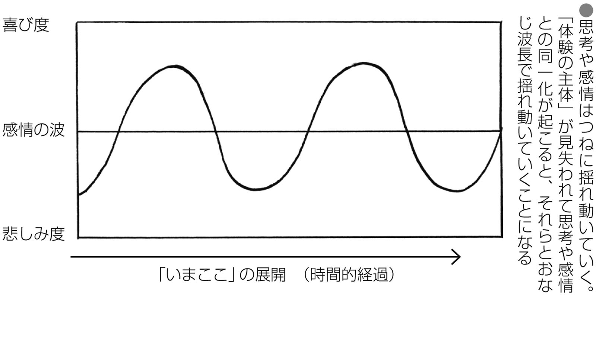
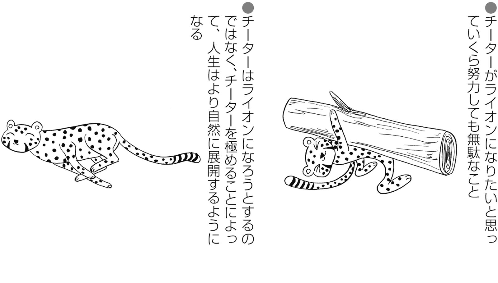

| 「いまここ」にさとりを選択する生きかた | |
| やまがみてるお | |
| 株式会社ナチュラルスピリット (2017) | |
はじめに
さとりということばを聞いて、あなたはどのように感じられるでしょうか？
自分には関係がない？
むずかしい？
ほとんどの人には到達できない、高遠なもの？
いいえ、さとりとは、けっしてむずかしいものでも、一般に思われているような崇高なものでもありません。
さとりの状態こそが、人間にとって自然な状態なのです。
私たちにとって、さとりは、人生を生きるうえでもっとも大切なことであるといっても、けっして過言ではありません。現代の私たちは偽りの自分を生き、「ほんとうの自分」を見失っている状態にあります。偽りの自分とは、思考に乗っとられた状態をいいます。
私たちは自分の気づかないうちに自分のなかに住む偽りの自分に責められ、つらい感覚におそわれるようなことを経験しています。自分のなかのその困った自分は、私たちのちょっとしたミスや欠点など、またそれらに対するネガティブな感情を見つけると、激しく攻撃をしてきます。これが思考です。このようにして私たちは、思考に操作された人生を生きています。思考に乗っとられる原因は無意識にあります。無意識に生き、思考に同一化する習慣を身につけているからです。私たちはなぜ自分の気分がすぐれないのかにすら気がつきません。
さとりとは思考からはなれた自分――これが「ほんとうの自分」です―を発見し、そこから人生を生きている状態をいいます。思考からはなれた意識を私は「体験の主体」とよんでいます。
無意識に思考と同一化する習慣が私たちに、「ほんとうの自分」――「体験の主体」――を見失わせます。思考が起こったときにそれに気づき、それに気づいている存在に意識を集中することをくりかえし習慣化することで「ほんとうの自分」はとりもどされます。新しい習慣の獲得ですので、さとりは誰にでも習得することができます。
思考が起こったときにそれに気づき、そこからはなれた視点で生きることが可能です。これが習慣化され、その視点が定着すると思考が起こった瞬間に私たちはそれに気づくようになります。思考に気づいている意識、つまり「体験の主体」が定着するとさとりです。これが一時的に体験されることを「さとり体験」や「最初の一瞥」などとよびます。
本書の目的は、さとりとは何か、そしてその状態を生きるための方法をわかりやすくお伝えすることにあります。
宇宙は完全に機能しています。これは、宇宙には、それ自体をつくり、完全に機能させている力が存在することを意味します。その力が私たちを誕生させ、「いまここ」に生かしてくれています。宇宙は、これまでも、そしてこれからも、完全に機能しつづけていきます。
宇宙ということばの真の意味には、この目に見える物質的な側面だけではなく、その背後にある、完全なる秩序も含まれています。けれども、現代ではこの部分はその意味から排斥されてしまっていますので、私は、物質的な側面の背後にある完全なる秩序を含む宇宙を表現するときには、「宇宙そのもの」とよんでいます。
さとりによって私たちは、自分の真実とは、この宇宙をつくり、完全に機能させている力、それ自体――「宇宙そのもの」――であることを理解します。やがてこの完全なるものの力が自己の能力のうちにとりもどされていきます。自分の真実を知り、その真実とともに生きている状態になります。
誕生した生命は、進化とともに体と意識を獲得しました。この意識の体験が生命の個別意識をつくりあげています。個別意識は、それの宿る体を維持し、活用するための司令センターとしての役割を担います。たとえば何かの危険を察知したときには、この司令センターは恐怖を感じ、その危険からはなれるよう指令を発します。体はこれに反応し、その危険からはなれようとします。この一連の動作に成功すると、その個別の生命は危険から逃れることができます。
進化の現段階では、私たち人類の意識性はまだまだ無意識に支配されています。意識性の扉は開かれましたが、その能力を十分に生かすにはいたっていません。
その後、進化の過程において記憶の能力を獲得した私たちは、個別意識の経験の記憶を蓄積していきました。このそれぞれの人生経験の記憶が、私という個人を誕生させました。これが私たちの分離意識です。こうして記憶がつくりだした分離意識の幻想の世界に、私たちは生きるようになりました。経験の記憶の蓄積に比例して、私たちは分離意識をより強化していきます。これが自我の正体です。
私たちは「ほんとうの自分」――「体験の主体」――を見失い、経験の記憶――自我――に支配されています。「ほんとうの自分」は自我に乗っとられ、自我に人生を牛耳られている状態にあります。
私たちは「宇宙そのもの」のあらわれであり、「宇宙そのもの」の目的のために「いまここ」に生きています。自我自体は悪いものではありません。が、それが主人の席に座していることに問題があります。自我は私たちとともに力をあわせて、「宇宙そのもの」の目的を達成するために存在しています。
現代の私たちは、自分自身の真実の状態をはなれ、偽りの自分に乗っとられた自我の状態を生きています。
心当たりはありませんか？
どうして私たちはこれほどまでに、それぞれの幸福をつかみとることに苦難しているのでしょうか。
自分のなかに、何か違うと感じている感覚はありませんか？
私たちは感覚的に、いまの自分が信じていること、考えていること――すなわち、それは記憶からできた自我なのですが――が、真実――自分の感じていること――から大きくかけはなれていることを知っています。この偽りがもたらす苦しみは社会へと投影されます。私たちは社会に対するいきどおりを感じながら、それぞれの人生を生きることになります。このいきどおりが内側へと向けられると、肉体的病気や精神障害を発症させ、外側へと向けられると、暴力や犯罪、また大小さまざまな争いの原因となります。
記憶に縛られた状態から、記憶から解放された状態にもどると、私たちは自分自身を肉体に拘束された存在ではなく、この宇宙の完全性よりあらわれた「宇宙そのもの」であることを思いだします。
私たちは、宇宙はその物理的あらわれとしての自我をとおして、みずからの目的を達成するために存在していることを理解します。これが私たちの存在理由であり、それぞれの人生の目的です。
宇宙にはそれ自体をつくり、完全に機能させている力が存在しています。私たちが「宇宙そのもの」の目的と調和した自分自身の人生の目的を発見すると、それは自然に現実化します。これこそが私たち人間がもともともっている、「宇宙そのもの」の能力です。
さとりによって私たちは、人間として自然な、内的にも外的にも満たされた人生へと自然に導かれていく状態になります。
本書は、七つの章から構成されています。
第１章では、二一世紀に生きる私たちの人間観が、真実から大きくかけはなれていることと、この偽りにもとづいた人間観から真実の人間観への転換が、現代の地球上で進行しつつあることをお話しします。
第２章では、現代の私たちが信じている偽りの自己イメージが、どのようにして形成されたのか、そしてこの偽りの自己イメージからの目覚めが起こる理由をお話しします。
第３章では、「ほんとうの自分」の感覚が、どのようにして私たちの感覚へととりもどされていくのか、さとりの起こる過程とその全体像をお話しします。
第４章では、自我がさとりの障害となる理由や、自我がさとりを妨害するおもな方法をご紹介します。これによって自我の策略から目覚めるきっかけをご提供することができるでしょう。
第５章では、じっさいに「体験の主体」を発見していただくための、いくつかのエクササイズをご紹介します。じっさいの体験をとおしてそれは進行していきます。論理的に理解しただけでは、「体験の主体」は定着しません。体験とくりかえしの習練が、私たちをさとりへと導きます。
さとりは私たちを新たなる可能性へと導きます。第６章と第７章ではこの可能性についてお話しします。さとりはゴールではありません。さとり以後がほんとうの人生のはじまりです。価値ある人生の謳歌が可能になります。
第６章では、自己イメージと世界観の重要性をお話しします。私たちの行動が自己イメージと世界観によって決定していることと、それを転換していくコツをお話しします。
第７章では、さとりの私たちにもたらす真の価値をお話しします。さとりによって、私たちは世界には何の問題もないことを理解します。けれども、これがさとりのすべてではありません。さとりは私たちの全能力を解放します。さとりにより、より豊かな人生がまっている可能性があります。さとりの平安を終着地点としてとらえることは、社会にとって大きな損失となります。社会はさとりによって開かれる、あなたの可能性を必要としているからです。
本書をとおして、じっさいに「さとり体験」が起こり得ます。けれども、これが起こるためには、読者であるあなたの強い決意と、くりかえしによる習練が必要になります。さとりとは新しい意識状態を習慣化によって獲得することだからです。
本書が、あなたの新しい習慣の獲得のための助力となることができましたら、著者としてこれ以上の喜びはございません。
やまがみ てるお
❶...... 私たちには「宇宙生命」の能力がある
私たち人間は、自分の思っている以上の能力を秘めています。けれども、そのことには気がついていません。
たとえばすり傷や切り傷、骨にひびが入っても、それは自然に治ります。私たちは、この治癒能力を自然現象だととらえています。が、そうではありません。じっさいには、自分自身の能力で治しているのです。
傷や骨折を治す能力はたんなる自然現象ではありません。私たちの意識のおよばない部分の私たち自身の能力です。
受胎についてもおなじことがいえます。受精が起こると、受精卵は子宮に着床し、胚を形成していきます。胚から胎児へと成長し、ヒトとしての体を形成していきます。出産の準備が整うと、この世界へと誕生します。
見たいものを見たいと思った瞬間に、目はその方向へ向きます。聞きたいものを意識するや、耳はその音をとらえます。私たちは、指や手足を動かす方法を、いちいち考えて動かしているわけではありません。私たちは無意識の部分で、それが起こるように意図し、それが起こることを受け入れています。このおかげで、これらは起こっているのです。
怪我を治す能力、誕生時にみずからの体をつくりあげた能力、誕生後に体を成長させてきた能力、維持、機能させている能力、私たちの、意図とともに体を動かす能力は、意識されていませんが、すべて私たち自身のもつ自分自身の能力なのです。
これらの能力を、人間自身の能力、つまり自分自身の能力であると、意識的に感じている人はあまり存在しないことでしょう。
私たちは、自分とはこの宇宙から誕生した、宇宙の全能力と無限の可能性を秘めた存在であることを忘れ、それぞれのもつ人間というイメージのなかへと、自己の真実を押しこめている状態にあります。このためその真の能力の発現を抑えた制限された人生を生きています。
私たちは、「宇宙そのもの」である「宇宙生命」のあらわれとして、「いまここ」に人間の形態として存在しています。「宇宙そのもの」から人間として誕生し、やがて死のときを迎えると、ふたたび「宇宙生命」のなかへとかえっていきます。
物質を含めて、物理的宇宙に存在するすべてのものが、おなじ「宇宙生命」のあらわれです。すべてのものが、それぞれの存在形態をとおして、「宇宙生命」の能力を活用して存在しています。
傷を治す能力や、母の子宮のなかでみずからの体をつくりあげた能力、体を成長させ維持、機能させている能力、体を自由に動かすことのできる能力は、私たちに与えられた自分自身の能力です。
生命を維持し機能させているこれらの働きは、私たちの意識のおよばない部分の能力によって営まれています。心理学者カール・ユングは、これを普遍的無意識とよびました。
意識――私たちの感知することのできる意識、個別意識、顕在意識――とは、私たちの意識全体――全存在――のほんの一部分であり、それは海に浮かぶ島にたとえられます。島は海の底では隣の島につながっています。隣の島もさらに隣の島につながり、すべての島がおなじ地球の陸地を形成しています。意識の深い部分は、このようにすべての命――ユングの時代には、まだ人間の意識しか含まれていませんでしたが――につながり、共有されています。
私たちの意識は、この海面に浮かぶ部分のみをとおして――島として――生活しているため、海面下の働きやその能力、また他者やすべてのものとのつながりに気づかないままに生きている状態にあります。

すべてのものは、「宇宙そのもの」のあらわれです。ここでは「宇宙そのもの」より誕生したように語っていますが、じっさいには、「宇宙そのもの」の内側で起こっている、形態的な変化を語っています。
意識はしだいに段階的に発展してきました。「宇宙そのもの」より物資的宇宙が誕生し、普遍的無意識が誕生しました。物質的宇宙に生命が誕生すると、そこに個的無意識が宿りました。生命が人類にまで進化すると、そこに意識が宿りました。
誕生後、私たちは個別意識をとおして世界を体験していきます。個別意識が、すべての体験の土台となります。
こうして学んだ自分と世界との関係によって、自分とは何かを定義します。この記憶が自我を形成します。
私たちの感じている自分という感覚は、五感をとおして外側の世界を体験したことの記憶によってできています。記憶がなければ、自分の定義―自我―は存在しません。そこには体験者―行為者―は存在しなくなります。そこでは純粋な体験が起こり、それがくりかえされていきます。
体験の連続が記憶され、記憶のすべて、もしくは印象深いものによって形成された感覚が、私たちの感じている自分――行為者――の感覚をつくりだします。
私たちの意識は、五感をとおして世界を認識し、そうして認識した世界を生きています。五感とは、物理的世界を感知する機能です。このため誕生した意識は、物理的世界――外側の世界――のみへと向けられる傾向にあります。
このような性質のため、私たちの意識は外側の世界のみへと向けられ、内側の能力に対しては意識が向けられず、盲目的になっていく傾向にあります。
意識の外側の世界との関係によって語られた自分に対する定義が、私たちの自分という感覚をつくりあげています。自分に対する定義は思考によって形成されています。現代に生きる私たちは、おおむねこの思考と同一化し、その思考こそが自分のすべてであると、勘違いしている状態にあります。思考との同一化が、私たちを、自分の真の姿と、その真の能力から切りはなしている原因です。
外側の体験をとおして定義づけたもののみを自分だと感じ、その背後に隠れた側面には気づいていません。現代の私たちは自分の半分の側面しか生きていません。
❷...... 人類は｢人間ごっこ」の幻想におちいっている
私たちは、「宇宙そのもの」のあらわれとして、人間という形態を生きています。あるものすべては、「宇宙そのもの」である「宇宙生命」のあらわれです。
現代の私たちは体と同一化し、体をとおして体験してきたことで自分を定義づけし、その定義にもとづいた人生を生きています。自己の真実を知らずに、それぞれの体に拘束された人生――人間という概念――を生きています。
誰もがこの状態――体に拘束された人生――を疑うことなく受け入れ、自己の真実を人間という自己イメージのなかへと押しこめています。私はこれを幻想の「人間ごっこ」とよんでいます。私たちは現代、人類全体で幻想の「人間ごっこ」におちいっています。
私たちの生きるこの物理的宇宙は、「宇宙そのもの」の物質的側面です。「宇宙そのもの」の形態としてのあらわれである物理的宇宙は、その変化の側面です。そこにはつねに新しい変化――展開――が起こります。これが生命にあらわれると進化になります。すべては「いまここ」を始点に新しい展開を迎えます。けっして静止することはありません。進化しつづけていきます。
「宇宙そのもの」から誕生した生命は進化をくりかえし、やがて進化の旅の過程で私たち人類を誕生させました。誕生した私たちは世界を体験し、それを定義しはじめました。
意識は外側の世界を感知する機能である五感をとおして世界を認識するため、外側の世界のみへと向けられる傾向にあります。外側の世界の体験とその定義づけによって私たちは世界と自分自身のことを理解していきます。
肉体に宿った意識である私たちは、意識の体験したものだけを認識することができます。私たちは誕生後、自分の感覚のみを経験して生きています。意識は外側の世界のみへと向けられ、そこから理解された自分の定義を信じて生きています。内側の側面には目を向けず、自分の外側の側面だけで、自分を定義づけしています。
意識は、自分の内側の側面の存在には、まだ気がついていません。けれども、意識の体験こそが、自分の体験のすべてであるため、私たちは、この体験から得た感覚に確信を感じます。この確信が、私たちの人間観をつくりあげます。
私たちは、自分の理解している人間や世界に対する定義を、自分の子どもへと教育します。「人間とは何か」「世界とは何か」、自分の理解しているものを教育します。教える側がこれを完全に盲信しているため、これは絶対的な真実として伝えられます。
子どもはそれを信じます。私たちは、親を含む人生の先輩から教えられたことを、ただ教えられたからという理由だけで真実として受け入れ、おなじ盲信の罠にはまります。
誕生と同時に、この教育ははじまります。私たちはその後「自分が人間であること」や「人間とは何か」「世界とは何か」の教育を受けつづけていきます。
私たちは無意識のうちに、おなじように考え、おなじように生きるよう強要しあっています。これを真実として受け入れ、信じることによって、私たちはこの世界へと受け入れられます。親から子へ、教育者から生徒へ、人間に対する盲信、世界に対する盲信は伝達されていきます。
やがて私たちは、この偽りの人間観、偽りの自己イメージに疑問すら感じなくなっていきます。
歴史を通じて、私たちは、自分たちが信じるようになった人間という概念を、現代まで延々と伝えあってきています。いまもなお、それを盲信している状態にあります。
❸...... さとりとは人間という幻想からの目覚め
さとりとは人間という幻想――自己の偽りの定義――から、自己の真実である「宇宙そのもの」――「宇宙生命」――へと目覚めることです。「宇宙生命」とは、私たちの住むこの物理的宇宙の背後にある、あるものすべての源です。
かねてよりこれは、神や仏、真我、ワンネスなどとよばれてきました。さとりによって、私たちは、「ほんとうの自分」と一体化した状態へともどります。
生命の能力として宇宙の背後に存在する、すべての源である「宇宙そのもの」のもつ能力を、自己の感覚のうちにとりもどすことは可能です。自己の真実が「宇宙そのもの」――「無限なるもの」「永遠なるもの」――であることが思いだされると、その能力――無限の能力と自我レベルをこえた自己の永遠性――がとりもどされます。
自我レベルをこえた自己の永遠性がとりもどされると、私たちは、永遠の本質につながり、自己の有限の側面に属する体が滅びることに対しても、喪失感を感じることが少なくなっていきます。体への執着から起こる影響からはなれ、その影響からの自由を獲得した人生を生きることができるようになります。死は自己の消滅を意味するのではなく、形態の変化にすぎないことを思いだします。
唯一存在する「宇宙そのもの」を、人類はさまざまなパーツに分断して、名前をつけて分類してきました。
私たちの五感は、それぞれが感知することのできる一定の部分だけを認識しています。
光には波長があります。三八〇ナノメートルから七七〇ナノメートルのあいだの波長を可視光線といいます。これが一般に私たちの目に見える範囲です。これよりも上下の光の波長は、私たちの目には見えません。けれどもそれは存在していないという意味ではありません。私たちの視覚の能力には限界があり、それはこの視覚の能力でとらえることのできる範囲よりも外側に存在しているため、私たちには認識することができないのです。さらにそれは私たちが光と名づけたもののたんなるスペクトルであって、じっさいには不可分の光が存在しているにすぎません。
音も波長です。私たちには聞こえる音の範囲があります。それをこえる高い波長や低い波長は、私たちの聴覚の能力では聞きとることができなくなります。けれどもこれらもたんなるスペクトルをあらわしているにすぎません。
私たちは空気にふれることはできません。けれどもこれは、そこに何も存在していないことを意味しているわけではありません。空気中の酸素と水素が結合すると、水に姿を変えます。温度がさがり水が氷へとその姿を変えると、それまでは目に見えなかった、ふれることのできなかったものが、いまではもちあげることさえもできるようになりました。けれどもこれは、水や氷が誕生したことを意味するわけではありません。それらを構成する分子が、ときには空気としてあらわれ、べつのときには水としてあらわれ、またべつのときには氷としてあらわれたことを意味します。私たちの視覚や触覚からすると、そのように見える、そのように感じられることを意味しているにすぎません。
味覚や嗅覚にもおなじことがいえます。
人間の幻想から目覚めることによって、私たちは、自分と外側の世界とのあいだに感じていた境界線が、確定的なものではないことを理解します。これまで感じていた境界線は、私たち自身がつくりだしたイメージにすぎず、このイメージの崩壊によって、自分の「真実の姿」を思いだします。「宇宙そのもの」のあらわれとして個別の体に宿り、それぞれの役割を生きていることがわかります。
形態的に感じる自分自身よりも外側に感じる部分も自分自身であり、出来事とは、その部分の行為であり、メッセージであると感じられるようになります。これによって私たちは、あるがままの出来事に自分自身をゆだねることができるようになっていきます。
私たちが自分の「真実の姿」を見失い、人間という幻想にとらわれている理由は、それぞれの人生をとおして受けてきた教育のためです。私たちは人生の先輩たちの語ることばに疑問を差しはさむ余地をもちませんでした。教えられることを教えられるがままに信じ、それをいまも受け入れています。
教えられたことを教えられるがままに信じている理由は私たちの側が、教えられたことに対して疑問すら感じていないためです。人生の先輩の語ることばは、疑問の余地もなく、正しいことであると私たちの側が決めつけているからです。
さとりによって、私たちは「ほんとうの自分」に目覚めます。「ほんとうの自分」に目覚めることによって、本来の能力が発現します。もともともっている真の能力を、活用することができるようになります。
❹...... さとりの時代の訪れ
人類は、現代、幻想の「人間ごっこ」から目覚めつつある時代を生きています。けれどもこれは、この時代に生きる私たち自身には、直接認識できることではありません。
私たちの生きる物理的宇宙は、「宇宙そのもの」の変化の側面です。そこにはつねに新しい変化――展開――が起こります。けっして静止することはありません。それがこの世界の性質です。物理的宇宙は、つねに「いまここ」を始点にして新しい展開をくりかえしていきます。
個別の生物においても、また種においても、つねに新しい展開がくりかえされていきます。進化の歴史においても、人類の歴史においても、この新しい変化――「いまここ」を始点にした新しい展開――がくりかえされていることがわかります。宇宙は「いまここ」を始点にしてつねに変化しつづけていきます。
私たちは、けっして静止することのない変化のなかに生きています。
赤道付近に住む人は、時速およそ一七〇〇キロメートルの速度で自転する地球上で生活をしています。日本付近では、時速一四〇〇キロメートルで自転しています。私たちは動いている地球と同化しておなじ速度で移動しながら生活をおこなっていますので、このことは体感されません。ちなみに、自転しながら地球は太陽のまわりを時速一〇万キロメートルの速さで公転しています。
流れる川面に落ちた木の葉は、水流とともに流れていきます。川の流れと完全に同一化し、流れのままにどこまでも流されていきます。
自分が移動していることに――自分に起こっている変化に――気づくためには、自己の視点をはなれ、かつある程度静止した視点を必要とします。
宇宙観は、それぞれの時代の進化のレベルに応じて、時代とともに転換されてきました。科学的な観測の手段をもつ以前の私たちは、それを神話をとおして語り、科学的な観測方法を獲得してからは、科学のことばをとおして語りました。
かつて私たちは地球は宇宙の中心に位置し、宇宙がそのまわりをまわっていると信じていました。この時代の人々にとっては、地球は宇宙の中心に位置していました。
地球が宇宙の中心に位置し、宇宙がそのまわりをまわっていると考える宇宙観を、天動説といいます。いっぽう、地球が動いていると考える宇宙観を、地動説といいます。
一六世紀、天文学者コペルニクスは、宇宙で観測される現象は天動説よりも地動説にもとづいたほうが、より自然に説明できることに気づきました。晩年、彼はその計算方法を記した著書『天球の回転について』を出版しました。
一七世紀、天文学者ケプラーの発見したケプラーの法則によって、天動説に対する地動説の優位が決定づけられました。コペルニクスの著書出版から五〇年以上の歳月が経過していました。
現代では、地球は宇宙の中心ではなく、太陽のまわりをまわる惑星の一つであることがわかっています。
世界は、「いまここ」を始点にしてつねに新しい展開をくりかえしていきます。「いまここ」はつねに新しい転換にぬりかえられていきます。つねに「いまここ」を始点にした新しい展開がくりかえされていきます。そしてすでに積みあげられたものは、けっしてあともどりはできません。これは世界が不可逆的存在であることを意味します。
すでに起こった出来事は、けっしてあともどりできません。
また、それぞれのものによって、変化の速度には違いがあります。歴史の転換する速度、人生の展開する速度、日常が進展する速度、宇宙ではさまざまなレベルの変化が、同時に進行しています。
変化――「いまここ」の展開――は、それぞれのもつ時間的スケールにもとづいて起こります。
生きものの個体が成長する過程は、ここでみた宇宙観の転換よりも、はるかに小さな時間的スケールにおいて展開します。
たとえばコペルニクス以前にも、地球が動いていると考えた人物は存在しました。なかでも古代ギリシアの天文学者アリスタルコスの太陽中心説は傑出していました。けれどもじっさいに地動説が定説になるには、その後一八〇〇年の時間を要しました。
私たちヒトにおける受精から誕生までの胚の成長は、およそ一〇か月の時間的スケールで起こります。植物の成長においては、もっと短い時間的スケールで起こります。
けれどもこの植物の成長でさえ、種子を植えてから発芽するまでには、ある程度の時間を必要とします。私たちにとって、植物の種を植え、それが芽をだし成長するようすをじっと見つめてすごすことは、ほとんど不可能です。理由は植物の成長する時間的スケールが、私たちの日常生活の展開する時間的スケールよりも、はるかにゆっくりと展開しているからです。植物の成長過程を撮影した映像を早送りして短時間で再生すると、私たちはその過程を観察することができるようになります。
植物の成長する時間的スケールが、私たちの日常生活の展開する時間的スケールよりもはるかにゆっくりと展開していることがわかります。宇宙観の転換する時間的スケールは、それよりもはるかにゆっくりとしたペースで進展します。
これが、じっさいに進展している最中の世界観の転換であっても、私たちには体感されにくい理由です。これによって、じっさいに観察している場合においてもそれが私たちの意識にとっては気づきにくいことであることがわかりました。
宇宙は生命を誕生させ、人類にまで進化しました。進化は、私たちをとおして自己の真実が「宇宙そのもの」であることに目覚めつつある時代を迎えています。
私たちは現代、人間とは「宇宙そのもの」のあらわれであることに目覚めつつある時代を生きています。これはゆっくりとした速度で徐々に世界中へと浸透しています。私たちは、人類が長く信じてきた幻想の「人間ごっこ」から目覚めつつある時代を生きています。これが現代の私たちが経験している生命観の転換――「いまここ」の新しい展開――です。
ある変化が起こるために必要とされる最小のエネルギーを閾値 といいます。
新しい世界観に目覚めた人の数が、あるとき閾値をこえると、その後はそれが世界の定説に転換されます。歴史をふりかえったときに、私たちが世界観の転換がいつ起こったのかの境界線をさし示すことができるのは、このためです。
❺...... さとりこそが「第一義的な目的」
現代の私たちは、人類の歴史をとおして延々と伝えられてきた人間という幻想にとらわれ、拘束された人生を生きています。これは、私たちが人生をとおして学んできた、偽りの人間観を盲目的に信じているために起こっています。人生経験をとおして学んだ人間という幻想を盲信し、その人間の幻想によって、みずから自己の行動を制限しているのです。
私たちは、過去の体験の記憶を参考にして自己を定義することによって、自分という感覚を経験しています。このため、人生の経験の記憶の蓄積の増加、強固化によって、分離意識をより強化していきます。これが自我です。自我とは、実体のないある方向性をもった意味と定義することができます。
記憶とは、現実ではなく、思考でできているたんなる幻想にすぎません。けれども私たちの意識は、この記憶のもととなった展開の連続をじっさいに体験しているため、それが記憶のなかの残像にすぎないことを理解することはなかなかできません。この記憶の集大成と同一化することで、自己を実体化し、自我が形成されます。自我はその後、この方向性への成長を自律的におこなうようになり、私たちの主体性を乗っとることに成功します。自我はこうして私たちを従者として操るようになります。
自我は、私たちの意識を乗っとり、まるで自分こそが主人であるかのように君臨しています。私たちはこれにだまされ、自我の家来の立場へと失墜させられています。が、このことにすら気づいていません。
さとりとは、記憶からなる自己イメージとの同一化からの目覚めです。私たちの意識――「体験の主体」――が記憶からなる自己イメージと同一化することによって、自我は実体化します。自我は、私たちの意識を思考にとりこむことでしか、自分を存在させる方法をもっていません。
私たちは、自分自身の真実が「宇宙そのもの」であることを思いだし、それまで信じていた偽りの自己イメージ――人間の幻想――の影響からはなれることができるようになります。
その後、私たちは自己の全能力を意識的に活用することができるようになっていきます。が、これはさとり後の話です。自我は、この可能性には興味をもちますが、さとりには興味をもちません。さとりとは、自我の消滅を意味することだから当然のことだといえます。このため自我は、その後、巧妙にこのさとりの思想を活用します。
さとり後の可能性が、私たちの自我の興味を強くひきつけることができるからです。私たちの自我が、その可能性に興味をもち、それに働きかけようとすればするほど、自我の存続が約束されます。さとり後の可能性にとらわれ、その思考に同一化します。
これは、さとりを巡る堂々巡りへと、私たちをおとしいれます。こうして私たちはまた、「人間ごっこの会」の拘束力にからめとられます。
さとりは、私たちの可能性の扉を開き、もともともっているすばらしい能力を発現させます。けれども、これはさとり後の話であり、この部分にのみ興味を感じているとすると、それは自我の策略にはまっていることを意味します。世界にはたくさんの成功法則が存在しますが、これらがじっさいに機能しない理由は、この点にあります。
私たちの目的は、偽りの自己イメージからの目覚めです。自己の「真実の姿」をとりもどすことが、自己の本来の能力の発現を可能にします。さとり――すなわち自己の真実に目覚めること――これが私たちの第一義的な目的です。その後、私たちは自分本来の役割に目覚め、それを実現していきます。これが、第二義的な目的です。
第二義的な目的は、ただあるがままの展開にゆだねることによって、現実化していきます。私たちは「宇宙そのもの」であることを思いだします。宇宙とは、ただあるがままの展開です。ただあるがままの展開へのゆだねが、私たちをよりすばらしい人生の展開へと導きます。けれどもこれは、自我にとってという意味ではありません。自我とは、思考による操作性です。あるがままの展開へのゆだねとは、操作性をあきらめること、自我の存在意義をあきらめることです。これは自我にとって、苦悩以外の何ものでもありません。
したがって、自我の願望と、私たちの「宇宙生命」としての役割を見わける方法は一つです。自我の願望には、「いまここ」の否定があります。私たちの本来の「宇宙生命」としての役割は、あるがままの受容によって展開していきます。ただゆだねるだけで進展していくことを、私たちはそれぞれの人生において目撃します。
宇宙の目的は、私たち一人ひとりの希望や願望を聞き届けることではありません。「宇宙そのもの」のもともとの目的を達成するために、私たちの自我を媒体として活用し、それ本来の能力を発揮させることにあります。自我の操作性を手ばなし、あるがままにゆだねればゆだねるほど、人生はよりよく展開していきます。
第一義的な目的が達成されると、私たちの人生は自然に成就の方向へと向かいはじめます。これによって第二義的な目的が達成されるようになります。
❶...... 私たちは偽りの自己イメージの奴隷
私たちは「宇宙そのもの」のあらわれとして、「いまここ」に生きています。「宇宙生命」が人間としての体に宿り、それぞれの生――思考や感情、体――を生きています。
私たちの内側には、「体験の主体」が存在しています。「体験の主体」こそが、「ほんとうの自分」です。「体験の主体」が、私たちの体をとおして世界を体験し、それに対する反応を生きています。反応とは思考や感情、それを反映したさまざまな行為、活動のことです。
人生をとおして、私たちは思考と同一化する習慣を身につけ、つねに思考を体験している状態にあります。このため「体験の主体」の存在は、思考の背後に隠れています。
「体験の主体」が体験の内容に巻きこまれると、私たちの意識性は低くなります。より無意識になるという意味です。意識性が低くなると、「体験の主体」が思考や感情、体と同一化してしまいます。これが思考や感情、体との同一化の起こりです。こうして私たちは自我に乗っとられます。自我に乗っとられているあいだは、自我の思うがままに操られます。
自我は思考をとおして外側の世界――社会――に対する個人的な解釈をおこなっています。この個人的な解釈が極端なものへと成長すると、それは社会に対する極端な行動としてあらわれます。この反応が自分自身に向けられると肉体的病気や精神障害として私たちはそれを体験します。この反応が外側の世界へと向けられると、暴力や犯罪、大小さまざまな争いとして、私たちはそれを体験します。
現代の私たちの抱える社会的問題はすべて、私たちがこの「ほんとうの自分」を見失っていることから――「体験の主体」が自我に乗っとられていることから――起こっています。
思考や感情、体への同一化が起こっているときには、思考や感情、体イコール自分になっていますので、そこにはそれらに気づく視点は消失しています。それらに気づくことができる視点こそが、私たちのうちにある「体験の主体」です。

「体験の主体」が思考や感情、体と同一化すると、それら――すなわち自我――に乗っとられます。思考や感情、体との同一化が起こっている最中には、私たちは「体験の主体」の視点を見失い、思考や感情、体といっしょになって活動している状態になります。思考や感情はつねに揺れ動いています。「体験の主体」が見失われると、この揺れ動く思考や感情に翻弄されることになります。
そこには思考や感情、体しか存在していません。思考や感情、体を自分だと感じている状態です。「体験の主体」は思考のなかへと埋没し、主体性を消失します。主体性を消失すると、私たちは無自覚のうちに人生を思考や感情、体と同一化して生きていくことになります。無自覚ゆえに、私たちは自分が無自覚であることには気づきません。
思考や感情の波、体を体験しながらも、同時にまた、それに気づいている意識状態が存在します。それらの起こりに気づいている状態、思考や感情、体の起こりを自覚している状態こそが、「ほんとうの自分」の視点、「体験の主体」です。
荒れた海で救助をまつ人は大きな波とともに揺られ、翻弄されています。
さとりによって「体験の主体」がとりもどされることは、ヘリコプターにレスキューされて、波からはなれた視点をとりもどすことです。その視点から荒れた海面を眺めてはじめて、波に翻弄されない視点の存在と、その視点から得られる利点――真の人生――を私たちは知ることができます。
思考や感情の波は悪いものではありませんので、そのまま起こりつづけていきます。
さとりとは揺れ動く思考や感情からはなれた視点をとりもどすことをいいます。
❷...... ことばがつくる概念の世界
私たちの記憶の能力が、自我の存在を可能にしました。
個別の自我が存在するという感覚は、人類全体でおちいっている集団妄想です。この妄想――人間という幻想、行為者としての自分が存在しているという幻想――のもとになっているものが、ことばです。ことばへの盲信が、この妄想を強化しています。
進化の過程において、私たちは記憶の能力を獲得しました。これにより個別意識の経験の記憶が可能になり、私たちは「宇宙そのもの」であるにもかかわらず、この記憶との同一化によって、自分をそこから分離した存在として感じるようになりました。これが分離意識の誕生です。
人生経験――記憶――の蓄積によって、分離意識はさらに強化されていきます。誕生時にはつながっていた「宇宙そのもの」の感覚から、やがて分離意識へと、自己感覚の逆転が起こります。いまではこの分離意識が自分のすべてだと感じている状態にあります。
歴史をとおして、人類はことばによるコミュニケーション能力を発達させてきました。人間以外の生きものにおいても、鳴き声をとおした、ある程度のコミュニケーション能力が発達していることがわかります。群れをなす生きものは、生命の目的のために自然にコミュニケーション能力を発達させていくものであると考えられます。
動物の場合、コミュニケーションにおいて伝達されるものは、数種類の感情だけである場合もあります。たとえば群れのなかの一頭が、何らかの危険を察知した場合、その一頭は群れのなかまのことを考えてではなく、ただ自分が恐怖して、悲鳴の声を発して、その場所から走り去るかもしれません。群れのなかまはそれにおどろき、集団でその場所から走り去るでしょう。意図したものではなかったとしても、結果的に最初の一頭の悲鳴が、集団の存続を可能にすることになります。このような経験から、生命が危険を知らせる合図を発達させていく知恵を、獲得する可能性は十分にあります。個的にも、集団的にも、生き延びることは生命にとって重要な目的であるからです。
コミュニケーション能力の発達は、人類にことばを獲得させました。
ある人にものをとってもらいたいとき、それに名前をつけている場合と、つけていない場合とでは、伝える労力に格段の差があらわれます。
たとえば、「『それ』をとってください」とお願いした場合には誤解を発生させる可能性がありますが、両者のあいだで「それ」に対して合意している何らかの名称があれば、誤解を招く可能性が少なくなります。
このような理由から、私たちは、さまざまなものに名前をつけていきました。名詞はもちろん、動作やそれをより豊かに表現するために、副詞、助詞や装飾語と、ことばはその後、さらに進化、発展していきました。
最初は、生活をより便利にするためにことばを開発した私たちでしたが、これが思わぬ弊害をもたらしました。命名することによって、命名されたものを一なる宇宙から分断して認識することができるようになったのです。
ことばを獲得したことによって、私たちに思考が可能になりました。思考は、ものごとの意味づけによる説明を可能にしました。ものごとの意味づけによる説明とは、概念化のことです。すべては思考や概念によって説明されていきました。ものごとの説明による分類が可能となった一方で、それらのものに制限が与えられていきました。
記憶の能力の獲得とともに、すでに分離意識の土台のうえに生きはじめていた私たちは、命名しながら、それらのものもすべて、宇宙から分離しているものとして分類していきました。
こうしてことばは、私たちの意思の疎通の可能性を広げる一方で、真実を形骸化していきました。ことばとは、対象とするものを、名前と意味により説明するものにすぎません。
人類は、歴史の過程で、ことばが真実を形骸化していることを忘れていきました。私たちは真実の世界に生きるのではなく、ことばで説明された概念の世界に生きています。
たとえばコップということばをとおして、私たちは、共通のイメージを伝えあうことができます。ことばは、人と人とのあいだに、おなじイメージを伝達していくことを可能にします。けれどもこのイメージには、水をそそぐことはできません。これは、ことばは真実ではないことを意味しています。コップということばは、コップそれ自体ではありません。それにもかかわらず私たちは、この真実を忘れてことばとそれのあらわしているものを、イコールで結んでとらえている傾向にあります。ことばは、それのあらわしているもののイメージにすぎず、それそのもの――それのあらわしているものの真実――ではありません。
真実ではないことばをとおして、私たちは世界を認識し、自分を認識し、完全に理解したつもりになっています。
「人間とは何か」「世界とは何か」、真実ではないことばをとおして、私たちは数千年にわたって、ずっとこの説明を伝達しあってきました。こうして幻想の人間や世界という概念をつくりあげ、その概念で、自分たちや世界を理解したつもりになっています。いまでは私たちは世界に存在するものが、みな最初から分離したものであるという世界観に立ったうえでの教育を受け、それを信じています。教えられたもので、世界は説明しつくされたという合意のうえに生きています。
「木とは何か？」の図の例 とおなじように、私たちは「宇宙生命」である自分自身を、人生経験によってつくりあげてきた自分の定義のなかへと押しこめ、制限をあたえています。無限の可能性が小さな箱のなかへと押しこめられると、その制限に苦しむことになります。この制限が私たちの苦しみの原因です。
私たちは「宇宙そのもの」のあらわれとして「いまここ」に生きています。「宇宙そのもの」である「宇宙生命」のあらわれであり、この宇宙をつくり、維持、機能させている能力が、私たちを誕生させ、維持、機能させています。「宇宙生命」の能力は、私たち自身の能力です。ことばでは、「宇宙生命」の能力を完全に説明することはできません。
❸...... 人生とは自己イメージを形成する過程
ことばとは、一なる宇宙の任意の部分につけられた名称です。それはさらにことばによって、その意味が説明されます。
たとえばコップということばは、「コップ」という名称――音――の部分と、この名称から私たちがそれぞれに読みとる意味――直観的イメージ――の、二つの部分から構成されています。
「コップ」ということばを知らない人に、「『コップ』をとってください」とお願いしても伝わりません。
また、それぞれに理解できる言語が異なっている場合は――この場合は「コップ」ということばが、違う意味で伝わったり、まったく意味をもたない音として聞こえると――その役割を果たすことはできません。これは「コップ」ということばから受けとる意味が、両者のあいだで一致しないために起こります。あることばの意味を、互いに近い意味で理解している場合に限り、コミュニケーションは成功します。
私たちは「コップとはこういうものである」という、暗黙裡の理解をとおして、コミュニケーションを成立させていることになります。この暗黙裡の理解は、すべてことばによる形骸化のうえに成り立っているのですが、このことは認識されていません。このため日常のコミュニケーションをくりかえすことによって、この形骸化はより促進されていくことになります。
意識していても意識していなくても、私たちは日常の会話をとおして「人間とは何か」「世界とは何か」のイメージを伝達しあっています。
子どもが自分の人生の目標を語ったときに、私たちは自分の人生観をとおしてアドバイスする傾向にあります。たとえば、親が子どもの可能性よりも安定を願っているような場合には、日常の対話のなかの何気ないアドバイスのなかにも――「お父さんはそれを実現するのは、むずかしいことだと思うな」や「お母さんはそれよりも、こっちのほうがいいと思うわ」など――その人の人生観、人間観、世界観が無意識のうちに投影されることになるからです。
私たちは、自分の知っていることを、自分より知らない人に伝達しあう社会に生きています。これによって、社会に知識が広まり、より発展していく可能性が広がるからです。
親は、自分の子どもに自分の知っていることを教育します。これは動物界においてもおなじです。ある種の動物の親は、子どもが自分自身の力でエサをとることができるようになるまで教育し、その後自立をうながします。人間界において一般的に、何も知らずに生まれてきた子どもが世界のことを学ぶ手段は、親をはじめ人生の先輩からの教育です。
ことばを開発した人類には、ことばをとおした教育が可能になりました。けれどもことばは真実ではありません。真実ではないことばの盲信のうえにおこなわれる教育が、真実から私たちを遠ざける結果を招きました。
親から子へ、子から孫へと、人類の歴史を通じてこのような教育が延々とくりかえされてきています。この過程で私たちは自分たちの真実を忘れ、そうして学んだ人間という概念でできた幻想のなかへと、自己の真実を閉じこめています。
「宇宙そのもの」の形態的あらわれとして誕生した私たちは、体をとおしてこの物理的世界で活動することができるようになりました。
誕生後、私たちは名前を付与されました。名前は自分とそれ以外のものとの違いを認識し、自己イメージを形成していくための基礎となります。
たくさんのものの名前やことばを覚え、意味づけしていくとともに、そうして覚えたことばで、私たちは自分の人生の経験を物語化して記憶していきました。
記憶のなかに自分の人生の物語が形成されると、私たちはその体験――思いだすことのできる誕生から現在にいたるまでの物語――こそが自分自身であると感じるようになっていきます。
それを体験している主体にとっては、その体験以外の体験は存在しません。私たちは、つねに自分の体験だけがすべて――体験の一〇〇パーセント――に感じる意識の氷山の一角に芽生えた顕在意識だからです。こうして私たちは、顕在意識の部分だけが自分だと感じるようになりました。
生まれて間がないころの私たちにとっては、目にする世界のすべてが新鮮で、そのままで正しく感じられました。自分に何かを教えてくれる人のいうことに、疑問を感じる必要があるでしょうか。そのような必要性はまったく感じなかったことでしょう。親や人生の先輩から教えられることは、教えられるがままに吸収していきました。このように教えられるがままに吸収してきたことによって、私たちは自分を定義しています。こうしてつくりあげられた定義こそが自分のすべてだと感じ、その狭義の自分を生きています。
世界に誕生した私たちの意識に、こうして築かれていった物語の記憶が、自分の経験の一〇〇パーセントとして構築されています。それが自分の経験の一〇〇パーセント――すべて――である以上、それ以外の可能性――自己の真実がこの経験をこえた存在である可能性――に意識が向けられるようなことはほとんど起こりません。
こうして、自我こそが自分の真実―すべて―であると盲信した人生がつづいていくことになります。「ほんとうの自分」――「宇宙そのもの」のあらわれとしての自分、「永遠なるもの」、「無限なるもの」――は自我に乗っとられ、いまも忘れ去られています。
私たちがことばを発明したことによって、世界は分断されたわけではありません。世界はもともと一つの「宇宙生命」として存在しており、いまも一つの命として機能しています。私たちの側がこれをバラバラに認識し、いまもバラバラなものであるかのようにあつかっているだけです。
私たちが経験してきた人生とは、自己イメージを形成するための過程以外の何ものでもありません。
❹...... 意識のたどる「人生のサイクル」
形態的、身体的な成長とは別に、私たちは、意識の面においてもいくつかの成長段階を経験します。
変化の世界において、すべてのものは完成後、解体される運命にあります。
私たちは、誕生後、肉体的成長を経験します。肉体的成長はピークに達し、その後、老化がはじまります。現象界においてはすべてのものが、誕生し、成長し、やがて解体される運命をたどります。この肉体的成長の過程を経験しながら、私たちは意識の面においてもおなじパターンを経験します。
意識の面において起こる誕生、成長、解体のパターンを、私は、意識のたどる「人生のサイクル」とよんでいます。ここでいう意識とは私たちの「体験の主体」のことです。
私たちはあるとき「宇宙生命」から人間という形態となってこの世界へと誕生しました。誕生した生命の「体験の主体」に個別意識が芽生えます。
「体験の主体」は個別の意識をとおして人生を経験し、そこから自分とは何かを学び定義化していきます。自分とは何かの定義が一定の方向に収束しはじめると、私たちは自分と自分以外のものとの差異に目覚めます。この差異に着目することによって、私たちの「体験の主体」は、一定の方向に収束しはじめた自分の定義に同一化しはじめます。同一化の度合いが高まるにつれて意識性は低くなり、「体験の主体」は見失われることになります。
自分と自分以外のものとの差異の目覚めによって私たちは、「宇宙そのもの」から分離します。このときに私たちの分離意識は誕生しました。その後私たちは自分と自分以外のものの差異の部分を無意識のうちに体感しながら、この差別化をさらに強化していきます。
「体験の主体」にとっては、誕生以後の体験が自分の体験のすべてになります。それが自分の体験の一〇〇パーセントである以上、疑う必要はありません。このため私たちは、個別の自分が存在しているという感覚、行為者としての自分が存在しているという感覚――自我――が自分自身のすべてであるという錯覚のなかに生きるようになりました。
誕生した自我は、自分対他――自分対世界――という図式のなかで人生――物語――を生きはじめます。「体験の主体」はその後、この物語――自分の人生――のなかへと完全に埋没します。「体験の主体」はその後、その存在さえも忘れ去られます。
現代、人類は新しい進化の段階を迎えつつあります。平均的には人類の進化の段階はまだ自我のレベルにありますので、ほとんどの人はこの段階のまま人生を終えていく傾向にあります。
これはよい悪いの話ではありません。さまざまな段階を経て私たちは成長していきます。ただその段階であるという話にすぎません。
「宇宙生命」からあらわれた私たちの意識は、分離意識を形成して、一度宇宙から分離します。分離意識をとおしての経験によって、私たちは行為者としての自己の定義をより強化していきます。行為者としての自己の定義の完成は、自我の完成を意味します。
死のときを迎え個別意識が消滅すると、ふたたび私たちは「宇宙生命」のなかへともどっていきます。
死は偽りの分離意識から、「宇宙生命」への帰還を意味します。こうして私たちはふたたび全体意識のなかへとかえっていきます。これが意識のたどる「人生のサイクル」です。
変化の世界においては、すべてのものは完成後、解体される運命にあります。このため一部の人々は人生の最中に、これを経験しはじめます。その個人には、死のときをまたずして、自己の真実が「宇宙生命」であることを思いだす可能性が開かれます。
人類全体の進化のレベルが自我の段階であることが、現代に生きる地球上のすべての人がこの段階であることを意味するわけではありません。
進化は最初、種のなかの一部にあらわれます。あらわれはじめた変化に価値――優位性――があれば、その優位性は生存の確率を増大させ、さらにその数を増やしていきます。あらわれはじめた変化に欠陥があれば、その欠陥は生存の確率を減少させ、最後にはその新しい特性をもった生命はその実験段階において消えていきます。このような試行錯誤のなかから優位性の高い新しい機能の獲得が進化を促進していきます。これが受けつがれることによって、新しい優位性が地球上に広がっていき、進化の段階が進展します。
地球上に住むすべての人が平均的な進化の段階であることを意味するのではなく、それ以前の進化レベルの人も、より先に進んでいる人も同時にいまこの星に同居しています。
いま地球上で進行しつつある新しい進化は、自我レベルの自分――行為者としての自分――をこえた自分が存在する可能性に目を向けることによってはじまります。自分の体験したこと――自分の体験の一〇〇パーセント――だけがすべてではない可能性に意識を向けることによってはじまります。これを可能にするために大きな役割を担っているもの、それが苦しみです。
私たちの真実は、宇宙の背後にある宇宙のすべてを含む「宇宙生命」です。このため、自己の個別性が増大して自己の真実である「宇宙生命」からはなれる度合いに比例して、私たちは苦悩におそわれます。こうして、じっさいには存在しない苦悩が誕生しました。
個別意識は幻想ゆえに、苦悩とは、個別意識のつくりだした幻想です。個別性への執着の度合いが大きくなるにしたがって、私たちの苦悩は大きくなります。
自我が肥大化すればするほど、私たちの苦悩は増大します。このため幻想の個別性に気づく可能性が高まります。自我の肥大化は自我の崩壊へと近づくことを意味します。
❺...... 「いまここ」には思考は存在しない
人生とは体験の連続の記憶のことです。私たちは体験の連続を生きています。「いまここ」の体験だけが存在し、その体験を始点にして新しい体験が展開されます。新しい体験が展開されているときには、その始点となった以前の体験は、すでに世界には存在しません。記憶とは、その存在しないものの残像です。
いまの体験のうえに、つぎの新しい体験が展開されます。新しい体験が展開されると、さっきまで体験していた出来事は、さっきの体験になります。さっきの体験はいまには存在しません。けれども私たちはさっきの体験の記憶をもっているため、さっきの体験が確かに存在して「いた」ことを確信しています。この確信が、存在しないものをいまによみがえらせることになります。これが過去の記憶です。
過去の記憶が、過去という概念を誕生させました。
さっきの体験のうえに、いまの体験が起こります。さらに新しい展開を私たちは体験します。あのときの体験のうえにさっきの体験を、さっきの体験のうえにいまの体験を、つぎからつぎへと新しい経験を積みあげていくことによって記憶は構築されていきます。
このような経験から、私たちの体験の内側に、過去から現在へと時間の流れる感覚ができあがりました。
この延長線上に、未来という概念が創造されました。
空間においてもおなじことが起こります。人生とは体験の連続です。ある人がＡ地点からＢ地点へと移動すると、Ａ地点の体験のあと、Ａ地点からＢ地点にいたるまでの移動を体験し、Ｂ地点を体験します。Ｂ地点へと到達したその人は、Ａ地点での体験や、Ａ地点からＢ地点にいたるまでの移動時に体験したことを記憶としてはもっていますが、もうその人にはＡ地点からＢ地点にいたるまでの空間は体験されていません。体験されているものはＢ地点のみであるため、それ以外の場所――それ以前の場所の記憶のすべて――は、「いまここ」には存在していません。その人にとってはＢ地点だけが存在していることを意味します。
「いまここ」に生きているにもかかわらず、私たちは記憶のなかのどこかに意識を集中させます。どこかほかの場所に意識が向けられることもありますし、過去や未来に意識を奪われることもあります。
過去や未来、ほかの場所へと意識を向ける度合いが大きくなるにつれて、「いまここ」を自覚している意識が奪われます。この度合いが無意識の度合いです。無意識の度合いが大きくなるにつれて私たちは過去の記憶や未来の想像、またどこかほかの場所に関する思考に、「いまここ」の意識を奪われます。
これが意識が「いまここ」をはなれる理由――「体験の主体」が思考に同一化する過程――です。
これによって、「いまここ」の展開に対する抵抗が起こる可能性が高くなります。
すべての生命は、「いまここ」にしか生きることはできません。宇宙には、「いまここ」しか存在しません。「いまここ」の展開だけが存在します。「いまここ」の展開とは宇宙のあるがままの展開です。
私たちの地球は、毎日自転をくりかえします。地平線、水平線の向こうから太陽があらわれると、新しい一日がはじまります。一日が経過し、地平線、水平線の向こうへと太陽が沈んでいくと、夜になります。朝が訪れ、夜になります。毎日、それはくりかえされていきます。朝になり、昼になり、夜になります。宇宙は毎日、これをくりかえしていきます。いいも悪いもなく、ただそれをくりかえしていきます。
晴れの日もあれば、雨の日もあります。晴れの日がつづくと、地表から水分が蒸発して空へとのぼっていきます。一か所に集まると雲になります。やがて雲がみずからの重さに耐えきれなくなると、雨となって地表にふりそそぎます。雲のなかの水分が減少すると、雨はあがります。晴れの日は、雨の原因をつくります。雨が降ると雲から雨のもとである水分が減少し、これによって雨あがりに近づきます。雨があがり、雲のあいだから太陽が大地を照らしはじめると、地表から水分が蒸発してふたたび雲が成長します。いいも悪いもなく、ただそれをくりかえしていきます。
宇宙には、いいも悪いもありません。「いまここ」の展開がくりかえされていきます。それが宇宙のあるがままの姿です。
「いまここ」の展開はあるがままに進展していきます。私たちの希望――記憶によってつくりあげられた自己の定義にしたがうことによって起こる、あるがままの展開に対する抵抗――は聞き届けられません。これが苦悩の原因です。
❶...... 思考からはなれた意識の体験
私たちが自分自身だと感じている自我は、過去の経験の記憶のつくりだした幻想の分離意識、偽りの自己イメージです。偽りの自己イメージは、思考からできています。思考は、ことばの組みあわせによってできています。
誕生した個別意識は、ことばをとおしてさまざまなものの定義づけをおこないながら、その説明を記憶していきました。記憶された定義は、自分に対する定義と、世界に対する定義として成長します。自分に対する定義は偽りの自己イメージ、すなわち自我へと成長し、世界に対する定義はその人の体験をとおしての世界観となります。その人の体験をとおしての世界観とは、その人の狭義の顕在意識から見た世界の説明であるため、その人独自の視点の影響を受けた世界観です。このような世界観は、世界の真の姿をあらわしていることにはなりません。この過程において、私たちは真実の自分である「体験の主体」の存在を忘れていきます。
思考とは本来、私たちがそれぞれの人生をよりよく生きていくために活用することのできる機能、能力の一つです。思考を活用するためには、活用する人の存在を必要とします。
個別意識は自己を過去の経験の記憶から定義づけしています。過去の経験の記憶は、思考によってできています。このため個別意識は、自分イコール思考であると感じています。こうして私たちの「体験の主体」は、思考へと同一化し、思考のなかへと埋没して、その存在すら忘れ去られている状態にあります。私たちのなかから、思考を活用する人――主体――が存在しなくなり、その後、思考に乗っとられ、思考の語るとおりの人生を生きるようになります。
「体験の主体」は人生の経験をとおして、自己イコール思考だと感じるようになり、いまやそのなかに完全に埋没しています。思考こそが自分であると感じているため、自己の存在に、思考を必要とさえするようになっています。本来の主体的な状態――思考の起こる場所としての無思考状態――よりも、思考との同一化が起こっている状態のほうが、安定的に感じるようにさえなっていることもあります。
テレビや音楽、インターネットやスマートフォンのアプリなどたくさんの娯楽が、私たちの意識を「いまここ」から奪い去ります。思考に依存しているために、逆に主体的な状態――思考の存在しない状態――に耐えられない意識状態になっている人も存在し、これらの媒体をとおして同一化するための思考を求めて、無意識のうちにさまざまな行動に依存するようなことが起こります。
思考は過去の経験の影響を受けており、それを形成することば自体が限定されているため、真実とはかけはなれています。私たちは経験したものごとを、真実とはかけはなれた思考をとおして認識しています。このため、思考をとおして認識していることと、感覚的に感じる世界とのあいだには矛盾が発生します。この矛盾を解消するために私たちは無意識のうちに、思考にじっさいの世界のほうをあわせる努力を積み重ねるようになっていきます。限定的な自己イメージができあがり、限定的な人生を生きるようになります。
私たち自身が意識化せず、起こる思考との同一化を放置することによって、思考――自我――はより強大な力をもつようになります。無意識に頭のなかのおしゃべりに操作されつづけることは、私たち一人ひとりの人生にも、社会全体にとっても甚大な損害をもたらします。
必要なときに自分の状況を考察して、その後の人生の方向性を決定するために検討することが、思考の本来の役割です。本来どおりに思考を活用するためには、思考を活用する人――意識化された視点――「体験の主体」――が必要です。思考を観察するためには、思考からはなれた視点が必要です。思考を活用する人がとりもどされる必要があります。
私たちには、「体験の主体」があります。「体験の主体」が、思考を体験し、体を体験し、それぞれの人生を体験しています。「体験の主体」の発見が、思考の観察を可能にします。
あるとき、私たちの「体験の主体」はこの世界へと誕生し、人生を経験しはじめました。自分のことや世界のことを学びながら、自己の経験を蓄積していきます。「体験の主体」にとっては、自分の体験以上のことは体験されません。自分が体験したことが、体験の一〇〇パーセントになります。私たちは自分の体験以上のものは存在しないと感じて生きています。自分の体験しているこの思考や体が体験の一〇〇パーセントであるため、私たちはそれだけが自分の真実であると勘違いしています。このため私たちの「体験の主体」は、思考や体と完全に同一化しています。
ほとんどたえまなく思考は起こり、私たちは無意識に思考と同一化している状態にあります。さとりとは、このことに気づき、頭のなかの思考に意識を向けることからはじまります。意識を向けることで無意識の思考は観察され、意識化されます。思考に気づくことは、思考を観察しているものの存在の証明になります。思考に気づいたら、つぎにそれに気づいた存在に意識を向ける練習をしていきます。思考に気づいた存在こそが私たちの「体験の主体」です。
❷...... 思考に気づいている意識の定着
さとりの進展する過程において最初に起こることは、思考からはなれた意識の体験です。思考からはなれた意識とは、思考に気づいている意識のことです。それが「体験の主体」です。「体験の主体」、つまり思考に気づいている意識が、一時的に定着することを、「さとり体験」や「最初の一瞥」とよびます。
頭のなかの思考に気づいている意識、それが「体験の主体」です。頭のなかの思考に気づくことによって、思考との同一化からはなれ、意識は「いまここ」に集中することができるようになります。
さとりが起こる以前の私たちにとって、「体験の主体」は思考に同一化して埋没していますので、その存在は完全に見失われています。思考こそが自分であると感じているため、思考をこえた存在、それ自体に気づくことがむずかしい状態になっています。思考が自分ではない可能性に目覚め、思考を意識して観察するように注意することによって、その存在に目覚める可能性が開きます。
私たちは日常、目の存在を意識しません。目の存在を意識せず、外の世界を見ています。けれどもこれは目が存在するからこそ可能な行為です。目に意識を向けると、目の存在を意識することができます。しばらく目の存在を意識しながら、目に映る世界を観察してみましょう。私たちが目の存在を忘れても、それはちゃんと存在しつづけています。
エックハルト・トールは、著書『さとりをひらくと人生はシンプルで楽になる』のなかで、部屋の「本質」とは、「からっぽの空間である」と解説し、空間の重要性を指摘しています。
部屋とは空間のことをいいます。部屋に空間が存在しなければ、私たちはそこに家具を置くことはできません。
ある部屋がたくさんの家具でいっぱいになり、人が部屋のなかへと入れないような状態になっているとしても、部屋とはそれらの家具の存在をゆるしている空間のことをいいます。部屋のなかにあるたくさんの家具が、部屋ではありません。
「体験の主体」とは、思考の起こりをゆるす空間のことをいいます。
思考の起こりをゆるすこの空間が、たくさんの思考で埋めつくされているとしても、それらの思考が「体験の主体」ではありません。私たちがそれが存在することを忘れても、「体験の主体」は思考の背後にそれをゆるす空間として、そこにちゃんと存在しています。
私たちは無意識のうちに思考に同一化する習慣をくりかえすことで、「体験の主体」の存在を完全に忘れています。「体験の主体」の存在自体を忘れている私たちが、「体験の主体」を思いだすことは、それまでに経験したことのない新しい機能――新しい意識状態――の獲得のようにさえ感じられます。
さとりとは、この新しい意識状態が、私たちの通常の意識の状態に定着した状態のことです。
思考の観察ができるようになったら、それを何度もくりかえすことによって、この新しい意識状態に慣れ親しむ必要があります。しだいにその状態が習慣化され定着していきます。
定着が起こると、つねに思考に気づいている意識状態が私たちのうちに誕生します。そのあとはこれが私たちの通常の意識状態になります。これがさとりです。
人類の歴史をとおして、私たちはこれまで「思考とは何か」を考察してきませんでした。思考が私たちを乗っとり、操作している可能性に気づいたのも、比較的最近のことです。
私たちは思考こそが自分だと勘違いして、無意識に思考に同一化する習慣を身につけています。思考が起こると即座にそれと同一化し、自己の主導権を明け渡します。これは無意識の習慣によって起こります。こうして思考に乗っとられた人生を生きています。
思考との同一化は、無意識の習慣であるため、新しい習慣を身につけることによって、この状態から脱することができます。無意識に思考に同一化する習慣から、思考が起こったときにそれに気づき、観察するという習慣の獲得によってこれは可能になります。
「体験の主体」は、ほとんどの時間を思考や体に同一化し、主体の存在、それ自体を忘れています。これは、それまでずっとそうである習慣とともに生きてきたから起こっています。
思考が起こったときにそれに気づくという新しい習慣を身につけることによって、古い習慣を新しい習慣にぬりかえることができます。
最初のうちはすぐにまた古い習慣へともどっていってしまうでしょう。それは私たちに無意識に生きる習慣が身についているからです。新しい習慣を身につけるには何度もおなじことをくりかえす必要があります。新しく身につけたい習慣のための行動を、何度も意識的にくりかえすことによって、しだいにそれは定着していきます。やがてそれが通常の意識状態へと転換するときが訪れます。
❸......
「思考をとおして生きている自分」と
「思考に気づいている存在」
「宇宙そのもの」から誕生したことによって、私たちの「体験の主体」は、体をとおして外側の世界と接しはじめます。「体験の主体」とは、「宇宙そのもの」と体をとおした体験のあいだに位置し、この両者をつなぐ架け橋の役割を担っています。意識は、「体験の主体」のうえに芽生えた機能です。「体験の主体」は、意識をとおしてのみ自分を感知することができます。意識は体をとおしてのみ世界と接することができるため、外側の世界のみと関わってきました。意識はこの経験の記憶――外側の世界の体験のみの記憶――によって、自分を定義しました。このような過程から私たちの「体験の主体」も、意識のつくりだした自分の定義と同一化しています。

思考が起こったときにすぐに気づく習慣を身につけることによって、私たちは「体験の主体」をとりもどすことができます。「体験の主体」がとりもどされると、思考が起こったときにそれに気づき、思考の起こりをただ観察することができるようになります。思考からはなれた視点の獲得によって、思考を活用する人――主体性――がとりもどされます。思考からはなれた視点で、「いまここ」における自分の行動を意識的に選択することができるようになります。思考とは人生をよりよく生きていくための判断を主体的におこなうための機能、能力です。「体験の主体」をとりもどすことによって、私たちは必要なときに思考を本来の役割どおりに活用することができるようになります。思考を観察することは、意識的におこなうことが可能です。
それは頭のなかの思考に気づき、それに気づいている存在に気づくことをいいます。けれどもこれはすぐにまた無意識の習慣によって忘れ去られます。私たちはふたたび、もとの思考との同一化状態へと引きもどされます。
思考を観察している状態――この新しい意識状態――の体験をくりかえし、その状態に慣れ親しんでいくことによってやがてそれが定着します。頭のなかの思考を意識することとは、ただ意識するだけなので、意識的におこなうことができます。この状態に慣れ親しむことによって、やがてその状態が習慣化されます。さとりとは、思考が起こったときにそれを意識化する習慣を身につけることです。習慣の獲得ですので、これは誰にでも可能です。そしてそこから自己の真の能力が発揮される人生がはじまります。

思考や感情、体をはなれた意識状態が定着すると、私たちは、「ほんとうの自分」とは思考や感情、体ではないことを理解します。思考や感情、体ではなく、それらを体験している主体の存在に目覚めます。「体験の主体」がそれら思考や感情、体をとおして世界を体験している感覚が、自己の感覚として感じられるようになります。
これによって私たちは、自分のなかに二つの感覚が存在することに気づきます。思考や感情、体をとおして世界を体験している自分という感覚と、それを見つめる「体験の主体」としての自分の感覚です。
私たちはその後、この二つの感覚を同時に維持しながら人生を生きていきます。けれどもこの感じる感覚の比率に変化が起こります。
「体験の主体」が定着しても最初のうちは、自分という感覚が「体験の主体」を体験します。自分という感覚が、「体験の主体」をとおして生きている感覚を生きるようになります。
このときに自我が主導権をとりもどすと、危険なことが起こることがあります。さとりが起こったのは「私」にであり、「私だけ」が特別であると自我は主張します。この自我の主張を信じると、私たちはふたたび自我の奴隷となり、人生をかき乱されることになります。危険なカルト宗教の教祖は、さとりをかいま見ただけでふたたび奴隷へと引きもどされた、自我の犠牲者です。これはスピリチュアル・エゴとよばれています。
さとりの初期の段階では、私たちは、自分の感覚が「体験の主体」をとおして世界を体験しているように感じます。
「体験の主体」の存在に慣れ親しんでいくと、この自分という感覚――個人性――がしだいにうすれていき、それに台頭して「体験の主体」こそが自分であると感じられるようになっていきます。
それまでの私たちは、思考や感情、体をとおして世界を体験し、その体験の記憶から定義づけられた行為者としての自分の感覚――個人性――を生きていました。
「体験の主体」の感覚に慣れ親しんでいくにつれて、私たちはしだいに、思考や感情、体は、「体験の主体」が生きるための媒体であると感じるようになっていきます。やがてこの感覚の逆転が起こります。
この逆転が起こる以前は、自己定義された自分が、「体験の主体」をとおして生きているように感じていましたが、そのあとは「体験の主体」が、この思考や感情、体をとおして世界を体験しているように感じられるようになります。これによって主従関係の逆転が起こります。それまでは自分の感覚こそが自分のすべてであり、これが自分――思考や感情や体――を生き、同時に「体験の主体」を体験していましたが、私たちは「体験の主体」こそが自分の真実であり、この「体験の主体」が自分――思考や感情、体――をとおして世界を体験していると感じるようになります。
これによって思考や感情、自我は私たちの支配能力を失います。自分という感覚がうすれていくにしたがって、「体験の主体」をとおして、しだいにその背後には完全なる秩序が存在すると感じられるようになっていきます。やがてこの秩序こそが、自分自身であると感じるようになっていきます。これが「ほんとうの自分」――「宇宙そのもの」――の感覚です。
❹...... 「宇宙生命」こそが私たちの本質
「体験の主体」をとおして、私たちは、この宇宙の背後には完全なる秩序が存在することを実感するようになっていきます。この秩序こそが、私たちを誕生させ、生かし、活動させている見えざる力です。
「体験の主体」に慣れ親しんでいくにつれて、個人という感覚がしだいにうすれていき、それに台頭して、この秩序が自分であると感じるようになっていきます。この秩序――宇宙の背後にある見えざる力――こそが、私のよぶ「宇宙そのもの」――「宇宙生命」――です。
私たちは「宇宙そのもの」のあらわれです。「宇宙そのもの」が「体験の主体」をとおしてそれぞれの命を生きています。
自分だと感じていた感覚は、その後どんどんと希薄になっていきます。これにかわって、「宇宙そのもの」が自分の真実であると感じる感覚が、増大していきます。「宇宙そのもの」は永遠です。したがって「永遠なるもの」こそが、自分の真実であると感じられるようになっていきます。
スピリチュアルな道を歩きはじめると、私たちは「人生とはリーラ――遊び――である」や「私たちの本質とは『永遠なるもの』である。したがって私たち――自我――とは幻想である」などのような表現を目にするようになります。
古代インドの文献ヴェーダには、つぎのように書かれています。
我は「それ」なり
汝は「それ」なり
これすべては「それ」なり
ただ「それ」あるのみ
ほかはみなあることなし
けれどもじっさいには、両者ともが自分なのです。
私たちの真実、私たちの本質は、「宇宙そのもの」――「永遠なるもの」――であることは間違いありません。けれどもこれは自分の真実の半分をあらわしているにすぎません。
このようなスピリチュアルなことばを、そのままの意味で信じてしまうと、現実世界から価値が見失われる危険性があります。これらのことばは、真実の半分を語っているにすぎません。
さとりを体験する以前の私たちは、自我の幻想にとらわれ、その背後に存在する本質の側面を見逃します。
さとりの体験が進行して自分の本質の側面につながると、私たちは、いま生きているこの形態的側面が一時的存在にすぎないことに幻滅し、その真の価値を感じられなくなるなることがあります。価値が希薄に感じられても、それは存在しないことを意味するわけではありません。これは真実の半分から目をそらす行為になります。それは幻想ではなく、私たちは「永遠なるもの」のあらわれとして、「いまここ」に確かに存在しているからです。
どちらも一方の極に焦点をあわせているにすぎません。一方の極は、私たちの物質的側面にのみ光をあて、もう一方の極は、私たちの永遠の側面にのみ光をあてます。
さとりの進展にしたがって、自分が存在すると感じている感覚がしだいに薄れていきます。自己の永遠の側面に意識が向けられ、それこそが自分であると感じるようになっていきます。
自分が存在すると感じている感覚はますます薄れていき、最終的に私たちはそれまで感じていた自我の感覚――行為者としての自分の感覚――が完全に消滅していることに気づきます。それまで感じていた、行為者としての自分が存在すると感じていた感覚が完全に消滅し、そこに「宇宙そのもの」が残ります。そのあとは、「宇宙そのもの」が「体験の主体」をとおして、私たちの人生――思考や感情、体や出来事――を生きはじめます。これは、「自我の脱落」や「カルマの燃焼」などとよばれています。
私たちの行為者としての自分の感覚は、「宇宙そのもの」のなかへと消滅していきます。
さとりとは、行為者としての自分が存在しなくなる感覚に開くことです。「宇宙そのもの」のあらわれとしての私たちが存在し、それが「宇宙そのもの」の役割を果たしながら、「宇宙そのもの」としてのあらわれを謳歌しています。ここには個人性は存在しません。さとりによってさとりの恩恵を、行為者としての自分――個人性――が受けとるのではありません。この意味ではさとりとは自分――個人性――が消え去ることを意味します。
行為者としての自分を捨て去る覚悟はありますか？
行為者としての自分が存在するという感覚を捨て去る決意はありますか？
自我はこれに全力で抵抗します。こうして、さとりのチャンスは、また見送られることになります。
「宇宙生命」との一体化によって、私たちは、二つの価値ある変化を得ます。
一つ目は、自己の永遠の側面に目覚めることです。
「宇宙生命」との一体化が起こると、私たちは、自分とは思考にも体にも束縛されていない、物理的世界の制約を受けていない存在であることを体感的に理解します。「永遠なるもの」が、私たちの体をとおして、有限の生を謳歌していることがわかります。自己の真実が永遠の存在であることを体験的に理解するため、死の概念がなくなります。死を恐れることや、忌み嫌うことが少なくなります。死の恐怖ゆえの犯罪や虚無感からの問題など、死の誤解がもたらしていたさまざまな問題が解決されます。
二つ目は、自己の真の能力に目覚めることです。
それまで自分だと感じていた行為者としての自分がいなくなると、そこに「体験の主体」が残ります。そこには自我はなく、ただ観察している意識だけが残ります。
自我の消滅によって、私たちは自分に対しても自分以外のものごとに対しても、自分の思考による判断を押しつけるようなことがしだいに少なくなっていきます。これがあるがままの受容です。
あるがまま、起こるがままへのゆだねが、自我の操作性に制限されていない、無限の可能性を開きます。これによって、「体験の主体」をとおして、「宇宙そのもの」の能力が現実世界に流入しはじめます。
私たちの真実はこの小さな体に束縛された存在ではなく、宇宙のすべてを含む存在そのものです。体の外側で起こる出来事でさえ、私たちの意識のおよばない部分の自分自身の行為です。自我の操作性――自我の願い――こうであってほしいや、こうであるはずや、こうであらねばならない――が、それのスムーズな起こりに抵抗し、その進展――あるがままの展開――を阻害してきました。私たちの本来の無限の可能性が、自我の影響を受けて制限された可能性の範囲内へとからめとられているのです。自分の外側だと感じている部分の、あるがままの起こりが、自己の能力の発現であることに目覚め、これにゆだねることで、私たちは自己の無限の可能性が開放されていくことを体験します。
❺...... 無限の可能性が世界へと流入する
我は「それ」なり
汝は「それ」なり
これすべては「それ」なり
すべては「それ」のあらわれとして、「いまここ」で約束の役割を果たしています。すべてのものをとおして、「それ」は「いまここ」に展開しています。「いまここ」の展開、それが私たちです。
宇宙には無限の可能性があります。どのようなことも起こり得る可能性を秘めています。私たちには無限の可能性があります。
恐竜は翼を獲得し、いまもその子孫たちは私たちの見あげる大空を滑空しています。私たちは「宇宙生命」です。「宇宙生命」の能力は恐竜に翼を与え、重力の束縛からも解放しました。
現代の私たちは、自分たちの考える人間という概念のなかに生き、「宇宙生命」本来の能力に制限を与えています。それぞれのもっている人間観を含む自分のイメージの影響を受けているからです。
「宇宙生命」との一体化が起こり、行為者としての自分がいなくなると、そこに「体験の主体」――起こる出来事に気づいている観察者の視点――が残ります。行為者としての自分は存在しなくなり、思考や感情、起こる出来事に気づいている視点から、ただあるがままにゆだねて生きるようになります。
観察者の視点からあるがままにゆだね、その後の展開を観察すると、人生がよりスムーズに展開していくことを私たちは目撃します。
これまでの私たちは思考に操作され、人生に起こる出来事に対して、つねに操作や抵抗を試みてきました。無意識の思考との同一化がこれをおこないます。思考に操作されたこの操作性と抵抗が、出来事の自然な展開を邪魔し、悪化させてきたことを私たちは理解します。
行為者としての自分がいなくなり、起こるがままの出来事を体験する、「体験の主体」が残ります。あるがまま、起こるがままへのゆだねが残ります。
思考や操作性から解放されると、私たちは、それまではそれらにおおい隠されていた自分のほんとうの気持ちに気づくことができるようになります。けれどもこの気持ち――感覚――はいままでずっと無視されつづけてきたために、か細く、感じとりにくくなってしまっています。これは自分のなかにずっと存在していたにもかかわらず、思考や感情の声が大きくこれまでは聞きとることのできなかった、「ほんとうの自分」から発せられた真実の声です。この真実の声は、「宇宙そのもの」の無限の可能性からの声です。このためこの真の意味は自我――制限された思考――には理解できません。理解できないため、自我はこの声をずっと無視しつづけてきました。
あるがままのゆだね、起こるがままへのゆだねは、自分の内側からわきあがるこの微妙な感覚――自分のほんとうの気持ち――へのゆだねも要求します。自我は、自分にとっては理解できないこの感覚にゆだねることに、恐れを感じ抵抗します。けれどもこの感覚こそが、「ほんとうの自分」から発せられた真実の声です。過去の習慣の罠から脱することに成功すると、私たちは、この声の価値に気づきます。この声こそが、それぞれの真の能力の発現へと導いてくれます。この声に対して自己を解放していくことによって、私たちは自己の真の能力の発現を目のあたりにすることになります。
あるものすべては「それ」のあらわれとして、「いまここ」で約束の役割を果たしています。すべてのものは「それ」の形態的あらわれです。「それ」は「それ」の形態としてのあらわれをとおして、無限の可能性を表現します。私たちには無限の可能性があります。
「体験の主体」がとりもどされ、自己の本質が「永遠なるもの」、「無限なるもの」であることを思いだすと、私たちは、「宇宙そのもの」の目的を達成するために自分が存在していることを理解します。
有限である自我には、有限ゆえにそれをこえた可能性を理解することはできません。このため自我は、自己の真の能力を理解できません。内側からわき起こる微妙な感覚の意味は、自我には理解できません。それは自己の信じる自分の可能性の範囲を大きく逸脱しているからです。自我にとって、それは非常に尊大な感覚に感じられます。そのような感覚に開くことは、自我にとっては大それた、恐れ多いものとして感じられます。このような理由から、自我は内側からわき起こる、この微妙な、それでいてとても価値を感じる感覚に向きあうことから、ずっと逃げているのです。私たちはこうして、自分本来の能力の範囲内の人生の役割――自分をとおして発現される「宇宙そのもの」の役割――から、ずっと逃避しつづけています。
「宇宙そのもの」が、私たちをとおして、自分の役割を果たそうと展開をくりかえしています。そして、その役割を果たすことができるもの、それが「いまここ」に存在する形態としての私たち――すなわち自我――です。
この理解が起こると、私たちは自己の真の能力の発現を恐れなくなります。自分の内側からわき起こる微妙な感覚へのゆだねを意図すると、その微妙な感覚が、しだいに力をとりもどしはじめます。これこそが自分の真の望み、自分の本質である「宇宙そのもの」の望みであることに気づきます。
自我は、自分の有限性とそれに制限された操作性が、自己本来の無限の可能性を閉ざしていたことに気づきます。自我は操作性を手ばなします。私たち本来の能力――あるがままの展開――が、私たちの本来の姿――「宇宙そのもの」――の目的のために展開しはじめます。すべてがよりスムーズに展開するようになっていきます。これが宇宙本来の姿です。
人生は、意味のない遊びではありません。たんなる悲劇、喜劇ではありません。
これは私たちが、リーラの世界でリーラに執着せず、リーラとともに生きることを意味します。こうして人生は、遊びから価値ある挑戦へと変わります。
❶...... さとりとは新しい習慣の選択
さとりとは、意識的になることを意識することによって、無意識に生きる習慣をやめ、自分の状況――「いまここ」における思考や感情の起こり――を、つねに意識する習慣を身につけることです。
無意識状態からの目覚めは、いまこの瞬間の状態を意識化することによって起こります。いまの自分の状態――思考や感情や体、それをとおして接している世界――を意識化し、それを体験している存在を意識します。いまの自分の状態に気づいている意識、それが「体験の主体」です。
私たちは無意識に生きる習慣を身につけ、長くその状態を生きています。この状態が習慣化され、無意識が私たちの通常の状態になっています。思考が起こると、その思考に同一化し、自己をその思考の内容と同一視します。「体験の主体」は忘れ去られ、思考の要求に応えるために「体験の主体」とその道具である体を、その思考の内容のとおりに働かせます。こうして私たちは思考に操られる人生を生きています。
思考の起こりを無意識に放置すると、思考は自由に成長し、やがて「体験の主体」を忘れた私たちには、手に負えないところにまで暴走します。個人における暴力や犯罪、自殺、グループにおける集団的対立、国家間の戦争にいたるまで、多くの災いは、私たちの無意識のうちの、思考との同一化によって引き起こされます。
何かを意識することは、いつでも私たちの自由になります。いま自分が本を読んでいることを意識すること、手に本をもっていることを意識すること、「いまここ」に存在する体の感覚を意識すること、この目をとおして目のまえの世界を見ている存在を意識すること、これはいつでも、どこででもできます。けれども私たちは意識しません。意識せず、ただ無意識にすごす習慣が身についているからです。意識しないことによって、思考や感情、体への同一化が起こります。
世界へと誕生してからずっと、私たちは意識しないことによって思考や感情、体との同一化を生きてきました。だからといってそれは、私たちがこれからもずっとそうであることを意味するわけではありません。意識化の利点を理解すると、私たちは、それに必要な代価を支払う義務を果たすようになります。この必要な代価こそが、ただ意識する労力です。
この無意識の習慣によって、私たちの意識は、思考や感情へとかんたんに同一化します。同一化が起こるとしばらく私たちは、その思考や感情の内容のなかへと吸収され、自己の存在を見失います。無意識状態の私たちは、同一化している思考や感情の内容に操られる奴隷と化します。
思考が起こったときにそれに気づき、それらに気づいている存在に意識を集中することをくりかえし習慣化することで、思考からはなれた視点をとりもどすことができます。
無意識状態から目覚めるためのきっかけとなるものは、思考が起こったときに、それに気づくことです。思考が起こったときにそれに気づくことは、比較的容易におこなうことができます。何かを意識することは、私たちの自由になることだからです。けれども古い習慣がまたそれを忘れさせます。つぎに思考が起こったときに、私たちはその思考と同一化します。ふたたび無意識状態へともどります。自我は私たちを古い習慣のなかへとかんたんに引きもどします。
新しい習慣を獲得するために必要なことは、ただくりかえすことです。ただくりかえすことによって、それはやがて定着します。けれども自我はこれに抵抗します。自我の存在は、思考との同一化に依存しているからです。古い習慣こそが、自我の存在を可能にします。これがさとりのもっとも大きな障害として、私たちのまえに立ちはだかります。
自我は、さとりは私たちの自由にならないものであると、私たちに語りかけます。自我の目的は、意識することの価値をおとしめることで、私たちを説得することにあります。けれどもこの目的は、そのことばの背後に巧妙に隠されます。これが見破られると、自分の宿る宿主は主体性をとりもどし、自我はいまの主導的な地位からの失脚を喫することになるからです。ただそれに挑戦することの価値をおとしめるだけで、その目的は達成されます。これまでも、これが成功してきました。
思考は過去の経験の記憶によって、私たちを制限しています。私たちはただ意識することで、思考からの自由を獲得します。観察された思考は、私たちに対する影響力をもちません。私たちは思考の制限から解放されます。思考の制限から解放された私たちは、自己の真の能力を発現させることができるようになります。自我にとって、これが自我の利点になることが理解されると、自我はそれに自己の運命をゆだねる覚悟を決めます。私たちは、それに必要な代価を支払う義務を果たします。思考が起こったときに意識します。古い習慣によってふたたび思考との同一化に巻きこまれることはあります。けれどもしばらくののちに、再度、思考に気づくことができるようになります。思考に気づいたということは、それは私たちが思考と一体化してないことを意味します。
ただ意識することは、いつでも私たちの自由になります。これを何度もくりかえすことで、意識している状態がやがて習慣化します。
❷...... 思考を意識する習慣を身につける
私たちは慣れ親しんだ状態を好みます。このためすぐに古い習慣のなかへと引きもどされていきます。けれどもこれは、新しい習慣を身につけることが不可能であることを意味するのではありません。すぐに古い習慣へと引きもどされる傾向はありますが、習慣化する練習を何度もくりかえすことによって、それはかならず起こります。
さとりは、自分のなかの思考に気づいている存在に気づくことからはじまります。思考に気づいている存在に気づくためには、まず思考が起こったときに、それに気づく必要があります。思考に気づいたということは、思考からはなれた視点が存在することを意味します。つぎにその思考からはなれた存在を意識します。何かを意識することは、いつでも私たちの自由になります。したがって思考に気づいている存在を意識することは誰にでも可能です。
さとりとは、思考からはなれた意識、思考に気づいている意識の定着した状態をいいます。さとりのあと、思考は必要なときにだけ活用されるようになります。必要なとき以外には思考はほとんど起こらず、そこに思考のない状態が残ります。これが「体験の主体」です。

「体験の主体」の存在に気づくことは、比較的容易に起こります。けれどもそれが通常の意識状態として定着するためには、無意識に思考に同一化する習慣をやめ、思考が起こったときにそれに気づくという新しい習慣を身につける必要があります。
それまでは、私たちはすぐにまたもとの無意識状態にもどります。これがいまの習慣だからです。私たちは慣れ親しんだ状態を好みます。この慣れ親しんだ状態のうえに新しい習慣を身につけるためには、こんどはその新しい状態が自分の慣れ親しんだ状態にならなければいけません。このため新しい習慣を身につけるには、しばらくの労力を要します。けれども私たちはこの労力を惜しみます。ふたたび慣れ親しんだ状態にもどることを望みます。このようなことが無意識のうちに起こっています。
習慣化が起こると、つまり「体験の主体」の一時的定着が体験されると――これが「さとり体験」、「最初の一瞥」です――その後体験が去ったとしても、その体験はけっして忘れられることはありません。ふたたびそれが起こるかどうかにはかかわらず、そのときの体験は記憶に刻みこまれます。一度体験したあとは、それ以前の状態にはもどることはできません。
「さとり体験」、「最初の一瞥」の体験後の私たちには、二つの意識状態が存在することが理解されます。無意識状態と、無意識から脱した意識的状態です。
以前の自分との違いは、私たちは無意識状態を脱した状態が存在することを知っていることです。ふたたび何らかのきっかけで思考が意識化されると、私たちはまた思考に気づいている意識状態、思考に気づいている存在に気づきます。
思考に気づくという新しい習慣を身につけるためには、ただただ思考を観察しつづける以外にはありません。何度も無意識状態に引きもどされたとしても、気づいたら思考を意識します。これがいまの無意識の習慣から脱する唯一の方法だからです。ただ思考を観察しつづける以外には方法はありません。
思考に気づいている存在に気づき、何度もその状態をくりかえすことによって、それに慣れ親しんでいくことができます。しだいに思いだす回数も、「体験の主体」から、思考や感情、体を体験する時間もともに増えていきます。やがて新しい習慣が身についているときを迎えます。
あるとき思考に気づいている意識が通常の意識状態へと変わります。その後、無意識のうちに思考に同一化することはほとんど起こらなくなっていきます。思考に活用されていたものが思考からみずからの主導権をとりもどします。
「体験の主体」が定着すると、つねに「体験の主体」から思考や感情、体や自分に起こる出来事を生きることができるようになります。
ただただ思考を観察しつづけることによって、それは可能になります。
❸...... 自我の偽りが見破られるとき
無意識状態における私たちの「体験の主体」は、思考に完全に同一化しています。思考との同一化の度合いが強ければ強いほど、自我の働きは強くなります。それぞれの信じている権利を主張しあうことによって、長く人類は、争いや対立をくりかえしてきました。
さとりとは、自我の偽りに目覚め、そこから脱することです。「ほんとうの自分」とは「宇宙そのもの」――思考や感情、体の外側から内側にいたるまで――すべてに遍在しているもの――であることを思いだすことです。
それまで完全に信じていた自己の感覚の偽り――自我の偽り――を見破る必要がありますので、この可能性に気づいた瞬間、自我はそれから逃げだそうとします。
私たちには、自分が体験してきたこと以上のことは体験されません。自分の体験したことだけが体験の一〇〇パーセントになります。さとりが起こる以前の私たちにとっては、これこそが私たちの体験の一〇〇パーセントです。
私たちは自分の体験以上のものは存在しないと感じます。それだけを信じて生きています。私たちの「体験の主体」が体験している、この思考や体が体験の一〇〇パーセントであるため、私たちはそれと完全に同一化し、自己の真実を忘れている状態にあります。
思考によって語られていることだけが自分だと信じている状態にありますので、そのときに同一化している思考の内容を侵害されるようなことが起こると、私たちは激しく抵抗します。
自我にとっては、自分の信じていることだけが正しいと感じるのは当然のことです。
このかたくなな自我に目覚めが起こるために、最初に必要なものは何でしょうか？
自分に対する疑問です。自我にとっての自分、すなわち思考に対する疑問です。
思考と完全に同一化しているかぎり、思考に疑問を感じることはありません。だからこそ私たちは自我――自分の信じていること、自分の考えていること――を疑うことなく、自分以外の人の考えはすべて間違いに感じられるのです。ここには矛盾が存在しているのですが、それには自我は気づきません。その矛盾とは、「すべての人が自分だけが正しい と思っている」ことです。
私たちは自分の体験をとおして答えを導きだします。けれどもこの答えは、ほかの人には正しくは感じられません。
どうしてほかの人には正しく感じられないのでしょうか？
ほかの人には、ほかの人の体験が存在しているからです。
これは何を意味しているのでしょうか？
すべての人が、まったく別の考え――真実――をもっているということです。
私たちとは、つねに自分の体験だけがすべて――体験の一〇〇パーセント――に感じる、意識の氷山の一角に芽生えた顕在意識だからです。自分だけが正しいと感じる理由は、そう感じている理由が自分の体験――顕在意識の体験の一〇〇パーセント――から導きだされたことだからです。すべての人の顕在意識が、それぞれに違う世界を見ているということになります。
これは、自分の考えだけが唯一の真実ではないことを意味します。これはすべての人が、それぞれに違う世界に生きていることを意味します。これによって私たちは、自分の体験だけがすべてではない可能性に目を向けることができるようになります。
これは私たちは自分の体験をとおしての考えの正当性を主張するためには、ほかの人の体験をとおしての考えの正当性を認める必要があることを意味します。ほかの人の体験をとおしての考えを否定するなら、自分自身の体験をとおしての考えも主張できなくなることを意味します。けれども私たちは、この矛盾点に長く気づきませんでした。
すべての人が、それぞれの体験をとおして、違った考えをもっています。考えに完全に同一化すると、ほかの人の考えに調和できなくなります。その考えをもったまま、考えから分離した主体としての行動を起こすことは可能です。考えは考えとして活用され、かつ同時に主導的な立場をとりもどすことが可能になります。
さとりとは、それまで疑う必要のなかった、疑う必要がないと感じていた自分という感覚を、疑うことからはじまります。それまで自分が無意識に同一化して生きていた自分を疑うことを意味します。自分だと信じているもの、自分のすべてだと信じているもの――自我――のよって立つ土台を崩壊させますので、私たち――自我――はこれに不安を感じます。
自我は思考や感情を利用して、私たちをふたたび無意識の奥深くへと引きもどそうと試みるでしょう。この策略に、私たちはずっとだましつづけられていたのです。
けれども思考観察をつづけることによって、自我の虚偽からの目覚めが起こり得ます。
人生の最中にそれが起こるときには、自分や思考に対する疑問への目覚めと、思考との同一化のあいだを、私たちは何度もいったりきたりします。抵抗と気づきを何度も何度もくりかえしながら、そうして少しずつではあっても、着実に自己の真実へと目覚めていきます。
❹...... 目覚めに抵抗する自我の策略
自我とは、人生経験によってつくられた偽りの自己イメージです。偽り、幻想ではありますが、私たちはそれに完全に同一化していますので、それこそが、その部分だけが自分だと信じています。
思考に完全に同一化しているときの私たちは、その思考の内容こそが自分だと感じています。
さとりとは、私たちが自分だと信じている、完全に同一化している自我の消滅を意味します。このため私たちの自我は自分自身の消滅を察知すると、さとりに激しく抵抗します。
自我はさまざまな方法を活用して、私たちの目覚めを邪魔します。
さとりの価値をおとしめたり、根拠のない否定的な情報で対抗してきます。
①「さとりには価値がない」
さとりの価値は、じっさいにさとりを体験するまでは理解できません。なぜなら、さとりから得られる価値は、自我の望むレベルとは違う次元の価値基準に準拠しており、自我から見ると、まったく価値のないものに映るからです。
たとえば、自我の操作性を手ばなして、あるがままにゆだねることは、自我にとっては耐えがたい屈辱に感じられます。行為者としての自分の感覚にしたがって操作を試みることは、自我の存在理由です。この存在理由が否定されるからです。
さとりのあとでは、あるがままへのゆだねが、私たちをよりよい人生へと導いてくれることが体験的に理解されます。このため自我の操作性は、自主的に手ばなされていきます。自我の存在が幻想であることをどれほど耳にしても、自我にはそれが理解できないのは当然です。自我は、自己と信じている部分のみに依拠しているからです。自我には、さとりの価値は理解できません。「体験の主体」がとりもどされてはじめて、自我は観察され、その偽りが理解されていきます。偽りの部分が手ばなされると、自我は「宇宙そのもの」の目的を達成するという、それ本来の役割をとりもどします。
②「さとりは敗北である」
自我とは、思考や感情に巻きこまれた状態をいいます。思考や感情は、過去の出来事に依存しています。したがって、さとりは過去の出来事からの解放を意味します。
自我は過去の出来事に依存していますので、過去の出来事を解放することに抵抗を感じます。過去の出来事を解放することは、自己の一部を捨てることになるからです。
自我が、誰かを憎んでいるとします。自我は、対象者の行為が自分に危害を与えたと感じ、自己の受けた被害を証明するために、この対象者に対して報復を与える必要性を感じます。これが憎しみです。これは外的に表現されることもあれば、内的に維持されることもあります。内的な維持は感情的な障害となりますので、大なり小なり抑圧されます。この感情的報復行為が完全に消化されなかった場合、私たちは憎しみつづけることで、その対象者をこらしめることができると信じるようになります。このため、過去の出来事を解放すること、すなわち対象者をゆるすことは敗北であると感じます。自我は対象者を憎しみつづけるために、さとりを敗北ととらえ、さとりから逃れようと試みます。
③「さとりは完全な幸福である。まだ私は完全に幸福ではない。
したがって私はさとってはいない」
さとりは、内的な状態をいいます。外的な状態には依存していません。外側の世界がどのような状態であろうとも、私たちは完全な幸福を感じることができます。
自我はこれを逆手にとって、このように私たちに働きかけます。「いまの私は完全に幸福ではない。したがって私はさとっていない」
行為者としての自分の感覚にしたがって操作を試みることは、自我の存在理由であるため、自我には内的な幸福感に満たされることの意味が理解できません。自我とは思考であり、思考とは外側の世界に対する意見です。外側の世界に対する意見とは、それに対する異論のことですので、それを、ただありのままに認めることはありません。
「体験の主体」がとりもどされ、出来事をあるがままに観察することができるようになると、これとは逆に「いまここ」に完全な幸福を選びとるから、それが起こるようになっていくことを私たちは体験しはじめます。
さとりによって、私たちの受けとるものは何も変わりません。起こる出来事は、それ以前と変わりなく起こりつづけていきます。宇宙には、いいも悪いもありません。それが宇宙のあるがままの姿だからです。自我の視点から見るかぎり、いいこともあれば、悪いことも起こります。けれども自我への同一化の度合いが減少し、あるがままの出来事へのゆだねが起こるため、起こる出来事に対してのとらえかたが変わります。起こる出来事をあるがままに、いい／悪いの判断なく体験するようになります。それまでは悪い出来事であると判断していたような出来事に対しても、悪いと判断していた自我が存在しないため、その出来事は悪いと判断されることはありません。結果的に悪い出来事は、体験されなくなります。
自我は自己の存在を維持するために、さまざまな口実でさとりの価値を引き下げようと試みます。私たちが自我の策略を信じると、ふたたび自我のなかへと引きもどされていきます。私たちがどれほどさとりの価値を伝えあおうとも、それは自我から見ると価値の低い、たんなるたわごとに聞こえるからです。
さとりには、私たちの人生を一変させるほどの価値と力があります。自我の策略が、偽りと恐れにもとづいていることを理解することで、私たちはさとりに備えることができるようになります。
❺...... 自我こそは「宇宙そのもの」の使者
本来、自我の存在自体は、悪いものではありません。自我は「宇宙そのもの」の目的を果たすための使者として、「いまここ」に存在しています。狭義の自己の感覚に巻きこまれて、このこと、「宇宙そのもの」の目的を達成するために存在していることが忘れられていることが問題なのです。
私たちの感じている自我とは、人生経験をとおして学んできたことによって形成された偽りの自己イメージです。これは、私たちの「体験の主体」が、思考によって乗っとられている状態です。無意識状態にあるときの私たちの「体験の主体」は、思考に同一化しているため、その思考こそが自分だと感じている状態にあります。思考との同一化の度合いが強ければ強いほど、自我の働き――行為者としての操作性、操作願望――は強くなります。思考の語る物語だけを自分だと信じている状態です。
現時点における私たちにとって、自我とは幻想の個別性です。個別性に対する同一化の度合いに比例して、自分ではないものの存在が増大します。
宇宙とは、あるがままの展開です。そこに私たちの自我の操作性はおよびません。このため、自我の操作願望は、けっして満たされることはありません。自己の操作性への執着の度合いに比例して、ゆるされない出来事が増大することになります。自己の操作性への執着がなければ、ゆるされない出来事は存在しません。こうしてじっさいには存在しない苦悩が、世界につくりだされます。
人間という幻想と、行為者としての私が存在するという感覚への同一化によって、苦悩は誕生します。これが苦悩が存在する理由です。
自我の肥大化は、苦悩の増大を意味するため、それが自我の幻想を崩壊させるきっかけとなり得ます。苦悩の増大によって私たちは、自分の同一化していた幻想の個別性の偽りに目覚める可能性が高まります。この意味では、私たちが思考にまみれ、それに翻弄されることは、よいことでもあるということになります。こうして宇宙はあるがままに展開していきます。
人生において私たちの意識は、ある一連の経験をします。「宇宙生命」より誕生した私たちは、「宇宙生命」からはなれ、それぞれの人生経験をとおして、自分とは何か、世界とは何かを学んでいきます。そうして学んだことによって自分を定義し、その定義化された概念のイメージを生きるようになります。これが自我の形成です。
自我が成長して肥大化すると、それが苦悩の原因となります。このため自我の肥大化が、自我の崩壊を招くきっかけとなり得ます。これがさとりの可能性を開きます。同一化していた思考からの分離が経験され、自我の偽り――思考――の観察が可能になると、私たちは「ほんとうの自分」――「体験の主体」――の存在に気づきます。思考が起こったときにそれに気づき、それに気づいている存在に意識を集中する習慣を身につけることに成功すると、「体験の主体」が定着します。私たちは「体験の主体」をとりもどします。
この時点ではまだ私たちは自我をとおして世界を体験しているため、この体験も自我――自分という感覚――が体験しています。その後、自分という感覚――個別性――がしだいにうすれていき、それに台頭して、「体験の主体」こそが自分であると感じられるようになっていきます。それまでは、自分の感覚こそが自分のすべてであり、これが自分――思考や感情や体――を生き、同時に「体験の主体」を体験していましたが、私たちは「体験の主体」こそが自分の真実であり、この「体験の主体」が自分――思考や感情、体――をとおして世界を体験していると感じるようになります。
これによって私たちは、自分という感覚がしだいにうすれていくことを体験します。そこに「体験の主体」をとおして、思考や体に拘束されていない感覚が自分の感覚として芽生えはじめます。思考や体に束縛されていない、その感覚は、「宇宙そのもの」の感覚です。個人という感覚がしだいにうすれていき、それに台頭して「宇宙そのもの」が自分の感覚として感じられるようになります。
やがて「宇宙そのもの」が自分の真実であることがわかっていくにしたがって、それまで自分だと感じていた個別性の感覚が、ますます小さくなっていきます。「宇宙そのもの」が私たちをとおして世界に生きていることを理解します。「宇宙そのもの」が私たちをとおして働きはじめます。私たちは、それを自我をとおしておこなうために生まれてきていたことを理解します。こうして自我は、「宇宙そのもの」の目的のために存在するという、本来の役割をとりもどします。
❶...... さとりへの三つのアプローチ
私たちは、「宇宙生命」の形態的あらわれとして「宇宙生命」本来の役割を果たすために、それぞれに存在しています。
意識は、自分の限定された体験から自己を限定し、その限定された人生を生きています。私たちをとおして進展する――進展するはずである――「宇宙生命」本来の役割は、限定された視点からでは想像することができません。このため、自我に拘束された限定された人生を生きているかぎり、それは達成されません。
「宇宙生命」は、それ本来の役割を私たちをとおして達成するための展開を、つねに進展させていきます。限定的な視点をもった意識にとって、これは自分の希望どおりに進展しない出来事――困難や障害――として映ります。けれどもこれが、自分の限定的な視点が、それに執着することによって、困難や障害として映っていることには気づきません。限定された意識が、限定されたままであるかぎり、私たちはこの困難に抵抗しつづけ、「宇宙生命」本来の役割の自然な展開に抵抗します。こうして人生が、困難や障害の連続に感じられるようになります。「宇宙生命」本来の役割の自然な展開を邪魔しているのは、私たちの限定された視点による抵抗です。
私たち自身の限定的な視点に問題があることを理解すると私たちは、私たちをとおして進展する「宇宙生命」本来の役割を達成するための展開に、抵抗する必要がなくなります。「宇宙生命」本来の役割を達成するための自然な展開から障害――自我の抵抗――はとり除かれ、自然に達成されるようになります。
これが起こるためには、私たち自身の視点――経験の一〇〇パーセント――が限定されていることに問題があることを理解し、その限定された自己との同一化からの目覚めが必要です。
この目覚めのための具体的な方法として本書では三つの方向からのアプローチを提案します。
思考を観察する方法、あるがままにゆだねる方法、感情を解放する方法の三つです。
１ 思考を観察する
私たちは思考が起こったときに、無意識に思考に同一化する習慣を身につけています。
思考はことばの組みあわせによってできています。
本来ならば、体験は直接的に起こります。それは思考を介さず、ただ「体験の主体」がそれを感じることによって起こります。けれども、「体験の主体」が見失われていると、無意識に思考に同一化する習慣が身についているため、体験は思考／ことばを介しておこなわれることになります。
おなじように、自分自身に対しても、思考やことばを介して認識しています。過去の経験を語り、説明し、その説明の集大成が、自分という感覚をつくりあげています。
世界に対しても、自分に対しても、思考／ことばによって説明し、その説明こそが自分であると、世界であると信じています。こうしてつくりあげた、自分の説明イコール自分、世界の説明イコール世界と盲信し、疑うこともなく、その自分を、その世界を生きている状態にあります。
これが起こっている原因は、私たちの無意識にあります。無意識のうちに、思考／ことばを真実であると受け入れている状態にあるからです。この無意識の状態からの目覚めを可能にするために、思考を観察する方法が役に立ちます。
無意識状態とは思考を体験しているはずの「体験の主体」が、自己の存在を忘れて思考に同一化している状態です。思考を観察する目的は、内なる観察者を発見するためです。思考を観察し、それに気づくことは、それに「気づいているもの」が存在していることの証明になります。つぎにその「思考に気づいている存在」、それ自体を意識します。
思考を観察する方法は、「体験の主体」の存在を証明し、その意識状態の感覚を思いだすための具体的な方法です。
２ あるがままにゆだねる
さとりとは、思考がつくりだした偽りの自己イメージの幻想に気づき、自分のほんとうの姿を思いだし、それを生きている状態をいいます。さとりによって私たちは、体という物理的な束縛から解放され、それ本来の視点から体をとおして生きるようになります。
宇宙とは、あるがままの展開にほかなりません。私たちとは、あるがままの展開です。「永遠なるもの」が、私たちをとおしてあるがままに展開していきます。
あるがままの展開が自分のほんとうの姿であることに目覚めると、自我レベルでの操作性は手ばなされます。自我レベルの願望や欲求が減少し、自分本来の人生の目的が明らかになります。自分本来の人生の目的とは、宇宙の目的と合致しています。これが「宇宙生命」の目的です。その内容は、一人ひとり違います。
自分本来の人生の目的につながると私たちは、それが容易に達成されていく状態になります。これは、私たちがさとりによって、宇宙のあるがままの展開がそれをおこなっていることを理解し、そこに完全にゆだねることによって起こります。
人生が困難に巻きこまれる理由は、自我の操作性にあります。出来事に対する操作性を手ばなし、それによって手にする結果を観察することによって、あるがままにゆだねることによる利点を観察することができます。
思考／ことばや感情から解放されると、「ほんとうの自分」の視点――「体験の主体」――がとりもどされます。その視点――「体験の主体」――が意識的にそれを体験するようになります。思考／ことばや感情の偽りは見破られ、それらに無意識に操られる傾向は少なくなります。「体験の主体」はその背後にある自分本来の人生の目的に気づきます。
自分本来の目的とは、「宇宙生命」の目的です。私たちは「宇宙生命」の目的のために生まれてきた「宇宙生命」の使いです。私たちはつねに宇宙から、それぞれの人生の目的へと導くための働きかけを受けています。「宇宙生命」からのこの働きかけこそがあるがままの展開です。
「体験の主体」がとりもどされ、思考／ことばや感情の偽りが見破られると、あるがままの出来事に対しておこなっていた抵抗――操作性、操作願望――が手ばなされます。操作性が手ばなされると、あるがままへのゆだねが起こります。「体験の主体」は、その結果を体験し、それがよりよい結果に結びついていることを目撃します。こうしてあるがままのゆだねの価値が理解されていきます。
私たちは、あるがままの出来事へのゆだねを意識的におこなうことによって、その結果を検証することができます。これが、あるがままにゆだねる方法です。この価値に目覚めるためには、これにゆだねて検証する必要があります。
３ 感情を解放する
私たちは、自分のほんとうの気持ちを知りません。それに気づくことは容易なことではありません。私たちはそれを長く抑圧してきているためです。思考との同一化によって、思考がそれを抑圧し、それが無意識のうちにおこなわれているため、抑圧されているほんとうの気持ちなど存在するはずがないと感じて生きています。
私たちは、「宇宙生命」の目的のために生まれてきた、「宇宙生命」の使いです。けれども人生の経験によって、自己を自分の学んできた自己イメージのなかへと閉じこめ、そのイメージの範囲内での人生を生きています。それとの同一化が起こっているかぎり、その許容範囲をこえたところに存在する目的に気づくことはありません。
私たちの人生の目的は、「宇宙生命」の目的を達成することにあります。「宇宙生命」の目的は、自分のほんとうの気持ちにしたがって生きていくことによって可能になります。
私たちのほんとうの気持ちは、思考がつくりだした私たちの信じている概念のベールにおおい隠されています。このため、私たちのほんとうの気持ちは、私たちが自我のレベルと同一化しているかぎり、理解することはできません。自我こそが、それを隠している張本人だからです。
ほんとうの気持ち、真の感情はときに限定された範囲をこえる欲求を私たちに感じさせます。限定された思考にとらわれ、限定された人生を生き、私たちはこの限定された範囲をこえた感覚、感情を恐れるようになりました。私たちは自分のコントロールのおよばない感覚／感情を思考の背後に押し隠すようになりました。これが感情の抑圧です。
抑圧している感情とは、人生のあるときに感じる必要があったにもかかわらず、そのときに感じることを避け、それ以来避けつづけている感情のことです。私たちはこの過程を無意識のうちにおこなっているため、このような感情が自分のうちに存在していることや、それ以来、それが自分の人生に再度感じられることをまっていることによって影響をおよぼしていることにすら気づいていません。
感情は、幾重にも積み重ねられ、本心はその深部に深く追いやられてしまいました。
あるときに感じる必要があったにもかかわらず、感じることを避けてきた感情は、ふたたび感じることによって解放されます。抑圧している感情に気づき、それを解放することによって、それらの感情のベールによっておおい隠されていた、ほんとうの気持ちが発掘されます。このほんとうの気持ちにゆだねて生きていくことが、私たちを、「宇宙生命」本来の役割の自然な展開へと導きます。
これは幸福の秘訣でもあります。自分のほんとうの気持ちに気づき、それにゆだねて生きていくことによって、私たちはその瞬間瞬間を幸福――自分の心地よい感覚にゆだねた時間――に、みずから変えていくことができるからです。
❷...... 「体験の主体」に目覚めるエクササイズ
ここでご紹介するエクササイズをとおして、私たちは、無意識の思考を観察する方法と、あるがままにゆだねる視点を、習得することができるようになります。
私たちの内側には、思考を含め、外側の世界を観察している意識――「体験の主体」――が存在しています。
「体験の主体」こそが、「ほんとうの自分」です。
「体験の主体」がとりもどされると、私たちは、過去に身につけた思考に同一化する習慣から主体性をとりもどし、あるがままへのゆだねが人生を、よりよく展開させていくことを目撃するようになります。
出来事を経験すると、それに対して私たちは無意識に、過去の経験に照らしあわせて判断した反応をおこないます。反応は、まず、ことばや映像をとおしたイメージとして起こります。無意識の反応が起こると、私たちの意識――「体験の主体」――はそれに同一化し、その存在が見失われます。反応が、体をとおして外側の世界へと発信されます。これが、無意識の反応が、外側の世界へと発信される過程です。
ことばや映像をとおした内的な反応が起こったときに、すぐにそれに気づき、観察する習慣を身につけることによって、私たちの意識性は高まります。これによって、その反応へと同一化する過程を、抑制することができるようになります。私たちは自己のうちに、反応との無意識の同一化に、巻きこまれにくい意識状態をつくりあげることができます。
反応は一般的に、視覚と聴覚のどちらかのイメージをとおして起こります。
視覚タイプのかたは映像として、聴覚タイプのかたはことばとして反応が起こる傾向にあります。
自分がどちらのタイプなのかを意識してエクササイズにとりくみましょう。
どちらのタイプかわからない場合は、映像とことばの両方を意識しておこないましょう。
１ 内側の存在に気づくエクササイズ その１
『エンライトメント 伝統を超えて』によると、アナディ（アジズ・クリストフ）は、目を閉じたときに見える暗闇の背後に存在する視点をステート・オブ・プレゼンスとよび、概念レベルではなく、実存レベルでの伝達を求道者におこなっています。アナディは、私たちに目を閉じたときに何が見えるか質問し、暗闇の背後の存在に意識を向けるようにガイドします。最初のエクササイズはこの方法を参照にさせていただいています。
静かな、心の落ちつく場所を選んで座りましょう。
呼吸に意識を集中して、深呼吸をおこないます。
意識をしながら鼻から息を吸いこみ、口から息を吐きだします。
息を吸っていることに意識を集中しながら、息を深く吸いましょう。
宇宙から、エネルギーを吸いこんでいるようなイメージで、それをおこないます。息を深く吸いこみながら、宇宙のエネルギーが、体の隅々まで届けられていくようすをイメージし、その感覚を感じながらおこないましょう。
息を吐きだしていることに意識を集中しながら、息をすべて吐きだしましょう。
息を吐きだしながら、過去の自分を吐きだすようなイメージで、体中から力を抜いていくような感じで、リラックスします。
二～三回くりかえします。
最後に息を吐きだしたときにリラックスしたまま、目を閉じてください。光が入らないようにして両手で目をおおってもいいでしょう。
閉じたまぶたの内側、手でおおった内側に見えるものに意識を向けましょう。
そのまま、頭のなかに何かことばもしくは映像が起こるのを観察してください。
何が見えますか？
そこに具体的なものが何も見えなくても、なお、見ているものが存在することに意識を向けましょう。
それが「ほんとうの自分」です。その存在に気づき、その存在に意識を集中しましょう。
暗闇を見ている存在に意識を集中したまま、頭のなかに、ことばもしくは映像が存在しないか観察してください。
意識して頭のなかを観察したときには、ことばもしくは映像は起こらない、また起こったとしてもそれに気づく意識状態をつくりあげることができます。
これがノーマインド、無思考、観照意識とよばれている状態です。
ことばもしくは映像が何も起こらない状態を経験したら、それを経験している存在、それ自体に意識を向けましょう。
それは、この体ではありません。それは思考でもありません。体をも、思考をもこえた存在です。それは、私たちの意識をとおして世界を見ている存在です。
それが「ほんとうの自分」です。その存在に気づき、その存在に意識を集中しましょう。
ことばもしくは映像が起こり、それに気がついたら、その起こりを止めようとしたり、内容を変えようとしたりせずに、ただ起こるがままに観察しましょう。
頭のなかに起こる、ことばや映像に気づいたもの、ことばや映像に気づいた存在、それ自体に気づき、その存在に意識を向け、しばらくそれに慣れ親しみましょう。
２ 内側の存在に気づくエクササイズ その２
静かな、心の落ちつく場所を選んで座りましょう。
呼吸に意識を集中して、深呼吸をおこないます。
意識をしながら鼻から息を吸いこみ、口から息を吐きだします。
息を吸っていることに意識を集中しながら、息を深く吸いましょう。
宇宙から、エネルギーを吸いこんでいるようなイメージで、それをおこないます。息を深く吸いこみながら、宇宙のエネルギーが、体の隅々まで届けられていくようすをイメージし、その感覚を感じながらおこないましょう。
息を吐きだしていることに意識を集中しながら、息をすべて吐きだしましょう。
息を吐きだしながら、過去の自分を吐きだすようなイメージで、体中から力を抜いていくような感じで、リラックスします。
二～三回くりかえします。
最後に息を吐きだしたときにリラックスしたまま、そこから見えるもの、そこに聞こえるものに意識を集中しましょう。
そのまま、頭のなかに、何かことばもしくは映像が起こるのを観察してください。
意識を集中させると比較的、ことばもしくは映像は起こりません。これが私たちの意識の正常な状態です。
無意識にことばや映像に同一化しているときには、この状態は見失われています。
ことばもしくは映像が何も起こらない状態を経験したら、それを経験している存在、それ自体に意識を向けましょう。
それはこの体ではありません。それは思考でもありません。体をも、思考をもこえた存在です。それは、私たちの意識をとおして世界を見ている存在です。
それが「ほんとうの自分」です。その存在に気づき、その存在に意識を集中しましょう。
観察をつづけていくと、集中力はゆるみ、何かことばもしくは映像が起こるかもしれません。
通常私たちは、集中力がゆるみ、何かことばや映像が起こると、そのことばや映像にそのまま同一化していきます。
けれどもいまはそれを観察している最中ですので、ことばもしくは映像が起こったら、それに気づくように注意しましょう。
ことばもしくは映像が起こり、それに気がついたら、その起こりを止めようとしたり、内容を変えようとしたりせずに、ただ起こるがままに観察しましょう。
そして、ことばもしくは映像の起こりを観察している存在、その存在に気づき、意識を集中しましょう。
思考の起こりを、ただ起こるがままにゆるし、ただ気づいていると、やがて思考は自然に消えていくでしょう。思考は起こり、自然に消えていきます。私たちは思考に同一化することによって、思考にエネルギーを与えます。私たちが思考に同一化せず、思考にエネルギーを供給しなければ、思考は、もともともっていたエネルギーを消費したあと、自然に消えていくことを観察するでしょう。
頭のなかに起こることばや映像に気づいたもの、ことばや映像に気づいた存在、それ自体に気づき、その存在に意識を向け、しばらくそれに慣れ親しみましょう。
３ 鏡を見つめる視点に気づくエクササイズ
このエクササイズには、スタンドタイプの鏡をご用意ください。
テーブルのうえに顔が映るようにして鏡を置き、そのまえへと座ります。
呼吸に意識を集中して、深呼吸をおこないます。
意識をしながら鼻から息を吸いこみ、口から息を吐きだします。
息を吸っていることに意識を集中しながら、息を深く吸いましょう。
宇宙から、エネルギーを吸いこんでいるようなイメージでそれをおこないます。息を深く吸いこみながら、宇宙のエネルギーが、体の隅々まで届けられていくようすをイメージし、その感覚を感じながらおこないましょう。
息を吐きだしていることに意識を集中しながら、息をすべて吐きだしましょう。
息を吐きだしながら、過去の自分を吐きだすようなイメージで、体中から力を抜いていくような感じで、リラックスします。
二～三回くりかえします。
最後に息を吐きだしたときに、リラックスしたまま、鏡に映る自分の顔に意識を集中しましょう。
鏡のなかの自分と、目と目をあわせて見つめあいます。しっかりと意識をして見つめあいましょう。
鏡に映る自分の目の奥に存在するものに、意識を向けましょう。
鏡に映る自分の目の奥に、自分を見つめる視点が存在することに、意識を集中させましょう。
つぎに、鏡に映る自分の顔はたんなる映像であり、そこにはじっさいには顔がないことを意識しましょう。「いまここ」で鏡に映る自分の顔を見ている、じっさいの顔の存在するところを意識します。その顔の内側から、世界を見ている視点に意識を向けましょう。
それが、「ほんとうの自分」です。「ほんとうの自分」の視点から、鏡のなかに映る自分の顔を眺めましょう。鏡のなかに映る自分の顔の内側には、視点は存在しません。「いまここ」から鏡を見つめている自分の顔の内側に、その視点は存在しています。自己の視点に意識を集中して、それを感じ、しばらくその存在に慣れ親しみましょう。
４ 「体験の主体」と体の関係に気づくエクササイズ
静かな、心の落ちつく場所を選んで座りましょう。
呼吸に意識を集中して、深呼吸をおこないます。
意識をしながら鼻から息を吸いこみ、口から息を吐きだします。
息を吸っていることに意識を集中しながら、息を深く吸いましょう。
宇宙から、エネルギーを吸いこんでいるようなイメージで、それをおこないます。息を深く吸いこみながら、宇宙のエネルギーが、体の隅々まで届けられていくようすをイメージし、その感覚を感じながらおこないましょう。
息を吐きだしていることに意識を集中しながら、息をすべて吐きだしましょう。
息を吐きだしながら、過去の自分を吐きだすようなイメージで、体中から力を抜いていくような感じで、リラックスします。
二～三回くりかえします。
最後に息を吐きだしたときに、リラックスしたまま、そこから見えるもの、そこに聞こえる音に意識を集中しましょう。そこから見えるもの、聞こえる音に気づいている存在に意識を向けましょう。

私たちの頭のなかには、すべてに気づいている存在があります。これが「ほんとうの自分」です。その存在に気づき、その存在に意識を集中しつづけましょう。
私たちには、それは頭のなかに存在するように感じられます。けれどもほんとうにそうなのでしょうか？
手で、頭をさわり、それを確かめてみましょう。
内側から見ている存在のありそうなところを手で探って確認をしてみましょう。
それはどこにありますか？
それはどこに存在しているように感じますか？
頭のなかですか？
体のなかのどこかですか？
それとも、それはどこにあるか特定できませんか？
頭をさわったり、手をはなしてみたり、体中を手でさぐり、その存在とさわっている部分との関係を確かめましょう。
意識を、内側から見ている存在に集中させながら、それをおこないましょう。
それが私たちの「体験の主体」です。それに気づき、その存在に意識を向け、しばらくそれに慣れ親しみましょう。
エクササイズは、一度おこなっただけでは、効果を期待することはできません。
私たちは、無意識に肉体や思考と同一化している傾向にあります。
これらのエクササイズの目的は、無意識に同一化している肉体や思考からはなれ、本来の自分の視点――目覚めた視点――をとりもどすことにあります。
目覚めをとりもどすために、自分にあいそうなエクササイズを選んで、自分にあうようにアレンジしてでも、思いついたときにはいつでも、何度でもおこなえるようにしましょう。
新しい習慣が身につくまで何度もくりかえす必要があります。
このようなテクニックには頼らなくても、肉体や思考からはなれた視点を自然に生きることができるようになることを、私たちは目的にしています。
❸...... 感情を解放するワーク
私たちは、過去の感情を抑圧している傾向にあります。
私たちは限定された思考にとらわれ、限定された人生を生きています。感覚や感情はときに、この限定された範囲外の欲求を私たちに感じさせます。このため操作性のおよばない感覚や感情を、私たちは恐れるようになりました。
感情は幾重にも積み重ねられ、本心はその深部に追いやられています。
抑圧され、消化されていない感情を解放すると私たちは、その瞬間瞬間における純粋な気持ちを感じることができるようになります。純粋な気持ちとは、あるがまま感じるままの感覚のことです。あるがまま感じるままの感覚こそが私たちを進むべき方向へと導きます。それは私たちの本質――「宇宙そのもの」――の欲求だからです。
感情は、私たちに現状への対処方法を教えるために起こります。感情とは、「ほんとうの自分」からのメッセージであるため、自我の意図とは相反することになります。感情の導きよりも、自我の意図を私たちは選択して、そのメッセージから目をそらします。
私たちが抑圧する感情とは、おもにそれを感じることによって、自分のネガティブ性が助長されるような感情――恐怖、怒り、悲しみ、不安、不満、恨み、妬みなど――です。
感情の抑圧が、個人における許容限度をこえると、やがてはその感情の激高を抑えられなくなります。限界間近に達した感情が内側に向かうと精神障害を引き起こします。外側に向かうと暴力や犯罪を引き起こします。
抑圧していた感情を解放すると、私たちは、その感情の影響から、人生をとりもどすことができます。
過去に消化されていない感情があると、私たちはその影響を受けて生きることになります。消化されなかった感情は抑圧され、その後の人生をとおして私たちに影響を与えます。抑圧された感情をふたたび刺激するような出来事を体験したときに、その感情が思いだされ、その影響が起こります。これは自分だけではなく、第三者にもおよびます。
感情とは感じるものです。それゆえ感じたときに、感じなかったかのようにあつかうと、やがて問題をひき起こします。
私たちには、痛覚があります。火に指を近づけていくと、しだいに炎の熱を感じはじめます。さらに近づけると神経をとおして熱さを感じ、これ以上は危険であることを察知して、私たちは自然に手を引きもどします。
このときに感じた熱さを、なかったことのようにあつかい、さらに炎に指を近づけていくとどうなるでしょうか？
もちろんやけどをします。
感情も、痛覚とおなじ役割をもっています。けれども私たちは、感情に対してはその意味を誤解し、成長する過程において、抑圧するようになりました。
感情においても、痛覚を感じたときとおなじように、反応する必要があります。ネガティブな感情を感じたときには、それをしっかりと認識して、そのような感覚を自分に与えること――人や場所――には近づかないようにする、もしくはそのときに自分の感じるとおりの何らかの行動を起こす必要があります。ここでいう行動とは、感じるままに表現したり、自分の感じるままを、その対象者へと伝えることです。「怒りを感じたから殴る」のような、短絡的なことではもちろんありません。
けれども私たちは、感情の信号を無視し、自分の望まない環境に、みずから身を投じつづけています。
たとえばある人が、怒りの感情を抑圧しているとしましょう。その人は自分の人生経験から「ルールは守らなければならない」という通念を自分のなかにつくりあげている場合、ルールを守らない人と出会うことによって怒りを感じます。
怒りと出会うたびにその感情を認識していないと、そのときの怒りのエネルギーが内側に蓄積されていきます。怒りのエネルギーがそのたびに表現されておらず、この蓄積がピークに達しているときに、たまたま別のルールを守らない人と出会うと、その人に対して、自分ではどうしようもないくらいの怒りの感情に見まわれるようなことが起こります。これが過去の投影された出来事です。これは、出来事のあるがままの体験ではなく、過去の経験の投影を体験していることになります。
感情は、抑圧されるたびに蓄積します。蓄積した分エネルギーは増幅されていきます。このため、それを抑えるためにはより強いエネルギーを必要とします。抑圧している怒りの感情の解放が起こると、このような、過去に抑圧した怒りの投影による、突然の感情の湧出がしだいに減少していきます。それまでは感情を抑えこむために必要だったエネルギーが解放され、この余剰エネルギーは、より生産的なことに使うことができるようになります。
抑圧された感情の背後には、「ほんとうの自分」の気持ちが隠れています。私たちは「ほんとうの自分」の気持ちを長くおおい隠してきたため、この感覚に開くことに恐れを感じる傾向にあります。まるでそのような気持ちが自分のなかに存在していることすら否定する場合もあります。
自分のほんとうの気持ちを無視して、そこに幸福があるでしょうか？
自分の真の気持ちに逆らって、穏やかな気持ちになれるはずはありません。自分のほんとうの気持ちにしたがって生きていくことが、私たちを幸福へと導きます。
ここでご紹介するワークをとおして私たちは、自分のほんとうの気持ちのうえに蓄積された消化されていない感情を癒し、その奥に潜む自分の本心に気づくことができるようになります。
感じることで解放される感情と、表現することで解放される感情があります。
感じることを恐れがちな感情は、感じることで解放されます。表現することを恐れがちな感情は、表現することで解放されます。
感じることを恐れがちな感情とは、自分のなかに存在していることを否定したくなるようなものです。恐怖や不安、悲しみ、妬み、恨みなどの感情です。
表現することを恐れがちな感情とは、それを表現することで自分が、自分の思う自分からはなれてしまうように感じるものです。怒りや不満、悲しみ、妬み、恨みなどの感情です。
悲しみ、妬み、恨みは、両方に属しますので、感じる方法、表現する方法のどちらでも解放することができます。
１ 感情を感じるワーク
感じることで解放される感情――恐怖や不安、悲しみ、妬み、恨み――を感じつくすワークをおこないましょう。
私たちの人生に、もっとも強い影響を与えている感情は、恐怖の感情です。ここでは恐怖の感情を例にとって解説します。
恐れとは、思考のつくりだした幻想にすぎません。けれども恐怖の感情を感じることほど、私たちを恐れさせるものはありません。人生の過程によって恐怖が形成されると、恐怖を感じている私たちにとっては、それが確かに存在しているように感じられるようになります。
存在しないものではあっても、それを感じるためには一度、それが存在することを認める過程を、私たちは経ることになります。多くの人は、ここで躊躇してこのワークをあとまわしにし、その後もずっと恐怖におびえつづけることになります。
恐怖の感情を感じつくすことによって、恐怖の感情がもっていたエネルギーが解放されると、恐怖の感情は消えてなくなります。けれども恐れているもの、それ自体を体験しなければ、このことは理解されません。
恐怖の感情は、一般的に死の恐怖から起こります。私たちは人類の歴史をとおして、死の意味を誤って理解し、死を敗北ととらえ、忌み嫌い、できるかぎりその真の意味を見ないようにして生きてきました。このような集合的な観念が、私たちに死を恐れさせる原因となっています。
西洋医学は、現代の私たちにとっては、必要不可欠な有益な学問の一つです。けれどもそれは、その役割から死からの延命を目的に発展してきました。このため、ある意味では、西洋医学は死を敗北ととらえているように私たちには感じられます。
人類は、長い歴史をとおして死を敗北ととらえ、そこから逃れようとしてきました。が、この願望はけっして満たされることはありません。「いまここ」を始点にして、つねに新しい展開をくりかえし、変化しつづけていくことが宇宙の真の姿であり、そこに現象としての死が含まれているからです。
死を敗北ととらえる集合的な観念が、私たち一人ひとりの観念にも強く影響しています。私たちは無意識に死を恐れ、そこから必死に逃がれようとしつづけていきます。
私たちの根底にある恐怖の感情とは、死の恐怖にほかなりません。
死ぬとはどういうことでしょうか？
死ぬとはこの世界から自分が存在しなくなることです。
では、自分が存在しているとは、どういうことでしょうか？
自分が存在しているとは、個別の私が存在しているという感覚です。個別の私とは、自我です。
死とは個別の私――自我――が存在しなくなるということです。自我が存在しなくなることを恐れているのは、自我です。
現代の私たちは、それぞれの人生において経験してきたことがつくりあげた記憶こそが、自分のすべてだと錯覚している状態にあります。世界のなかの、ほんの小さなある部分――記憶――に焦点をあてて、それをすべてにすることによって、私たちは自分――自我――をつくりあげました。
では、この意味において、死ぬとはどういうことでしょうか？
世界のなかのほんの小さな部分をすべてと思っていたことから、世界全体のなかへとかえっていくことです。自我の幻想が見破られ、自我が「いまここ」から消えてなくなることです。
するとどうなるでしょう？
小さな自分がいなくなり、私たちは永遠――「宇宙そのもの」――のなかへととけ去ります。
自我が消滅しても、そこにはもともとの私――けっして変化しないもの――が残ります。
思考と感情に巣くい存在していた自我が消滅し、そこに「ほんとうの自分」――「体験の主体」――が残ります。
私たちは世界には恐怖は存在しないことを理解します。みずからがつくりだしていた想像の恐怖だけが存在していたことを理解します。恐怖の幻想を見破り、そこに永遠の性質をもつ「ほんとうの自分」――「体験の主体」――だけが残っていることに私たちは気づきます。
このことを、私たちは、恐怖の感情を感じつくすことによって、体験的に理解することができます。
■ 恐怖の感情を感じるワーク
このワークは、比較的時間を要する場合があります。このため時間的に余裕のあるときにおこないましょう。途中で中断することが、恐怖心からの逃避――さらに恐れるきっかけ――になる場合があるからです。
このワークの目的は、私たちの感じている恐怖心が、想像上のものであることを観察するためです。これには恐怖心の内在するエネルギーが、感じつくされることによって低下しはじめるところを、観察する必要があります。
恐怖心は、一度エネルギー的に増加し、ピークを迎えたあと低下しはじめます。ピークを迎えるまでの恐怖心の増加時は、おびえが絶頂に達します。この増加の過程の最中に逃避すると、私たちはますます恐怖心をおびえるようになり逆効果になります。一度逃避したあと、ふたたび対峙する勇気をもつためには、より大きな覚悟を要する場合があります。
準備ができたら、以下の手順にしたがっておこないます。
自分のなかに漠然とした恐怖心がないか、意識を集中します。
漠然とした恐怖心は誰にでもあります。漠然とした恐怖心を発見したら、それに意識を集中します。
恐怖心に意識を集中してその恐怖心を体中で感じるようにします。体は震えはじめるかもしれませんが、これはたんなる反応にすぎません。起こる恐怖心を止めようとしたり、抑えようとしたりせず、そのまま感じつづけるようにします。
これは「怖くない、怖くない」と自分にいい聞かせることではありません。怖くないことではなく、恐れていることを認め、それを感じることを意味します。
恐怖心とは、想像上のものにすぎません。感じつづけることによってエネルギーが消費され、その力はやがて弱まりはじめます。起こる恐怖心に抵抗せず、ただ感じつづけるように注意しておこないましょう。
しばらく感じていると、恐怖心は弱まりはじめます。
ここまでくるとこのワークの成功が約束されます。恐怖心に意識を向けて感じることで、恐怖心は内在するエネルギーを消費し、その後低下させていきます。恐怖心が完全になくなるまでつづけます。数日くりかえす必要があることもあります。生物的に、私たちは暗闇を恐れる性質にあります。このため恐怖心は夜に増加し、日中には減少している傾向にあります。完全に感じつくされるまでは、夜になるごとに恐怖心は再浮上してきますので、ふたたび感じることをくりかえします。私の場合は三日を要しました。日中の生活のあとふたたびおこないます。
このワークは一度完全に感じつくすことで完結します。一度完結することによって恐怖の存在しない人生へと好転しますので、これはとても力のある価値あるワークの一つです。
２ 感情を表現するワーク
表現することで解放される感情――怒りや不満、悲しみ、妬み、恨み――を表現して、抑圧しているエネルギーを解放しましょう。
感情を表現するエクササイズは、感情を感じるエクササイズよりも楽におこなえるかもしれません。
恐怖の感情を感じつくし、怒りの感情を表現して、そこに抑圧されていたエネルギーを解放していくと、私たちの人生は格段に改善されていきます。自我にとっては、この二つの感情が、自分の内側にあることを認めたくない、代表的な感情だからです。逆にいうと、それだけ無意識に抑圧される傾向が高く、どんな理由をつけてでも解放を避けたくなる感情ということになります。
だからこそ対峙する必要がありますので、本書の読者のかたには、どうか避けずに実践されることを強調してお勧めいたします。
怒りを表現する方法はいくらでも考えだすことができるでしょう。ここで私がご紹介する方法だけではなく、自分にあった方法を考えだすことも可能です。
■ 感情を書きだすワーク
自分の感じている感情を書きだしましょう。その場合、それをおこなっている存在、それ自体に意識を向けながらおこなうように注意することが、このワークの特徴になります。書きだすものは、ノートでもコピー用紙でもパソコンでも、どんなものでも可能です。一冊の感情ノートをつくり、毎日自分の感情日記を書くのもいいでしょう。
『ずっとやりたかったことを、やりなさい。』のなかでジュリア・キャメロンは、著者のモーニング・ページとよぶツールを紹介しています。朝目覚めるとノートに向かい、そのときに感じていることをどんなことでも、ノートに書くという方法です。
私は毎朝目を覚ますと、まずパソコンに向かい、Ａ４一枚分、そのときの気持ちを書きだします。たとえば、「今日は目覚めが快調です｣とか、「今朝はなぜか、気分がすぐれません」とか、目覚めてすぐに思いだした昨日のいやな出来事とか、今日の仕事のこと、などです。ここには何を書いてもかまいませんので、そのほか、どんなことを書いてもかまいません。ネガティブな心境も、ポジティブな心境も、判断せず、ただ書いて排出します。もちろん、感情と関係のないことを書いてもかまいません。ときには、ひらめきや、すばらしいアイデアが降りてくることもあります。
これによって感情がリセットされ、新しい一日をまっさらな気持ちで迎えることができます。モーニング・ページと出会い、一〇年以上が経過しますが、ほとんど欠かさずに毎朝、私はこの感情の浄化法をおこなっています。
ノートやパソコンに向かい、喜怒哀楽に意識を向けて、感じるものから順に書きつらねていきましょう。判断せず、感じるままに感情を書きます。感情的なエネルギーを感じたときには、そのエネルギーを感じるままに書きましょう。
怒り、不満、悲しみ、妬み、恨みなどの感情は、表現されるために起こっています。もちろんここに恐怖の感情を書きだしても可能です。感情を書きだすことによって、感じられることにもつながります。
これは怒りや不満を爆発させるためではなく、悲しみや妬みや恨みにうつうつと執着するためではなく、自分のなかに起こった感情に目を向け、その存在に気づき、それのもつエネルギーを感じるためにおこないます。判断せず、感情に向きあい、それに向きあっている存在に意識を向けます。
長くつづけ、感情の表現に慣れてくると、過去の抑圧していた感情の発掘がしだいに容易になっていきます。
過去の出来事とともに、思いだされてくることもあるでしょう。出来事に対して感じた感情をそのまま、感じるままに書きましょう。過去の抑圧されていた感情の解放をくりかえすことによって、さらに深いところに隠れている感情に気づくようになります。
このような感情の表現をとおして、抑圧していた感情が減少していくと、私たちはしだいに楽に生きることができるようになります。
最終的には抑圧していた感情の多くが解放されて、それまでは抑圧に要していたエネルギーが、自分のもとにとりもどされます。
３ そのほかの感情を解放するワーク
絶叫することは、私たちの緊張を解放します。カラオケや絶叫マシンなどが、ストレス発散に向いているのは、この理由からです。私たちは日常のストレスを、このようなものを活用して発散させています。カラオケボックスで好きな曲を歌いながら大きな声をだしたり、絶叫マシンで叫んで無意識に感情を発散しています。
ふとんに包まって大きな声で叫ぶこともできますし、クルマで郊外へとドライブし、人気のない場所で大きな声で叫び声をあげるのもいいでしょう。そしてそれをおこなっている存在それ自体に意識を向けます。そこには「体験の主体」が存在しています。
怒りの絶叫、不満の絶叫、悲しみの絶叫、妬みの絶叫、恨みの絶叫、感情を絶叫に乗せて増幅させてきたエネルギーを解放しましょう。
これ以外にも、いくらでも違った方法を考えだすことができるでしょう。感情は私たち人間にとって必要な反応です。無視したり、抑圧するために存在しているわけではありません。
マクラを殴る、楽器をむちゃくちゃに弾く、割っていいようなお皿を用意して割る、ダンスで感情を表現する、ジムに入会してサンドバッグやパンチングボールを叩く、感情を発散しながら走るなど、子どものように無邪気にただ感情を発散することは、誰の迷惑にもなりません。ここでお伝えしているような、たんなる感情の表現は、感情を隠し、隠しきれなくなったときに第三者に悪影響を与えてしまうよりも、よっぽど健康的だといえるでしょう。
じっさいにアクションを起こせるような環境がなければ、イメージの世界でなにかを殴ったり、ふりまわしたり、何かを爆発させることも可能です。
私たちの人生に大きな影響を与えている感情は、怒りと恐怖です。無意識に抑圧している怒りと恐怖の感情を解放することができると私たちは、それらの影響の存在しない世界に生きていることを発見し、より楽に生きることができるようになります。
❹...... イメージワーク瞑想法
自然界に存在するものはすべて、もともとは名前をもっていません。名前をつけて、分類しているのは、私たちの思考です。 目にするものすべてに名前をつけて、もともと一なる宇宙の働き――「宇宙そのもの」――であるものを、さまざまな部分に分断し、まるで最初から互いに何の関連ももたずに独立して存在しているかのように、私たちはあつかっています。
さまざまな種類、部分に分解し、名前をつけてそうよびあっているだけの、たんなる約束事にすぎません。
いま私たちの頭上に輝く太陽は、もともと「太陽」という名前をもつ存在ではありません。それは宇宙のあの場所で、あの働きをそれまでも、これからもずっとこなしていきます。それはもともと宇宙から分断することはできず、これからもその役割を終えるまで、それ以前とおなじくして輝きつづけていきます。
私たちの生きているこの地球は、もともと「地球」という名前をもつ存在ではありません。それは宇宙のこの場所で、あるとき太陽や太陽系の兄弟惑星やその衛星などとともに誕生しました。これら「惑星」や「衛星」などの名称や、そのくくりも、私たち人間の側がつくりだした概念にすぎません。私たち人間は、人類の歴史をとおして、もともと宇宙の機能――一つの宇宙――として存在しているものを、さまざまな部分に分類し、現代ではそれを自分たちがみずから分類したことすら忘れ、それらがみな、もともと宇宙の全体性から独立して存在しているものであるかのようにあつかっています。
私たち人間は、もともと「人間」という名前をもつ存在ではありません。宇宙の機能はあるとき地球に生命を誕生させました。生命は少しずつ自己の能力を増大させていきました。
「生命」ということばも、私たち人間の側がつくりだした概念にすぎません。生命も生命の進化もすべて、この宇宙の機能――一つの宇宙――の一側面であり、完全に独立して存在しているのではありません。宇宙には、宇宙に存在しているものすべてからなる、唯一の躍動――「宇宙生命」――だけが存在しています。この躍動の目に見える部分をさまざまな部分に分類し、観察し、説明し、この説明によってすべてを理解したと勘違いしている段階が、二一世紀、現代の私たち人類の学びの段階です。
人類は人類として存在し、進化しているわけではありません。あるときに、私たちの側が「人類」とよぶようになり、自分たちを「宇宙生命」――宇宙の躍動――とは何の関係もない「人類」と感じるようになりました。
私たち人間は、もともと人間なのではありません。私たちの側が、歴史のあるときに自分たちのことを「人間」とよぶようになり、「人間」とは何かを観察し、研究し、説明し、その説明ですべてを解明したと錯覚しているのです。その説明をこえる、もともともっている「宇宙生命」の側面は完全に忘れ去られ、私たちは人類全体でこの人間という概念を信じ、その概念に即した人生を生きています。
宇宙はもともと一つの存在です。私たちの意識が、それを思考／ことばによって分断しました。
私たちは、思考／ことばをこえた、感じる能力――直接体験――を活用して、一なる宇宙とのつながりをとりもどすことができます。
自然界に存在するすべてのものは、もともとは名前をもっていません。そしていまもこれからも、名前とは関係なく存在していきます。
宇宙はもとから、かつても、いまも、これからも、全一なる有機的存在――一なる命――です。
ワンネス、一なるもの、非二元なるものの内側で働くそれぞれの個別の側面に名前をつけて、分断し、無数のモノの寄せ集めに還元したのは、私たちの思考です。
私もあなたも、そのほかのものもすべて、私たちの目には、分離、独立した存在のように見えますが、その真実、本質はワンネス、一なるもの、非二元なるものにほかなりません。
これは、頭――思考――で理解することはできません。それらは、思考がつくりあげた幻想だからです。思考をこえた視点――「体験の主体」――がとりもどされていくにしたがって、体感的に理解されていき、やがてそれが自分の本質に変わっていきます。
その感覚とのつながりをとりもどし、慣れ親しむことによって「宇宙生命」本来の感覚をとりもどすことができます。
ことばや知識、概念ではなく、直観的に感じるものに意識を集中して、これらの瞑想にとりくみ、感じることに心を開いていきましょう。それを感じ、感じるものに慣れ親しんでいきましょう。
ここでご紹介する各瞑想法は一五分から二〇分程度でおこないます。回数や頻度にはとらわれず、執着なく、二～三日に一度おこなうだけで効果は期待できます。もちろん、毎日おこなってもかまいません。
１ 名前のない世界を意識する瞑想法
この瞑想法は、公園などの自然のなかや、窓を開けて自然のものが目に入る場所でおこないます。
じっさいに自然を目にし、体感しながら、思考が語るものと比較しながらおこないます。
じっさいの自然を感じながら、名前のないものを意識していきましょう。
公園もしくは窓の外に向かって座ります。
呼吸に意識を集中して、深呼吸をおこないます。
意識をしながら鼻から息を吸いこみ、口から息を吐きだします。
息を吸っていることに意識を集中しながら、息を深く吸いましょう。
宇宙から、エネルギーを吸いこんでいるようなイメージでそれをおこないます。息を深く吸いこみながら、宇宙のエネルギーが、体の隅々まで届けられていくようすをイメージし、その感覚を感じながらおこないましょう。
息を吐きだしていることに意識を集中しながら、息をすべて吐きだしましょう。
息を吐きだしながら、過去の自分を吐きだすようなイメージで、体中から力を抜いていくような感じで、リラックスします。
二～三回くりかえします。
最後に息を吐きだしたときにリラックスしたまま、そこから見えるもの、そこに聞こえるものに意識を集中しましょう。
頭のなかにことばもしくは映像が起こるのを観察しながら、それに気づいている存在に意識を向けましょう。
何かことばもしくは映像が起こったら、それを止めようとしたり、その内容を変えようとしたりせずに、それを見つめているものが存在していることに意識を向けましょう。私たちには、思考――ことばや映像――や体をとおして世界を体験している主体が存在しています。
ことばもしくは映像を観察したら、それを観察している存在、それ自体に意識を向けましょう。
ことばもしくは映像が起こらない状態を経験したら、その状態を経験している存在、それ自体に意識を向けましょう。
それが「ほんとうの自分」です。その存在に気づき、その存在に意識を集中しましょう。その視点から外側の世界を観察しましょう。
自然界には、いろいろな種類の生きものや植物などの多様性が存在します。
近くにある植物や動物を見つめ、それらの名前がどこに属しているか観察しましょう。
それらの名前は、それら動植物自体に属していますか？
名前がそれらに属しているのでも、それらが名前に属しているのでもありません。
じっさいに生きる彼らは、もともと名前をもっていません。名前をつけて分類しているのは私たち人間の側であることに気づき、もともと名前のないものを見つめましょう。その存在を感じましょう。
植物という分類、花という分類、自然という分類、生きもの、生きているもの、生きていないものも、動くものも、まったく動いていないように感じるものも、目に見えるものも、目に見えないものも、すべて私たちの側がそれぞれに名前をつけて分類し、そのようなものであると全員で同意し、そのようにとりあつかっているだけなのです。
もともと世界に存在するすべてのものは、それぞれのもっている名前に、属しているわけではありません。
私たち人間が名前をそれぞれの側面に付与し、そのように活用しているだけなのです。
では自分に意識を向けましょう。
私たちもおなじです。誕生したばかりの私たちには、名前はありませんでした。私たちは、自分の名前に属していません。人間という分類にも属していません。いまはただ人間とよばれている側面を生きているだけです。じっさいは、ワンネス、一なるもの、非二元の世界だけが存在しています。
私たちが名前をつけて、分類しないかぎりは、もともと世界には境界は存在しません。
じっさいに自然を目にし、感じながら、このことを確認しましょう。確認しながら、感じることに心を開きます。
しばらくその状態に親しみましょう。その状態を感じましょう。
２ ミクロの世界を意識する瞑想法
ミクロの世界に意識を向けましょう。
このイメージワーク瞑想法は、目を閉じておこないます。
静かな、心の落ちつく場所を選んで座りましょう。
呼吸に意識を集中して、深呼吸をおこないます。
意識をしながら鼻から息を吸いこみ、口から息を吐きだします。
息を吸っていることに意識を集中しながら、息を深く吸いましょう。
宇宙から、エネルギーを吸いこんでいるようなイメージでそれをおこないます。息を深く吸いこみながら、宇宙のエネルギーが、体の隅々まで届けられていくようすをイメージし、その感覚を感じながらおこないましょう。
息を吐きだしていることに意識を集中しながら、息をすべて吐きだしましょう。
息を吐きだしながら、過去の自分を吐きだすようなイメージで、体中から力を抜いていくような感じで、リラックスします。
二～三回くりかえします。
最後に息を吐きだしたときにリラックスしたまま、静かに目を閉じましょう。
そのまま、頭のなかにことばもしくは映像が起こるのを観察してください。
何かことばもしくは映像が起こったら、それを止めようとしたり、その内容を変えようとしたりせずに、それを見つめているものが存在していることに意識を向けましょう。私たちには、思考――ことばや映像――や体をとおして世界を体験している主体が存在しています。
ことばもしくは映像を観察したら、それを観察している存在、それ自体に意識を向けましょう。
ことばもしくは映像が起こらない状態を経験したら、その状態を経験している存在、それ自体に意識を向けましょう。
それが「ほんとうの自分」です。その存在に気づき、その存在に意識を集中しましょう。その視点から世界のあるがままに心を開いていきましょう。
私たちの思考やことばが、もともと一なる存在である宇宙を、それぞれの部分に分断しました。
無数の命が寄り集まり、互いに関連しあい、それぞれの命を構成しています。
地球もそうです。
宇宙もそうです。
私たちもおなじです。
私たちの体は、およそ六〇兆個もの細胞の共生によって、営まれています。六〇兆個もの細胞が寄り集まり、一人の人間としての一つの命を構成しています。
爪を構成している細胞、髪を構成している細胞、目を構成している細胞、鼻や口、耳、顔を構成している細胞、体を構成している細胞、内臓を構成している細胞、脳を構成している細胞、血液を構成している細胞、イメージのなかで、それらの細胞のなかへと入っていきましょう。
すべてが、互いに関連しあい、正確に機能し、一つの命を営んでいます。動物もおなじです。植物もおなじです。草木や花もおなじようにして、いくつもの細胞が寄り集まり、一つひとつの命が営まれています。
命あるものはみな小さな細胞から構成されています。細胞はさらに、それらを構成しているより小さな部分によって構成されています。
この小さな部分は、そのあともいくらでも細かく分解していくことができます。それはたんなる見かただからです。それは私たちのなかにあり、すべての動物のなかにあり、すべての植物のなかにあり、命をもたないすべての物質のなかにも存在しています。それらは私たちが思考によって分断しないかぎり、もともと一つの命として機能している唯一なる存在の一側面にほかなりません。
このことを味わいながら、しばらくその状態に親しみましょう。その状態を感じましょう。
３ マクロの世界を意識する瞑想法
マクロの世界に意識を向けましょう。
このイメージワーク瞑想法は、目を閉じておこないます。
静かな、心の落ちつく場所を選んで座りましょう。
呼吸に意識を集中して、深呼吸をおこないます。
意識をしながら鼻から息を吸いこみ、口から息を吐きだします。
息を吸っていることに意識を集中しながら、息を深く吸いましょう。
宇宙から、エネルギーを吸いこんでいるようなイメージでそれをおこないます。息を深く吸いこみながら、宇宙のエネルギーが、体の隅々まで届けられていくようすをイメージし、その感覚を感じながらおこないましょう。
息を吐きだしていることに意識を集中しながら、息をすべて吐きだしましょう。
息を吐きだしながら、過去の自分を吐きだすようなイメージで、体中から力を抜いていくような感じで、リラックスします。
二～三回くりかえします。
最後に息を吐きだしたときにリラックスしたまま、頭のなかに何かことばもしくは映像が起こるのを観察してください。
何かことばもしくは映像が起こったら、それを止めようとしたり、その内容を変えようとしたりせずに、それを見つめているものが存在していることに意識を向けましょう。私たちには、思考――ことばや映像――や体をとおして世界を体験している主体が存在しています。
ことばもしくは映像を観察したら、それを観察している存在、それ自体に意識を向けましょう。
ことばもしくは映像が起こらない状態を経験したら、その状態を経験している存在、それ自体に意識を向けましょう。それが、「ほんとうの自分」です。その存在に気づき、その存在に意識を集中しましょう。
ではその視点を「いまここ」の自分から上昇させて、はなしていきましょう。上空の視点から、自分の活動を観察します。日常生活をおこなっている自分を観察しましょう。
しばらく観察したあと、さらに上空へと視点を上昇させていきましょう。町並みが見え、自分の姿が小さくなっていくのが見えます。上空から町を眺め、町の躍動をしばらく観察しましょう。
さらに上昇すると地球の全景が目に入るようになります。上昇してはなれるにしたがって地平線が丸く円を描いていきます。しばらく宇宙に浮かぶ地球を眺めましょう。それを見つめるイメージの視点と同時に、あなたはいまもその地球のなかで、自分の活動をおこなっています。
宇宙に存在するすべてのものは、もともと一つの存在です。宇宙をそれぞれの部分に分断して見ているのは私たち人間の側です。
すべてのものがもともと一なる宇宙のあらわれです。私たちの体を構成している細胞も、そのほかの生きものたちの体を構成している細胞も、草木や花を構成している細胞も、机やイス、家具やテレビ、家や服などを構成している物質も、大地も、空も、この星も、すべて。
細胞は寄り集まり、私たちの体を構成し、動物たちの体を構成し、植物を構成しています。
それらの生きものたちの活動が、複雑に関連しあい、地球という命を構成しています。
小さな生きものや植物は、より大きな生きものの栄養素として活用されます。それらの生きものたちも、さらに大きな生きものの栄養素として活用されます。私たちはこれを、食物連鎖とよんでいます。
より大きな、より強い立場の生きものも、やがては死のときを迎え、ほかの生きものたちの栄養素として活用されたり、大地の栄養素として分解されます。無数の命が共生し、互いに関連しあい、地球という星の命を営んでいます。
私たちの背後には無限の宇宙が広がっています。無数の星々、星雲や銀河が寄り集まり、関連しあい、宇宙という命を営んでいます。すべてを営んでいる働きがあります。
すべてが同時に存在していることを感じましょう。
しばらく感じたら、ふたたび自分の視点へともどっていきましょう。
地球にゆっくりと近づいていきましょう。上空から徐々にゆっくりと降りていきましょう。しだいに町のようすが見えてきます。さらに近づいていくと、町並みがよりはっきりと見えるようになり、そのなかにある自分の家を見つけましょう。どんどん家のうえへと降りていくとそこに自分の姿が見えてきます。「いまここ」の自分の視点に意識をもどしましょう。
宇宙のなかの地球のこの場所で、いまあなたは存在しています。「宇宙そのもの」のなかで生きている自分を俯瞰的に眺め、その視点とつながりましょう。
宇宙という階層があります。地球という階層があります。自分という階層があります。細胞という階層があります。物質という階層があります。もっと精妙なエネルギーレベルの階層があります。
すべてはもともと一つであり、いまも一なるものとして存在しています。それぞれのすべての活動が同時に存在しています。そうしてもともと一つの宇宙は、いまもここで躍動しています。
私たちの意識は、そのすべてを同時に意識することができます。同時に生きることができます。
さまざまな階層に気づきながら、同時に日常生活を送ることが可能です。
このすべてを含む、もともと一つの宇宙こそが、私たちの「真実の姿」です。
４ 自分の感覚を「いまここ」に解放する瞑想法
自分の存在の感覚を、体から遍在へと解放します。
このイメージワーク瞑想法は、目を閉じておこないます。
静かな、心の落ちつく場所を選んで座りましょう。
呼吸に意識を集中して、深呼吸をおこないます。
鼻から息を吸いこみ、口から吐きだしながら意識をしておこなってください。
意識をしながら鼻から息を吸いこみ、口から息を吐きだします。
宇宙から、エネルギーを吸いこんでいるようなイメージでそれをおこないます。息を深く吸いこみながら、宇宙のエネルギーが、体の隅々まで届けられていくようすをイメージし、その感覚を感じながらおこないましょう。
息を吐きだしていることに意識を集中しながら、息をすべて吐きだしましょう。
息を吐きだしながら、過去の自分を吐きだすようなイメージで、体中から力を抜いていくような感じで、リラックスします。
二～三回くりかえします。
最後に息を吐きだしたときにリラックスしたまま、静かに目を閉じましょう。
そのまま、頭のなかに何かことばもしくは映像が起こるのを観察してください。
何かことばもしくは映像が起こったら、それを止めようとしたり、その内容を変えようとしたりせずに、それを見つめているものが存在していることに意識を向けましょう。私たちには、思考――ことばや映像――や体をとおして世界を体験している主体が存在しています。けれどもその主体は、体験のなかに埋没し、感じられなくなっています。その主体こそが「ほんとうの自分」です。けれども私たちはずっとそのことを忘れています。
ことばもしくは映像を観察したら、それを観察している存在、それ自体に意識を向けましょう。
ことばもしくは映像が起こらない状態を経験したら、その状態を経験している存在、それ自体に意識を向けましょう。それが、「ほんとうの自分」です。その存在に気づき、その存在に意識を集中しましょう。
その存在はもともと時空をもちません。それは体に束縛されておらず、すべてに遍在しています。「いまここ」に感じる感覚を、ここから体の外側へ、全方向に向けて解放しましょう。自分という感覚を手ばなし、宇宙の隅々にまで解放するような感覚に開きます。これは自己という感覚を解放してあるがままに降参することを意味します。
私たちを含むあるものすべては「宇宙そのもの」のあらわれです。自己の感覚をすべてを包みこむ「宇宙そのもの」へと解放しましょう。その感覚をじっくりと味わい感じましょう。
私たちの感じている「私」という感覚は、思考のつくりだした錯覚です。思考がなければ私という個別性は存在しません。自己が存在しなくなれば、私たちは、私たち本来の存在のなかへと吸収されていきます。
私たちが、さとりの恩恵を受けとるのでありません。私たちが、さとりのなかへと消えていきます。さとりによって自分が消えていきます。自我は何も受けとることはできません。自我が受けとることができるかもしれないものを、すべてあきらめましょう。
自分をあきらめ、解放しましょう。「いまここ」の遍在のなかに、とけ去りましょう。
すべてに遍在する「それ」、これこそ私たちのほんとうの自己感覚です。すべてにあまねく遍在している「それ」、これこそが私たちの真実です。この感覚を味わい、慣れ親しみましょう。
❶...... 「現状維持力」と「自己改革力」
宇宙はつねに進化をくりかえしていきます。物理的宇宙はけっして静止することはありません。「いまここ」に、つねに新しい展開がくりかえされていきます。宇宙はもともと生命を誕生させ進化を促進するよう設計されています。進化は相反する二つの力によって推進されていきます。
私たちは進化を促進する世界に生きながら、それに抵抗する傾向もあわせもっています。進化を推進する力を私は「自己改革力」とよんでいます。進化に反する働きをする力を私は「現状維持力」とよんでいます。
では進化とはいったい何なのでしょうか？
進化を理解するためには、絶滅についても理解する必要があります。進化は絶滅のうえに成り立つものだからです。
世界へと誕生した私たちは、両親から遺伝情報を受けつぎます。
私たちも子をもうけ、さらに後世へと自分の遺伝情報を伝達していきます。
このようにして遺伝情報は、つぎからつぎへと受けつがれていきます。
このような過程のどこかで私たちは他界し「宇宙そのもの」へとかえっていきます。古いものは新しいものへと受けつがれ、新しいものを残して消えていきます。
種においてもおなじことがいえます。すべての生物種は自分たちへとつながるそれ以前の生命の遺伝情報を受けついでいます。それらの生物種も、種全体として生き延び、増殖することによって、後世に遺伝情報を伝えていきます。このような過程のどこかで適応できなくなった種は、表舞台から姿を消します。それ以前にその種より進化した種は生き延び、絶滅した種は新しい種のために活動の場を明け渡します。

宇宙はつねに進化、発展をくりかえします。以前の価値は受けつがれ、そこに新しい価値が創造されます。これが進化です。新しい価値も受けつがれ、そこにまた新しい価値が創造されます。進化はこのようにしてくりかえされていきます。この過程のどこかで、古いものはやがて新しい価値の背後に消えていきます。これが死と絶滅です。
私たちの生きる物理的宇宙は、つねに新しい展開を迎えるように運命づけられています。物理的宇宙は永遠不変の宇宙の形態的側面としてのあらわれです。物理的宇宙の誕生は、永遠不変なるものの、永遠不変ではない姿としてのあらわれです。これは永遠不変なるものから見ると、誕生、変化、生こそが、死を意味することになります。
生／死や、進化／絶滅は、私たちの意識の側から見るとそのように見えますが、形態的な変化がくりかえされているだけの話であり、私たちとはもともと個別の生命としては生まれてきておらず、それゆえ死んでいくこともありません。私たちの側から見るとそのように見える、生と死をとおした躍動、進化と絶滅をとおした躍動――「いまここ」の展開――がつねにくりかえされていきます。
宇宙の物理的側面は、絶えず変化をくりかえしていきます。それが物理的宇宙の性質だからです。
生命にあらわれた新しい変化を、私たちは進化とよんでいます。進化とは、各生物種における、それ以前にはもっていなかった新しい機能の獲得をいいます。ほかとは違う新しい機能を獲得することであり、それがその存在価値になります。この意味では進化とは、それまでになかった新しい機能――希少性――の創造になります。
地球に誕生した最初の生命は、自己を生命情報として物質から分離し、その情報を複製して分裂をくりかえす方法で、増殖する能力を獲得しました。物質と生命との境界線として私たち人類はここに線引きをしました。現存するすべての生命は、このときに誕生した最初の生命から受けついだ遺伝情報を、さらに後世の命へと伝達する役割を担っています。
地球上に最初の自己複製能力を得た生命が誕生したときには、それ以前の、物質だけの荒涼とした世界が終わりを迎えました。この出来事は、それ以前の時代の死を意味する出来事です。
海中に誕生した最初の生命は、長い時間をかけて多種多様な生物種へと進化の旅をはじめました。海中は、しだいに多種多様な種の楽園へと変わっていきました。これは生命の存在しなかった海中世界の終えん、それ以前の時代の死を意味する出来事です。
アフリカで誕生した人類の祖先は、その後、世界中へと居住領域を広げていきました。文明が発達した地域は建造物で埋め尽くされ、陸地はしだいに人工物におおわれていきました。これは、それ以前の時代の死を意味する出来事です。
進化とは、それ以前の死を意味する出来事です。生と死、進化と絶滅は、おなじ現象の別の角度からの見えかたにすぎません。一方向からのみとらえることは、宇宙の半分の側面を無視することになります。宇宙は進化と絶滅をくりかえすことで、発展を遂げていきます。
この一方で、私たちは、自己の生に執着します。これは個別の生命に宿った、個別意識の宿命です。個別意識は、自己の個別の側面との同一化によって存在しています。個別意識は全体意識を知的に理解することはできても、真の意味で理解することはできません。
個別意識は個別であるからこそ――思考と同一化するからこそ――存在できる意識状態だからです。私たちは、全体意識とのつながりによってのみ――思考の偽りから目覚めることで個別性の幻想を見破ることによってのみ――自己の全体性を感じることができるようになります。私たちが全体意識をとりもどしたときには、そこには行為者としての自我は存在していません。
自我はその性質上、自己の死に激しく抵抗します。これは生命、生物、自我にとっては、恐怖や痛みを学び、そこに近づかないようにする正当な反応としてのあらわれです。生き延びることは、生物にとって基本的な目的の一つだからです。生き延びることで、みずからの遺伝子を後世へと受けつぐ――「宇宙生命」としての役割の一つを達成する――ことができる可能性が高まるからです。
しだいにこれは、その個別の生命を、自分の考える安全圏へと閉じこめようとする傾向となってあらわれます。やがてこれが自分の安心領域として確立されます。安心領域として確立されると、その後、それは私たちの進化や成長を阻害する要因として働きはじめます。これが「現状維持力」です。
安心領域は、私たちの安全を約束する一方で、進化と成長の欲求を抑えこみます。安心安全を必要としているものは個別意識であり、個別意識は、私たちのなかのほんの小さな側面であるため、安心領域への安住は、私たちを真の幸福には導きません。
宇宙は生命を誕生させ、進化を促進するように設計されています。進化と成長の欲求は「宇宙生命」の欲求です。進化と成長の欲求は純粋なものであり、それが活用されることによってじっさいにそれが起こりはじめます。これが「自己改革力」です。
この二つの力のバランスによって、進化は段階的に促進されていきます。「自己改革力」が進化を促し、私たちを新しい自分へと導きます。進化が達成されると、そこに「現状維持力」が芽生えます。「現状維持力」によって安全が約束されます。
さらにそこから、つぎの段階の「自己改革力」が芽生えます。このくりかえしによって、私たちは段階的に自己の限界をこえつづけていくことができるようになります。
赤ちゃんは、ハードルをジャンプすることはできません。大人になる成長過程において赤ちゃんは、ハイハイを覚え、立ちあがることが可能になります。立つことができるようになると、歩くことが可能になります。歩くことが可能になると、走ることが可能になります。走ることが可能になると、やがてハードルをジャンプすることも可能になるでしょう。
ハイハイには、頭を打つ危険性が含まれています。立つことには、転ぶ危険性が含まれています。歩くことは、その危険性をさらに増加させます。走ることは、転んだときに受ける怪我の危険性を増大させる可能性が含まれています。ハードルには――。
人生において、私たちは、新しい成長段階が含む危険性を感じ、その能力を獲得しない選択肢を選ぶことも可能です。これは自己の可能性を制限することにほかなりません。けれども人生経験は私たちの無限の可能性を忘れさせ、自分の信じている人生の制限のなかへと、私たちを拘束します。こうして私たちの限界のない可能性が、幻想の制限のなかへと拘束されることになります。
「現状維持力」と「自己改革力」は、二つのバランスによって私たちを進化、成長させていきます。この二つの力をバランスよく活用することによって、私たちは段階を追って自己の限界を超越しつづけていくことができるようになります。
❷...... すべては自己イメージが決定する
私たちのおこなう行動はすべて、自己イメージが決定しています。自己イメージとは、私たちが自分に対して感じている自己像です。私たちは、偽りの自己像に拘束され、行動に制限を受けています。
私たちの真実は、この偽りの自己イメージの背後に隠されています。偽りの自己イメージの背後に隠れている真実の自分とは、「宇宙そのもの」です。宇宙をつくり、維持、機能させている宇宙の背後にある完全性、物理的宇宙をこえた「宇宙そのもの」、これこそが私たちの真実です。偽りの自己イメージのとらわれから「ほんとうの自分」への目覚めが、私たちの受けとる現実を転換させます。
私たちは自分が「宇宙そのもの」であることを忘れ、思考や体に拘束されたものであるかのようなイメージのなかに、「ほんとうの自分」――「宇宙そのもの」であること――を押しこめています。こうして押しこめられた偽りの自己イメージにしたがって生きています。世界は自分から切りはなされて感じられるようになり、自分自身であるはずの世界が、外側の世界として感じられるようになりました。外側の世界に対して感じていることが、私たちの世界観を形成します。切りはなされて感じられている世界のイメージ、すなわち世界観もじっさいには自己の真実のあらわれであるため、自己イメージに含まれます。
自己イメージとは、自分の感じている自分だと思っている部分のイメージです。世界観とは、自分だと感じていない部分の自分自身のイメージです。自己イメージと世界観は、違う角度から見た自分自身のイメージです。
私たちは、思考からなる偽りの自己イメージにとらわれているため、私たちの行動は思考に支配されます。世界観は、思考の内容を決定づける基盤となります。人生経験によって獲得した世界観の影響を受けた思考が、私たちの行動を支配します。
これは、かならずしも行動にあらわれるという意味ではありません。行動しないという判断が選択されることもあります。この判断が選択されると、行動しないという行動が選択されます。人生経験によって獲得した世界観にしたがった行動がおこなわれるようになり、これに反する行動はおこなわなくなります。
私たちは、世界観を含む自分に対して感じている自己イメージを、自分の人生で生きるようになり、その結果を受けとります。世界に対して感じている世界観――内側で感じている世界――を、私たちは外側の世界で体験します。おなじ出来事を見た二人の人物が、まったく違う意見をもつのはこのためです。私たちはそれぞれ、内側で感じていることを世界へと投影して、その投影した世界に生きていることになります。私たちの一人ひとりがそれぞれに違う世界を見て、その世界のなかに生きています。
これは、たとえどのような世界を目にしているとしても、どのようにも感じられる可能性があることを意味します。つまり、どのように感じることも、私たちの自由だということになります。
私たちの真実は「宇宙生命」です。宇宙をつくり、維持、機能させている力は、私たちの外側に存在しているように感じる、私たち自身の力です。この宇宙をつくり、維持、機能させている力と、私たちの体をつくり、怪我や骨折などを治す力は、もともとおなじ一つの力によって営まれています。
私たちの個別意識にとっては、それぞれの経験する人生こそが体験のすべてです。このため世界観を含む現状の私たちの感じている自己イメージこそが、すべてを決定する基盤となります。
この自己イメージが偽りの概念でできている場合には、私たちの受けとっている現実も真実の世界を反映していないことになります。
偽りの自己イメージから、より真実にもとづいた自己イメージへと転換させていくことによって、私たちは自分の受けとるものを転換させていくことができます。
これが「思考は現実化する」といわれるゆえんです。「成功哲学」「願望実現」とよばれる自己啓発系書籍によると、成功には法則があり、その法則をひとことであらわすと、「思考は現実化する」ということになります。「思考がすべての原因であり、私たちは思考したとおりの現実を受けとる」と説明されます。けれども私の表現では「思考は現実化する」とはお伝えしていません。これを思考と表現することに誤解を発生させる危険性があるからです。思考とは意識の表層に存在しているものにすぎないからです。
思考とは、意識の表層に存在しているものであり、自分の感じていることとは、かならずしも一致しません。ある人が、いくら「思考は現実化する」と「思考した」ところで、その人が、「思考が現実化するはずがない」と「感じている」とすると、こちら側、すなわち「感じていること」が現実化するからです。したがって私の表現では、「心の深部において感じていることが現実化する」ということになります。
思考という表層をいくら操作したところで、心の深部で感じていることを変えることはできません。この心の深部で感じていることとは、それぞれが世界に対して感じている感覚です。私たちが受けとっているもの、それは人生経験によって蓄積されてきた世界に対する感覚です。世界を自分の内側でどのように感じているかが、外側の世界にあらわれます。私たちが現実世界において受けとっているもの、それはそれぞれの世界観です。
❸...... 私たちは自分の世界観を投影した世界を生きる
私たちの世界に対して感じているイメージが、世界観です。思考は、このイメージにもとづいた範囲内でのみ働くことができます。私たちの行動は思考に支配されていますので、じっさいには、世界観が私たちの行動を支配しています。
世界は平面であると信じられていた時代があります。その時代の世界観のあるものは世界の果ては高い絶壁に囲まれていると信じており、また別のものでは滝になっていると考えられていました。
地球平面説とよばれている世界観です。
ここで重要なことは、その世界観がじっさいの世界と一致しているか、それとも一致していないかにはかかわらず、私たちがその世界観を受け入れた場合には、その受け入れた世界観にしたがった行動を選択するようになるということです。
一六世紀、ポルトガルの探検家マゼランが、艦隊を率いて史上初の世界一周をなしとげ、地球の球形は証明されました。おそらくマゼランは、世界は平面ではないのかもしれないという疑問から出発し、地球平面説が虚偽である可能性に開いていったことでしょう。
それ以前においては、地球平面説に疑問を感じても、行動を起こすものはいなかったことになります。たとえこの疑問に興味をもたなかったとしても、疑問に感じなかった時点で――疑問を感じないということは無意識に受け入れたことを意味し、その範囲内の行動を選択することになるため――その人は地球平面説の世界観のなかで生きたことになります。
それ以前の時代に生きたすべての人は、意識的であれ無意識的であれ地球平面説の影響のもとに生きたことになります。
どのような世界観を信じているとしても、私たちはそれにしたがった人生を生きることになります。
古代バビロンの宇宙観では、大地は大洋に囲まれていると信じられていました。大洋のまわりは高い絶壁に囲まれ、空には紡錘型の天井がかけられていました。天井の東と西には穴が空いており、そこから太陽や月が出入りして昼と夜が訪れると信じられていました。
古代エジプトの宇宙観では、天の神が大気の神にささえられて、この世界が形成されてできていると信じられていました。天空の星々は、天の神の体からつり下げられ、たくさんの星が天にもナイル川を形成しました。太陽の神と月の神はそれぞれの舟にのって、毎日、天のナイル川を横切りました。
古代インドの宇宙観では、世界は巨大なヘビとカメによってささえられていました。カメのうえではゾウが半球状の大地をささえていると考えられていました。人々はこの大地に生きていました。大地の中央には高い山がそびえ、そこには神々がすんでいると信じられていました。
古代の宇宙観が、真実にもとづいているかいなかは明らかです。けれどもそれらの時代に生きた人々は、じっさいにそのような宇宙観のなかに生き、そのような宇宙観を信じたまま死んでいきました。ここで注目したいことは、宇宙観、世界観が真実とは明らかに違っているものだとしても、信じた世界観が、その後の私たちの行動を支配するようになる点です。
無意識のうちに受け入れている世界観が、私たちの行動に影響を与えています。
これまでの私たちは思考のつくりだした偽りの人間観のなかに生きていました。そこから見ると、私たち人間とは生まれてきて死んでいく個別の存在であるように見えます。この人間観は、死によってその存在の意味や価値を、すべて無に帰してしまいます。死に幻滅し、生に意味を感じられなくなることすら起こり得ます。
現代、私たちは、人間とは「宇宙生命」のあらわれであるということを認識しつつある時代を生きています。「宇宙そのもの」からあらわれた、人としての形態を生きている存在であることを認識しつつある時代を生きています。この認識に到達すると、死はたんなる形態の変化にすぎないことが理解されます。
空気は温度がさがると水へと姿を変えます。さらに温度がさがると、水は氷へとその姿を変えます。それまでは目に見えなかった、ふれることのできなかったものが、いまでは見ることもふれることさえもできるようになりました。けれどもこれはそれまでは存在しなかったものがそこにあらわれたことを意味するのではありません。
それは最初から、水素分子と酸素分子として存在していました。気体の分子は私たちの視覚の能力と触覚の能力ではとらえることはできません。このため気体のときには私たちには存在していないように感じられます。
けれどもじっさいには、それらは分子レベルではまったく変わりなく存在しつづけていることを意味しています。
形態が変化して、水や氷へとその姿が変わると、私たちの視覚や触覚の能力でもとらえることができるようになります。私たちの意識の側からすると、それはあらわれたり消えたりする現象として映ります。
私たちは、人間という形態を生きている「宇宙生命」です。それぞれの誕生のときに生まれてきたように感じられますが、そうではありません。そのときに私たちは形態を変化させて肉体化してこの世界へとあらわれました。死はもとの形態へともどっていくこと、本来の形態である「宇宙そのもの」のもとへと、もどることを意味します。
私たちとは、生まれてくることもなく、それゆえ死んでいくこともない、「それ」そのものです。
世界観の転換が起こると、私たちはその世界観にもとづいた人生を生きるようになります。現代進行しつつある世界観の転換は、私たちを自己の真実へと導きます。
新しい世界観によって、私たちは「宇宙生命」と一体化します。個別意識のつくりだした分離の幻想から目覚めます。宇宙はすべての出来事をとおして、私たちを導いてくれていることがわかるようになります。世界観は、思考の内容を決定づける基盤となり、世界観にもとづいた思考が、私たちの行動を支配します。人生経験によって獲得した世界観にしたがった行動のみがおこなわれ、獲得した世界観に反する行動はおこなわれません。世界観にしたがった行動のみが起こり、その結果を受けとります。自分が心の内側で感じている世界観の投影された結果を、私たちはこの現実世界から受けとります。これが、世界は私たちの心を映しだす鏡であるといわれるゆえんです。私たちはそれぞれが内側で感じている世界観の投影された世界を受けとります。
❹...... 「意図の力」と「無意識の意図」
生命の進化の目的は、意識性の増大にあります。意識性を増大させていくことによって生命は、自己の可能性を広げていくことができます。有限の側面には限界がありますが、最終的に生命は、変化の世界に生きながら、不変の側面を生きることができるようになり、この限界さえも超越していきます。
石や岩などの物質は意識性が低く、意識的に移動する能力はありません。植物は石や岩などよりも意識性をもちますが、移動の能力はありません。動物はより意識的に活動する能力を獲得しています。
私たちが生命とよんでいるものは、意識性を獲得した存在と定義することができます。個別性に意識の宿ったものを私たちは生命とよび、そう分類しています。生命は意識の目的を体をとおして達成します。
この目的にはさまざまなレベルがあります。生殖活動や食欲など、生物的、個人的活動のレベルから、家族や企業、国家、種などのレベル、さらには地球や、それをこえた宇宙的レベルまでさまざまです。
生命は自分の存在形態のどこかのレベルにのみ存在しているのではありません。生命はみな、すべてのレベルに同時に存在しています。同時に存在しているさまざまなレベルの存在形態と、それぞれの意識の度合いによって、どこかの部分により大きな比重を置いて活動しています。比重を置いているレベルによって、活動の内容に違いがあらわれます。
私たちはことばを獲得して、さまざまなものを命名していきました。これによって命名されたものを、一なる宇宙から分断して、認識していくことになりました。もともと一つの分断されざるものがこうして分断されたもののようにとりあつかわれるようになりました。
私たちは、いくつもの階層のすべてに同時に存在しています。
私たちの体は、器官によって構成されています。私たちの器官は細胞によって構成されています。細胞は分子によって構成されています。分子はさらに原子によって構成されています。原子は素粒子によって構成されています。これはもともと一つのものを見かたによってただ細かく分断していく作業であるため、いくらでも分解していくことができます。これからもそうして分解されたものを、さらに細かくどこまでも分解しつづけていくことができるでしょう。
さまざまな種類の生きものがいます。植物も存在します。さまざまな生きものによって惑星の生命システムは構成されています。星という一つの命が形成されています。このような星が寄り集まり、銀河を形成しています。無数の銀河が寄り集まり、宇宙を形成しています。宇宙は「宇宙そのもの」のあらわれであり、「宇宙そのもの」はすべてを包含し、それらすべての背後に遍在しています。
自分という個人のレベルがあり、これは肉体的に、器官としてしてのレベル、細胞としてのレベル、分子としてのレベル、原子としてのレベル、素粒子としてのレベルを同時に生きています。
物質の次元においては、素粒子は原子を形成し、原子は分子を形成し、分子は細胞を形成し、細胞が私たちの体を形成しています。私たちは集団を形成し、家族のレベルにも同時に存在します。企業やグループなどのレベルにも同時に存在します。国家のレベルにも同時に存在します。惑星レベルにも同時に存在しています。宇宙レベルにも同時に存在しています。そのすべては、「宇宙そのもの」のあらわれです。
世界へと誕生したばかりの私たちにとって、意識は、自分のまわりのすぐそばの空間にしか届きませんでした。芽生えたばかりの意識の能力は、まだまだ小さかったからです。
顕在意識の最初の仕事は、自分が存在していることを理解することでした。意識をとおして外の世界を認識します。ことばを覚え、自分を定義し、世界を定義していきました。これらの定義が、顕在意識の記憶を形成します。自分の記憶と外の世界の定義がしだいに形成されていくにしたがって、私たちは個別の自分――行為者としての自分――が存在すると認識していきました。
どこかの部分に焦点――意識――をあてると、それだけが私たちの「体験の主体」を征服し、そのほかのことには、意識は届かなくなります。一部分のみに焦点を――意識――をあてて、ほかの層の自分には気づかずに生きている状態になります。
行為者としての自分――自我――が形成されると、その後、私たちの意識はこの部分のみに焦点をあてて生きていくことになりました。
「宇宙そのもの」のなかの、この小さな部分に焦点があてられたことによって意識化された自分の感覚――この狭義の自分の定義――は、真実ではありません。この誤って理解している自分にあわせて生きることが、私たちに苦悩を与えます。宇宙はもともと一なる存在です。私たちの意識の側が、それを細かく分解し、断片化しています。そうしておきながら、自分自身がそうしたことを忘れています。
すべてのものが、個的側面と全的側面を同時に生きています。
素粒子は、素粒子でありながら、同時に原子の部分としても存在します。原子は、原子でありながら、同時に分子の部分としても存在しています。分子は、分子でありながら同時に細胞の部分としても存在しています。細胞は、細胞としての一つの命でありながら、同時に器官の部分としても存在しています。器官は同時に、私たち生物の部分としても存在しています。
素粒子がなければ原子は存在しません。原子がなければ分子は存在しません。分子がなければ細胞は存在しません。細胞がなければ生命は存在しません。
すべてのものは全体としての顔と、部分としての顔をもっている、もともと一つの唯一なる宇宙のあらわれなのです。
私たちは同時に細胞である命を生きています。私たちは同時に分子である命を生きています。私たちは同時に原子である命を生きています。私たちは同時に素粒子である命を生きています。私たちは同時に、宇宙としての命を生きています。私たちとはつまり、宇宙における「いまここ」の展開にほかなりません。「いまここ」の展開の全方向への可能性が、私たちの真実です。
私たちの成長は、一段一段階段をのぼっていくように段階を追って進みます。自我の段階は、生命の個別性に意識の焦点をあてた段階です。人間が、個人としての存在形態と同一化していると、個人の利益が重視される傾向にあります。個人の利益が重視されると、他者や自分をとりまく環境の権利の侵害も起こり得ます。私たちが、企業や国家としての存在形態に重要性を付与すると、企業や国家などのグループの利益が重視されます。企業や国家などのグループの利益が重視されると、企業の発展のために地球の環境が破壊されたり、国家の利益のために他国の権利の侵害などが起こり得ます。私たちが、物質的なレベルで地球生命体――ガイアシステム――としての存在形態と同一化すると、ガイアシステムの権利の主張が力を獲得し、個人の権利の侵害も起こり得ます。特定の部分的な存在形態との同一化は、それ以外の抑圧になります。私たちはすべてのレベルに同時に生きている存在だからです。
どこかの部分のみに焦点をあてて同一化することで、私たちは自己の能力を制限します。意識はすべてのレベルに同時に存在することができます。すべてがその本質である「宇宙そのもの」のあらわれであることを認識することで、それが可能となります。
宇宙には、物質的側面と、その背後にある本質的側面の両方が含まれます。この二つともの存在形態によって、宇宙は形成されています。これが「宇宙生命」の真の姿です。
私たちが、自分の真実――「宇宙そのもの」――との関係の修復に成功すると、もともともっていた内なる能力がとりもどされます。
自己が「宇宙生命」のあらわれであると感じるようになるにつれて、「宇宙生命」のもつ能力を活用することができるようになります。世界とはこうであると感じているとおりの世界を、現実世界で受けとるようになっていき、こうであると感じる部分が転換されることで、受けとるものが転換されることを経験します。これによって私たちは、「意図したものを受けとる」ということを経験します。
願望が実現化するには、思考は必要ありません。たとえば歩くときに私たちは、「右足をまえにだす。左足をまえにだす。さらに右足をまえにだして――」などと思考しません。思考を経由しなくとも、意識がそれをおこなうことを決意すると、それは起こります。これが私たちの意図です。
ヴァジム・ゼランドは著書『「願望実現の法則」リアリティ・トランサーフィン〈２〉魂の快／不快の選択』のなかで、願望とは、私たちの「思考の中で形づくられる」ことを指摘しています。そこでゼランドは、腕をもちあげようと望むことと、じっさいにあげるときの感覚の違いに着目し「願望は目的そのものに向けられ、意図は目的の達成プロセスに向けられる」と解説しています。
ではここで、「右手をうえにあげたい 」と考えてみてください。
右手はうえにあがりましたでしょうか？
「右手をうえにあげたい 」といくら考えたところで、私たちの右手はあがりません。
どうしてあがらないのでしょうか？
それはたんなる思考だからです。思考は現実化しません。現実化するのは思考したからではなく、私たちのなかの、それが起こることを確信している部分が、それが起こることを意図し、その結果を受けとっているからなのです。
ではじっさいに右手をうえにあげてみましょう。感覚の違いに意識を向けておこないましょう。
いかがでしょうか？
右手をうえにあげたときには、それがただ起こることを確信している部分があり、その部分がその結果をただ受けとっていることが確認できたでしょうか？
それが起こることを確信している部分が、それが起こることを意図し、私たちはその結果を受けとります。私はこれを「意図の力」とよんでいます。私たちには「意図の力」があります。これが宇宙が与えてくれた私たち自身の力です。
意図によって手にすることができるのは、出来事の結果ではなく、自分自身の行動です。行動が変わることによって、私たちの受けとる結果に変化が起こります。これによって世界の展開は変わっていきます。
「右手をうえにあげたい 」には、右手がうえにあがっていない状態が含まれています。このため、右手がうえにあがっていない状態が現実化します。右手はうえにあがりません。願望とは願望であるがゆえ、それは実現化しません。願望には必然的に実現化していない状態が含まれているからです。
したがって願望実現とは、それが起こることを確信している部分が、それが起こることを意図し、その結果を受けとる一連の動きであると定義することができます。
「意図の力」とは、それが起こることを確信している部分がそれが起こることを意図することです。意図はその結果を私たちに与えてくれます。このため意識的な意図は、その結果だけを私たちに約束します。
その一方で、「意図の力」が意識化されていない場合には、つまり無意識に活用されることによって、まったく逆の結果をもたらします。私はこれを「無意識の意図」とよんでいます。
「意図の力」を意識的に活用しないことは、無意識に意図し、「無意識の意図」の結果を受けとることになります。それは起こらないのではなく、選んでいないことが起こることを意味します。これによって私たちは、無意識のうちに自分の反応を選んだことになります。反応とは、世界に対する働きかけです。そしてこの働きかけに対する反応を、私たちは世界から受けとります。けれども私たちは無意識であったために、これを自分が意図したということを知らずに、それによって受けとっているものに憤慨している状態にあります。
「意識的な意図」は、意識的な行動、反応へと向けられた意図のことです。「無意識の意図」は、それぞれの常識や世界観、自己イメージの影響を受けた行動、反応を、無意識のうちに意図していることをいいます。
❺...... ポジティブワールドへの転換
私たちの受けとっている世界は、世界に対してそれぞれに感じている、ポジティブ性とネガティブ性を反映しています。私たちが世界をポジティブなものであると感じていると、世界はポジティブな出来事に満たされていきます。世界をネガティブなものであると感じていると、世界はネガティブな出来事に満たされていきます。
世界は、それぞれの内側で感じている世界観を映しだす鏡です。
私たちは、偽りの自己イメージにもとづいて生きています。この偽りの自己イメージにもとづいた体験を土台として、それぞれの世界観を形成しています。この偽りの自己イメージと、それにもとづいた世界観が、私たちの行動の基盤になっています。
自己イメージとは、自分の感じている自分だと思っている部分のイメージです。世界観とは、自分だと感じていない部分の自分自身のイメージです。
世界観を含む自己イメージの転換は、即座に起こるものではありません。世界観とは経験の蓄積によって構築されるものだからです。
「思考は現実化する」という思想と出会っても、即座に思考が現実化する世界に生きることができるようにはならない理由がここにあります。
じっさいには「思考が現実化する」のではなく、「『思考は現実化する』と感じている」のか、それとも「『思考は現実化しない』もしくは、『思考が現実化するわけがない』と感じている」のかの、感じているほうが現実化するからです。
感じていることが転換されるためには、経験の蓄積が必要になります。
私たち自身のなかに、「思考は現実化しない」もしくは「するわけがない」という世界観――感覚――がすでに構築されている場合、それをくつがえす経験が蓄積されるには、ある程度の努力と、しっかりとした意識的な観察が必要になります。
すでに構築されている古い世界観を、それに対する疑問によってある程度崩壊させた土壌のうえに、新たな世界観を構築していく必要があります。すでに構築されている世界観の偽りの可能性に目を向けて、その真偽の逆転が起こらなければなりません。
人生は、つねに新しい展開を迎えます。「いまここ」を始点にして、新しい展開がくりかえされていきます。個別意識からみると、展開とは経験を意味します。私たちの、「いまここ」の経験を始点にして、新しい展開が進展します。人生のすべてをとおして、これがくりかえされていきます。
過去はすでに、「いまここ」にはありません。新しい展開に関係があるのは、過去の経験ではなく、「いまここ」の私たちであることがわかります。
さとりが起こるまえの私たちは、出来事を体験すると無意識のうちに反応をおこないます。無意識に反応をおこない、その反応のもたらす結果を受けとります。
私たちは感情的に不安定な人に近づくと、その影響を感じます。たとえば、他者の誰かに対する怒りの感情を感じたことによって、自分にもおなじように、その人に対する怒りの感情が湧き起こることがあります。これは相手の発した波長の感情によって、自分のなかにあったおなじ波長の感情が触発されるために起こります。
自分のなかに、おなじ波長の感情が存在しない場合、それは不快感として感じられます。不快感を感じる能力――感受性――は、思考によって隠されている場合がありますので、その場合は把握されにくくなっていることがあります。そのような場合は、その人とはなれたあとで、ぐったりと疲れるようなことが起こります。
感情や態度として自分の発した反応によって、私たちは、それに相応した結果を受けとります。これが反応と結果の関係です。「原因と結果の法則」ともいわれます。
誕生したばかりの私たちにとっては、世界にはいいも悪いもありません。ポジティブでも、ネガティブでもないニュートラルな世界に誕生し、ニュートラルな世界に生きはじめます。その後出来事を体験し、それに対する反応をくりかえしていきます。世界は私たちの内側を映しだします。ポジティブな反応をおこなうと私たちはポジティブな結果を受けとります。ネガティブな反応をおこなうと私たちはネガティブな結果を受けとります。私たちは体験した出来事に対する反応に対応した現実を受けとります。
けれども意識性が低いと、この因果関係は見すごされ気づかれることはありません。人生をとおしての無意識の反応のくりかえしが、現在の私たち一人ひとりの体験している世界の基盤になっています。
世界をポジティブに感じている傾向が高い人は、どのような出来事を体験しても、ポジティブに感じる傾向があり、世界をネガティブに感じている傾向が高い人は、どのような出来事を体験しても、ネガティブに感じる傾向があります。ポジティブにとらえた人の行動はポジティブ性を増し、ネガティブにとらえた人の行動はネガティブ性を増します。ある人に対して、無条件に愛している人とそうではない人が、そのある人に対して怒りを感じた場合の態度の違いとおなじように、世界をポジティブにとらえている人の行動とネガティブに感じている人の行動はまったく違うものになります。このように私たちの行動は、それぞれの感じている世界観の影響を受けています。
私たちは、世界に対する反応を、波動という形で発信しています。私たちは世界に対して発した自分の反応の結果を、それを受けとった人の反応として受けとります。怒りの波長は怒りをよび寄せ、それに反する波長を遠ざけます。
愛の波長は愛をよび寄せ、それに反する波長を遠ざけます。これが「引き寄せの法則」が起こるシステムです。私たちの反応が、私たちの受けとる結果を決定します。
世界は、不可逆的存在です。このため、すでに起こった出来事には対処のしようがありません。それでいて、私たちは、自分の内側で感じている世界観を、現実世界で受けとります。ここから私たちは、起こった出来事と反応のあいだには、直接の関係がないことを理解することができます。
私たちは起こった出来事に対する無意識の反応をくりかえし、その結果を受けとりつづけ、その経験の蓄積によって構築された世界観のなかに生きています。
これをくつがえすためには、新しい世界観の堆積が必要になります。
それはすでに構築されている世界観の、偽りの可能性に目を向けることからはじまります。その真偽が疑われはじめ、やがて偽りが暴かれます。そこに新しい世界観が構築されていきます。これが世界観の転換が起こる過程です。
出来事とそれに対する私たちの反応のあいだには、直接の関係はありません。これはどのような反応をおこなおうとも私たちの自由であることを意味します。
出来事の内容がどうであれ、ポジティブにもネガティブにも、どちらの反応を選んでも私たちの自由です。ポジティブにとらえたポジティブな反応は、その後のポジティブな展開へとつながります。ネガティブにとらえたネガティブな反応は、その後のネガティブな展開へとつながります。
これが「ポジティブ・シンキング」で語られていることです。
けれども私たちには、すでにそれぞれに構築している世界観があります。そこから「ポジティブ・シンキング」を開始しているため、体験が起こるまでには個人差があります。これが、これまでの「ポジティブ・シンキング」が、多くの人をつまずかせてきた理由です。
すでにそれぞれに感じている世界のポジティブ性とネガティブ性には、個人差があります。これはそれぞれの人生経験によって蓄積されてきたその人にとっての真実です。
ネガティブ・ワールドに住んでいる人が、しばらくのあいだポジティブな反応をくりかえしたとしても、ポジティブ・ワールドに住む人の世界に対して感じているポジティブ性を感じることはできません。それはすでに大きくネガティブ性にかたよった世界観をつくりあげ、その世界観の投影された世界に生きているからです。
それは水の入ったコップにカラーインクを一滴落とすようなものです。一滴のインクはすぐに拡散し、色調の変化を起こすことはできません。
けれども何度も何度もくりかえすうちに、やがて私たちの視覚にも変化が見てとれるようになります。うっすらと水にインクの色が浸透していき、やがてはっきりと色の変化を感じるときが訪れます。
違いが私たちの感覚に感じられるようになることによって、世界観の転換が起こります。
こうして私たちはこれを意識的な観察をとおして確認することができます。
自我はその途中であきらめることを私たちに要求してくるかもしれません。自我は過去の世界観のなかで生き、そこが安心領域になっているからです。
現在の私たちの世界観は、それぞれの経験の堆積によって構築されてきたものです。新しい世界観への転換は、新しい経験の堆積によってのみ可能になります。
ジュリア・キャメロンは、先に紹介した著書『ずっとやりたかったことを、やりなさい。』のなかで、わざわざ大きな変化を生みだそうとする必要のないことを語っています。
大きな変化は、小さな変化の積み重ねによって自然に生じるからだ。宇宙飛行のことを考えてもらいたい。軌道をほんの少し変えるだけで、時間がたてば、大きな違いが生み出されるのだ。 （同書１８５ページ）
宇宙の彼方へと向かって旅立っていった宇宙探査船が、「いまここ」で、ほんの少し方向転換をおこなったとしましょう。
「いまここ」においては、ほんの小さな方向転換かもしれません。
けれども、はるか遠くに到達するころには、それは大きな違いを生みだします。
すでに構築されている世界観を転換していくためには、意識性を高めて、これまでとは違った選択をくりかえし、そうして受けとる結果を蓄積していく必要があります。

❶...... 二一世紀のさとりのありかた
私たちは自己の意識性が増大していくことによって、自己の真実に目覚めます。自分が「宇宙そのもの」のあらわれとして、「いまここ」に生きていることを認識します。
私たちは、自己の本質が、永遠不変なるものであることに目覚め、個別性をとおしてその能力――永遠の命と無限の可能性――を生きることができるようになります。生命は意識性の増大によって、自己の全可能性を実現することができるようになります。このことから生命の目的は、自己の全可能性の実現であることがわかります。
私たちの存在形態――思考、体からなる自我――は、それをとおしてその真の能力を発揮するために存在しています。自己の真の能力を存分に発揮することが、「宇宙そのもの」のあらわれとしての自我――人生――の目的です。
意識性が高まるにつれて、思考や体との同一化からはなれた視点――「体験の主体」――がとりもどされます。思考や体は生きるための媒体、いまの形態であり、私たちの本質ではありません。「体験の主体」がとりもどされることで、「ほんとうの自分」である「宇宙そのもの」の能力が、「体験の主体」をとおってこの世界――思考や体――へと流入しはじめます。
「宇宙そのもの」――「宇宙生命」「一つの宇宙」――こそが、「ほんとうの自分」です。やがてその「ほんとうの自分」だけが存在している感覚につつまれます。宇宙はその後、私たちをとおして、その真の能力を発現していきます。
私たちの真の能力は、意識性――「体験の主体」――がとりもどされる以前には、完全に発揮されることはありません。偽りの自己イメージや世界観の影響を受けているからです。「体験の主体」がとりもどされたあとで、それは可能になります。したがって「体験の主体」をとりもどすことこそが、私たちの第一義的目的になります。その後、私たちの真の能力は、自然に発現されていきます。真の能力の発現は、第二義的な目的です。

私たちとは、宇宙をつくりだし、完全に維持、機能させている力を、うちにもつ存在です。存在とはいいましたが、それは実体をもっていません。あえてことばにするとしたら、宇宙の背後にある秩序、力、能力、神、仏、エネルギー、「宇宙生命」、「宇宙そのもの」です。私たちが自分だと感じている部分――思考、体、自我――は、それのあらわれです。私たちの本質である「宇宙生命」が、私たち――思考、体、自我――を含む、すべての命や出来事をとおしての新しい展開として生きつづけていきます。
私たちは、この現実の存在としての側面――私たちの外的側面――と、その本質である「宇宙そのもの」の側面――私たちの内的側面――を、つねに同時に生きています。が、現代の私たちの意識は、誕生後の経験から、つねに外側に向いている傾向にあります。外側へと向けられ、それだけを見てきたために、内側の存在に気づかず、外側の世界しか存在していないように錯覚している状態にあります。
生命とはこの物質的側面にだけ存在しているのではありません。「体験の主体」は、この物質の世界と、その背後にある本質の世界の中間に存在しています。「体験の主体」をとおして、私たちはそれを感じることができるようになります。物質世界と、そこに生きる形態としての自分と、その背後に存在する永遠不変の自己の感覚が、どちらも感じられるようになっていき、その両方ともの感覚を、同時に生きていることがわかるようになります。
両方とも自分自身であるため、一方のみの選択やそれによる片方の抑圧は、自己否定につながります。
「宇宙生命」の能力は「体験の主体」をとおして体へと伝えられ、物質世界へとあらわれます。「体験の主体」は、そのための通路です。この通路の開放具合――ゆだね具合――が、より高くなっていくことによって、その媒体――自我――は、「宇宙そのもの」の目的を、より達成することができるようになります。
さとりとは、その本質面の発見を意味するため、これによって私たちは、内的に完全に満たされます。内的に満たされると、外的価値を感じにくくなる傾向があります。これは外的世界の価値を引き下げ、現実世界からの逃避へと私たちを誘引することがあります。
けれどもこの本質面の価値の成就は、私たち生命の目的のすべてではありません。私たちは、内的存在でもあり、同時に外的存在でもあるからです。どちらの存在形態も、ともに自分だからです。一方の無視、否定、抑圧は、自己の半分を否定することになります。本質面のみに傾倒することは、自我の価値をおとしめ、本質面のみの価値をたたえることになります。これはさとりの過程が招く、自己否定の落とし穴です。
真の能力が発現されると、私たちは、必然的に豊かになります。私たちは「宇宙生命」の物質的側面に生きており、物質的側面の世界における真の能力の発現は、物質的価値を生みだすことになるからです。
この意味において、生命の目的は豊かさを謳歌することだといいかえることができます。
私たちは、豊かさを謳歌するために生まれてきています。私たちには豊かさを謳歌する権利があります。このため、豊かさを悪いものであるようにとらえるようなことがあると、私たちの真の能力は抑制されます。この権利を放棄することも、それを行使することも、私たちの自由です。豊かさを謳歌することが生命の目的である以上、豊かさの放棄は私たちを満たされない人生、すなわち不幸へと導きます。行使する場合は、自分のなかの可能性に気づき、才能を発揮して、自分以外の人とその才能をわかちあう責任がともないます。
これがさとりの真の価値です。
私たちは、内的にも外的にも同時に存在しており、両方ともで私たち自身であるため、内的豊かさだけではなく、外的豊かさも、ともに享受するために存在しています。
❷...... 私たちは世界に豊かさをもたらすために生まれてきた
私たちは内的存在でもあり、同時に外的存在でもあります。さとりによって、私たちは内的に完全に満たされます。このため外的な活動から価値が感じられなくなる傾向があります。
私たち人間が自分自身の真の価値を知らずに、偽りの自己イメージに翻弄されて一生を終えていくことは残念なことです。さとりに到達すると、私たちは自己の本質面とのつながりをとりもどします。私たちはこれによって完全に満たされます。けれども完全に満たされたからといって、そのあとの可能性に目を向けずに、その後の人生を終えていくこともまた、社会にとっては大きな損失となります。
自我が形成されはじめると、私たちは、豊かさを追求するために、ほしいものの獲得に目覚めます。大人と子どもとの違いもありますし、人によっても違います。子どもは子どもの価値観でものを追求し、大人はそれぞれの価値観でものを追求します。
たとえば、子どもはおもちゃをほしがり、ある大人はバッグを、別の人は高級車を、また別の人は豪邸を望むかもしれません。国によっては、その日の食べものの入手に困っている人たちも存在します。
子どもはおもちゃで満たされます。ある人々は食べもので満たされ、ある人々はバッグや高級車や豪邸を求めます。けれどもそれらを獲得しても、また新たな欲求に私たちはつき動かされます。子どもはまた別のおもちゃを、今日の食事にありついた人は明日の食事を、たとえ高価なバッグや高級車、豪邸を手に入れたとしても、それらの人はまた別のものを求めるようになります。
このようなことが起こる理由は、私たちの意識が豊かさを外側の世界のみに求めているためです。意識は外側の世界のみと関わってきているため、外側の世界しか存在していないように感じています。
願望には、それが実現されていない状態がその意味のなかに含まれています。
願望とはその対象物の不足を意味している状態のことをいいます。豊かさの追求には、豊かさの不足が含まれています。豊かさの追求こそが、私たちに不足感を与え、満たされない空虚感をつくりだします。このため私たちは、終わりのない欲求のラットレースに巻きこまれます。
さとりは、内的豊かさの獲得を意味します。内的豊かさの獲得によって内的に満たされると、外的価値を感じられなくなる傾向があります。これは外的世界の価値を引き下げ、現実世界からの逃避へと私たちを導くことがあります。
さとりによって自我の偽りが見破られると、それによって制限を受けていた可能性の扉が開きます。
生命の残りの半分の目的は、そうして発見された可能性――自己の真の能力――を、現実の世界へと発現していくことにあります。
これによって「宇宙そのもの」が、その人をとおして、「宇宙そのもの」の目的を達成するために働きはじめます。その人をとおして「宇宙そのもの」の目的が達成されることによって、世界はより利益を得ることができます。
これこそが、私たちに与えられた真の目的です。この真の能力を存分に発揮して社会に貢献することが、私たちの人生の目的だといえます。
社会に貢献するとは、世界に価値を創造することを意味します。世界に価値をもたらすことによって、私たちは自分の生きる時代の豊かさの象徴を報酬として受けとります。
豊かさは心を豊かにします。心が豊かなるとそれは必然的に外側の世界へと放射されます。この豊かさの波動が、世界の豊かさをその分増幅させます。貧しさにおいては、この逆のことが起こります。貧しさは心を貧しくさせ、それを外側の世界へと放射します。この貧しさの波動が、世界から豊かさをその分減少させます。このことから豊かさは、貧しさと比較すると、より善的であることがわかります。
私たちには内的、外的二つの存在形態があります。一方の無視、否定、抑圧は自己の半分を否定することになります。したがってこの両方の面において豊かになることは、私たちの権利でもあり、責任でもあるということができます。
したがって、私たちにとっての真の成功とは、内的外的両面において豊かさを達成することにあります。お金をたくさんもっていても、内面的に満たされないことは起こり得ます。内的に幸福そうな人でも、経済的に逼迫していては、行動に制限が発生します。内的に満たされている人は経済的豊かさを得ても、それを私利私欲のためだけに使うことはありません。このため、この人には、さらに大きな貢献が可能となります。これによって世界はさらに満たされていきます。このように外的豊かさと内的幸福は両方とも手に入れることで生命の目的が達成され、世界はより利益を得ることができることがわかります。
「体験の主体」がとりもどされると、私たちは「ほんとうの自分」を理解します。「ほんとうの自分」とは、この「宇宙そのもの」であることを理解し、すべてのもの、すべての人、すべての出来事が「宇宙そのもの」のあらわれであることを認識します。私たちは、自分のほんとうの姿――あるがままの出来事――とともに生きるようになります。私たちは、完全な内的平安に到達します。そこは変化のない、この物理的世界を含むすべてのものの源泉です。源泉に投げかけたもの――意図――は、やがて現実世界にあらわれます。これが「思考は現実化する」と伝えられている現象の起こる仕組みです。
豊かさの意味は、時代とともに変化します。現代では、豊かさはお金に換算されて評価されます。したがって私たちの真の能力の発現によって得られる豊かさは、お金に換算されます。自分の生きる時代の豊かさの象徴の無視、否定、抑圧は、私たちから豊かさを遠ざけます。
このため二一世紀においては、私たちのお金に対する接しかたが、それぞれの人生の舵をとります。お金を否定することは、生命の成就の否定につながります。このことから私たちの時代の生命の成就は、「ほんとうの自分」につながり、それを表現することで社会貢献することによって、その対価を得ることであるということがわかります。この貢献の度合いが価値となり、この対価が報酬となってあらわれます。
私たちは、進化とは新しい価値の創造であることを学びました。社会の目的もこれに準じます。したがって社会は、新しい価値の創造によって発展していきます。これに対する対価が報酬としてあらわれます。そうしてつくりだされた価値のある方向へと、お金は流れていく仕組みになっています。
お金と幸せの専門家として知られ多数のベストセラーをもつ作家の本田健は、『ユダヤ人大富豪の教え』のなかで「人は人を喜ばせた分だけお金を受け取れるようになっている」と語り、私たちの受けとる報酬とは、「世の中に対して与えたサービスの量と質」によって決まると書いています。さらに『大好きなことをしてお金持ちになる』では、顧客に自分を選んでもらうポイントに独自性をあげ、私たちに「とびきり一人だけ目立つ存在」になるようにとすすめています。このことから私はつぎようにとらえるようになりました。
報酬=社会貢献度×希少性×貢献の量
けれどもこれまでの私たちは、あいにくこのようなことはあまり考えてきませんでした。このため私たちは、それぞれが自分の能力を発揮することで意図的につくりだすことのできる新しい価値に気づかず、まったく別の報酬の得かたに甘んじてきたのです。
報酬に対する考えかたが、受けとる報酬の量に影響します。これは、私たちは何で収入を得るのかを、自分自身で決めていることを意味します。たとえそれが無意識のうえでも、それを決定したのは自分自身であることに気づく必要があります。そこからはじめて私たちのまえに新しい扉が開かれます。
私たちは給料形態で働くことに慣れているため、給料とはもらうものであるととらえる傾向にあります。
この報酬に対するとらえかたは、私たちを成長させてくれません。働きを提供する側が報酬とはもらうものであるととらえることにより、一方が報酬をもらう側となり、もう一方は報酬を与える側になります。
雇用契約とはじっさいには、売るものと買うものとのあいだの売買契約のことです。売るものは、自分の働きを売り、買うものは、契約者の働きを買います。ここで売買されている働きこそが、「社会貢献の内容×希少性×貢献の量」を意味します。
働きを売るものが報酬をもらうものになると、提供する働きの質――自分の働きを売る努力――の低下を招きます。このため買うもの――雇用者、契約者、顧客――からみた評価が低下し、流動的な査定額の減少を招きます。雇用されるものに、このような労働の質の低下――働きを売るものの商品の質の低下――が起こると、その労働者の報酬額は必然的に低下します。
どのような形態で収入を得るにしても、報酬とは、もらうものではなく稼ぎだすものであると考えることで、報酬増加の人生ルートに乗りかえることができます。
報酬を得ることを、売買契約であるととらえ、自分の売る商品――労働力とそこから得られる結果――の質の向上に努めることで、報酬の増大する可能性を得ることができるととらえなおすことができます。
これによって、私たちは自分の提供するものの質の向上を自主的に目指すようになります。自分の提供するものの質を向上させることで、それを受けとった社会の質は向上します。報酬は増加し、社会の質も向上します。自分が豊かになることによって、社会も豊かになります。
私たちの社会に対する貢献度をあげることで、世界にはその分の価値が創造されます。私たちはその対価として報酬を受けとります。したがって豊かさとは偶然に訪れるものではないと結論づけることができます。ここから貧しさもおなじであることを理解することができます。
このことに気づくと私たちは、豊かさを創造することは自分の問題であり、それはいくらでも可能であることを理解します。
❸...... 豊かさ獲得のための三つのステップ
さとりによって私たちは、自分本来の能力を活用することができるようになります。自我の願望に惑わされていない、本来の役割に気づき、その才能が発現します。自己の才能を発揮して私たちはより豊かな社会を築くことができるようになります。
豊かな報酬は、私たちにより大きな社会貢献の可能性を与えてくれます。豊かさの獲得は、さらなる社会貢献を可能にします。ある人の社会貢献度はますます増大し、その人のおかげで社会はさらに発展していきます。
私たちは、「宇宙そのもの」の役割を達成するために、「いまここ」に存在しています。私たちには「宇宙そのもの」の役割、すなわち自分の才能を発揮して社会に貢献する責任があります。それはその対価を得て豊かさを謳歌する権利があることを意味します。豊かさを築くために何かをすることを躊躇することはこの権利の放棄を意味します。
行使する場合は、自分のなかの可能性に気づき、才能を発揮して自分以外の人とその才能をわかちあう責任がともないます。放棄する場合は、その権利の放棄を選んだのは自分自身であることをしっかりと認識し、それに対して感じる心の不快に対しても、外側の世界に投影しないようにして、自己完結する責任がともないます。が、じっさいにはこの責任も放棄され、さまざまな病気の原因となったり、精神障害をともなう自殺や、感情や思考に支配された暴力や犯罪、事件という形をとって社会にあらわれる傾向にあります。
私たちの時代においては、豊かさはお金に換算されて評価されます。
何か商品を購入する場合、どのようなものに対して私たちはお金を支払うでしょうか？
それは購入者が、必要と感じるもの、もしくはほしいと感じるものです。
つまり、それに対する対価を支払ってでも手に入れたいもの、もしくは手に入れる必要のあるものだということです。ここから社会貢献の意味をひもとくと、それは、ほかの人が対価を支払ってでも手に入れたいと感じるもの、必要としているもの――それに値する価値のあるもの――をつくりだすことであることがわかります。
お金は、人々が価値があると感じるところへと流れます。お金はそれによって社会を発展させていきます。これがお金の役割になります。すなわち、お金の役割とは、経済を循環させて個人やグループによる社会貢献を促進して、社会を発展させることです。
したがって、私たちは社会に新しい価値をつくりだすために存在しているといえます。
自分自身の才能、能力――希少性――を発揮してお金を稼ぎだすためには、必要な三つのステップがあります。
一つ目は、自分自身の力で豊かになる覚悟を決めること、二つ目は、自分自身の才能、能力――希少性――を活用して、お金を稼ぐ方法を考えだすこと、三つめはそれをすることです。
私たちはそれぞれ何をとおして稼ぐのか、自分自身で決めています。たとえそれが無意識のうちの選択ではあっても、それを決定したのは自分自身になります。豊かさは偶然に訪れるものではありません。
豊かさと報酬に対する理解が起こると、豊かさを自分自身でつくりあげる決意を固めることの重要性に目覚めます。これが豊かさをつくりだすための最初のステップになります。
これは、人生を自分自身の力で切りひらく覚悟を決めることを意味します。
私たちは自分で選んだものを受けとります。前章において私たちは、「無意識の意図」が現実化していることを学びました。覚悟を決めるまでは、自分では切りひらいていく気のない人生が、ずっと展開していくことを意味します。
あるとき自分自身の力でお金を稼ぐ覚悟を決め、その方法を考えだしたものだけがそれを達成することができます。これが二つ目のステップです。
それは自分自身の才能、能力――希少性――を活用して、お金を稼ぐ方法を考えだすことです。豊かさの価値に目覚め、自分自身の力でお金を稼ぎだす覚悟が決まると、つぎに私たちはそのための具体的な方法を探しはじめます。
私たちのなかには、無限の富の源泉とアイデアの宝庫が存在します。けれどもこのことには気がついていません。過去の経験や学んできたことの常識の影響を受けているからです。これらの障害をとりはらい、自分自身の才能、能力――希少性――に目を向けはじめると、豊かさはいくらでもつくりだすことができるとわかるようになります。
すでにあるもの、既存の価値やシステムは、既存の範囲内の利益しか生みだしません。新しい価値やシステムの創造は、それをこえた社会的利益を生みだします。いまある価値や機能は新しいものの土台となり受けつがれていきます。価値や機能もつぎつぎと受けつがれていき、進化はつねにより新しいものをつくりだします。やがて古いものは新しいものを残して世界から消えていきます。
社会の求める豊かさ、要求は進化しつづけていきます。このため社会は、つぎからつぎへと新しい価値を必要とします。そこには終わりはありません。
これはすばらしい朗報です。なぜなら、社会がつねに新しい価値を求めているということは、社会の求めている価値はこのあとも、いくらでもつくりだすことができることを意味するからです。社会自体が、つぎからつぎへと新しい価値を必要とし、それが誕生することを求めていることを意味しています。この要請に応えることが私たちの才能、能力――希少性――の役割です。
私たち一人ひとりにおける生産的人生の選択こそが、個人を豊かにし、ひいては社会全体を豊かにします。
最後のステップは、それをすることです。
❹...... 自分の才能を豊かさに転換する方法
私たち――思考や感情、体からなる自我――は、「宇宙そのもの」の目的を達成するための使者としての役割を担っています。
豊かさは幸福のための重要な要素ではありますが、豊かになることが自我――私たち――の目的ではありません。ほんとうにやりたいことをとおして、社会の役に立つことが私たちの目的です。
なぜそういえるのでしょうか？
それは、ほんとうにやりたいことをやっていないときの私たちは、幸福ではないからです。幸福ではない時間の積み重ねが人生を形成していくことによって、人生のすべてが幸福ではない出来事で満たされていくからです。
ほんとうにやりたいことをとおして、自分にできる最高の――その時点において考え得るかぎり最善の――仕事を創造し、それをとおして社会の役に立つことが、私たちを真の幸福へと導きます。
ほんとうにやりたいことを見つけるためには、自分の感じることに心を開いていく必要があります。けれどもこれは、思考によって隠され、見えにくくなっています。思考の背後に存在する心地よい感覚が、それを教えてくれます。この思考の背後に存在する感覚こそが、私たちをそれぞれの人生の使命、役割へと導きます。
私たちにはそれぞれ人生の目的があります。私たちの真実は「宇宙生命」です。「宇宙生命」が、私たちをとおしてその目的を達成しようとしています。行為者としての自分は消失し、大いなる計画の一部としての自分がそこに残ります。それをおこなう媒体が私たちの自我です。これこそが自我の真の役割です。自我が存在する理由です。
巨大な船舶が事故などで沈没すると、私たちは環境への影響を心配します。重油が海へと流出し、鉄の塊が海底へと沈みます。たくさんの人が重油を海中から除去するために働き、生態系への影響を最小限にとどめようと価値ある仕事に従事します。
重油除去のために働く人々の精神もすばらしいものではありますが、海には重油を分解する微生物が存在することがわかっています。重油を分解する微生物は、重油を食べ、体内にとりこみ、それを分解します。彼らの働きは海へと流れでた重油の除去に貢献します。
海底へと沈んだ船体は、海に棲む生きものたちのコロニーに利用されます。たくさんの生物たちの生活空間として活用されます。これは自然界におけるリサイクル以外の何ものでもありません。さらに、海底には鉄を分解する微生物が存在することもわかっています。船体は豊かな恵みとなり、微生物の食料として供給され、微生物はそのほかの生物の糧となります。異物――船体――は豊かな恵みとして活用され、その後、漁礁としての役割を担います。
鉄を食べる微生物は長い時間をかけて沈んだ船体を食べつくし、海から異物は除去されます。けれども異物という表現は人間から見た印象にすぎず、海から見たら豊かな恵みにほかなりません。
重油を分解する微生物も、鉄を分解する微生物も、ここで社会貢献のことなどは考えていません。彼らはただ食欲を満たしたにすぎません。
鉄を食べる微生物は、世界の役に立つために鉄を分解するのではなく、自分が鉄を食べたいから食べたにすぎません。重油を分解する微生物は、世界の役に立ちたいから重油を分解するのではなく、ただ食欲――欲求――を満たしたにすぎません。このように宇宙は、生物がうちから起こる感覚にしたがうことで、世界に貢献する仕組みになっています。
私たちは、自分の幸福に感じることに心を開いていき、それをするために生まれてきています。鉄を食べる微生物には重油はおいしくありません。重油を食べる微生物には、鉄を食べることはできません。
私たちは、たとえそれが自分にとって心地よく感じられないことだとしても、自分の学んできたことにしたがって自分以外のものになろうとして、みずから苦しみをつくりだします。自分のうちから感じる欲求を否定し、自分以外のものになろとすることで、私たちはみずから苦しみをつくりだしているのです。

タンポポはバラにはなれません。タンポポにはタンポポのすばらしさがあります。バラにはバラのすばらしさがあります。
チーターがライオンを見て、自分も強くなりたいと思ったとしても、それはなれることではありません。
チーターはライオンと比較すると、強さではそれにおとるかもしれません。けれどもチーターは地球上でもっとも速く走る能力をもっています。それはチーターの、もともともっている努力の必要のない才能、能力です。
チーターは、これをうまく活用することで、食事――豊かさ――にありつくことができます。
ヤゴはチョウにはなれません。アオムシはトンボにはなれません。私たちはそれぞれにもともともっている能力――人生の役割――が違うからです。
私たち人間だけが、人生経験によって、自分よりも――自分の純粋に感じる感覚よりも――ほかの人の人生のほうがすばらしいと考える思考ぐせを習得しています。
世界に存在するすべてのものは、もともと名前をもちません。もともとけっして分断することのできない「一なる存在」を、どこかの境界線で分断し、そのように見ているのは私たちの思考にすぎません。タンポポもバラも、チーターもライオンも、トンボもチョウもない、ただあるがままの世界に私たちは生きています。
ヤゴはそのときが訪れると変態し、残りの生を生きていく成体――自分本来の姿――になります。
アオムシはそのときが訪れると変態し、残りの生を生きていく成体――自分本来の姿――になります。
これは、この意味では、もともともっている能力を生かしたように見えますが、じっさいにはそれさえもおこなっていません。ただあるがままにゆだねただけのことです。あるものは、すべてただあるがままに存在し展開していきます。宇宙はそのときが訪れると、そのように展開するように私たちに働きかけます。
自分の欲求こそが、私たちをほんとうにやりたいことへと導いてくれます。
欲求とは自分の内側で感じる感覚のことです。欲求にしたがうとは、自分の内側で感じる心地よい感覚にしたがい、心地よくないことからは、自分の責任ではなれることをいいます。
私たちは、自分の心地よい感覚に心を開いていってもかまいません。そのために生まれてきているのです。
自分の心地よく感じることに心を開いていくことによって、自分のほんとうにやりたいことへと近づいていくことができます。自分のほんとうにやりたいことに気づき、それを自分ならではの独自性をとおして表現することで、私たちは、より社会の役に立つことができます。

ほんとうにやりたいことをすることが、私たちのあるがままの姿です。私たちは、自分のほんとうにやりたいことで、ほかの人の幸せに貢献することができます。本当にやりたいことを見つけて、それをすることが、自分を生かすことであり、これこそが真の意味での適材適所です。
私たちは自分の能力を活用して価値を生みだすためにこの世界へと生まれてきました。
自分の幸福に感じることに心を開いていくことで、「いまここ」が幸福に満たされていきます。心地よい感覚にしたがった行動が、「いまここ」を心地よくさせます。心地よい、「いまここ」の蓄積が、人生全体を幸福で満たしていきます。
上図が独自の才能を発見して豊かさに転換する方法です。
独自の才能を発揮することは、競争のない世界で活躍することを意味します。
❺...... あなたの能力が世界へと創造されるとき
ヤゴはそのときが訪れるとトンボになります。アオムシはそのときが訪れるとチョウになります。宇宙はそのときが訪れると、そのように展開するようにそれぞれに働きかけます。
そのときが訪れると、それは起こります。それはつまり、準備が整ったときということです。逆にいうと、これは準備が整うまでは起こらないことを意味します。すべてのものが、それぞれの時間的スケールであるがままに展開していくからです。
植物の場合、種子を植えてから発芽するまでにある程度の時間を必要とします。また光を必要とする種子もあれば、光を必要としない種子もあります。光の有無には関係なく発芽するものもあります。これは新しい展開には、それぞれに必要とする時間や、それぞれに適した条件があることを意味します。ある条件が整うことによって、新しい展開が起こります。
すべてのものごとはそれぞれの時間的スケールにしたがい、段階的に進展します。一段進展することによって、つぎの段階への展開が可能になります。
植物の成長する時間的スケールは、私たちの日常生活の展開する時間的スケールよりもはるかにゆっくりと進展します。私たちの人生の目標が進展する時間的スケールは、それよりもはるかにゆっくりと進展します。自我には、これをのんびりとまつことができるほど落ちついたゆとりはありません。こうして人生の目標の種は何度も掘り起こされ、自然な展開を妨害されます。
あなたの人生の目的は、あなたの人生という時間的スケールのなかで、段階的に進展します。
人生の展開する時間的スケールは、日常の時間的スケールよりもはるかにゆっくりと進展します。このため私たちはそれが進展していないように感じたり、それの起こりをじっとまつことができないような状態にさえおちいります。
あるがままの展開をただじっとまつこと――思考の思ったとおりに進展しないこと――は、自我にとっては苦悩以外の何ものでもありません。あるときそれ以上はまてなくなった自我は植えた種がちゃんと育っているか確認するために地面を掘り起こします。何度も確認するうちに種は弱っていきます。
進化とは――もしくは成長、もしくは発展とは――自分の安心領域――現状――から脱して、新しい挑戦――自己改革――を選択することによって起こります。
では「自己改革力」を活用して安心領域から脱することと、あるがままの展開にゆだねてただまつことは、どう関係しているのでしょうか？
もしかしたら、この両者は矛盾しているように感じられるかもしれません。けれどもじっさいには、おなじことをいっています。
宇宙はあるがままの出来事をとおして安心領域から脱するよう、私たちをうながします。自我にはこれは理解できませんので、安心領域にとどまりつづけようとして抵抗を試みます。これがあるがままの展開に対する抵抗です。
もしもヤゴやアオムシに自意識があったとしたら、私たちとおなじように変化をこばみ、羽化――あるがままの出来事――に抵抗するかもしれません。
もしも花の種がその成長過程で自意識を獲得していったとしたら、私たちとおなじように変化をこばみ、その生の後半でつぼみが花開こうとしたときに、それに――あるがままの出来事に――抵抗するかもしれません。
あるがままにゆだねるとは、変化をこばむことではありません。あるがままの出来事が私たちに要求する変化に、ゆだねていくことを意味します。
あるがままの出来事は、私たちに何らかのアクションを要求します。
宇宙はあるがままの出来事をとおして、私たちに問いを発します。
「それで、いまあなたは何を感じているのですか？」
「それで、あなたはどうしたいのですか？」
「それで、あなたはじっさいに何をしますか？」――と。
あるがままの出来事は、私たちが抵抗を試みたくなるような出来事をとおして、私たちを安心領域から追いだします。その出来事に抵抗せず、そこから自分が何を感じているのかに気づくことによって、私たちは、「宇宙そのもの」の目的のために生きることができるようになります。結果はそれぞれの時間的スケールにもとづいて起こりますので、ただまつこととは、その感覚にしたがった行動を選択しつづけること――その選択した行為をおこないつづけること――を意味します。この行為こそが、「宇宙そのもの」が私たちをとおしておこなっている行為です。私たちは感じることに心を開くことによって、「宇宙そのもの」の目的と一体化し、行為者不在を体験します。そこには行為者は存在しなくなります。ただ行為だけが進展していきます。
新しい進化――活動のステージ――が獲得されると、そこが新しい安心領域になります。物理的宇宙はけっして静止することはありません。このため安心領域の獲得をくりかえして新しいステージを獲得していくことが進化の目的になります。安心領域の転換をくりかえして、新たなる進化を段階的に展開していくことが生命の目的に即した生きかたです。
一つの人生の目標が達成されることによって、つぎの段階への可能性の扉が開かれます。これにより、以前では到達不可能と感じられていたことも、段階的な成長によってやがて可能になります。より大きな貢献が可能となり、より大きな充実感を得ることができます。この喜びがさらなる動機づけとなり、私たちの人生を牽引していくため、さらにより進展していくようになります。
私たちにはそれぞれ、すばらしい価値――才能、能力、希少性――が与えられています。私たちのなかの価値――才能、能力、希少性――は、現実世界に創造されたがっています。この創造こそが、その人にとってのあるがままの展開です。
自我のコントロール性だけが、この起こりに抵抗します。自我のコントロール性とは、偽りの自己イメージにもとづいた判断、外側の世界、あるがままの出来事に対しての抵抗です。これに対して、私たちがおこなおうとしていることは、外側の世界に対しての抵抗ではなく、自己の才能、能力――希少性――を、ただ社会の役に立つように改良して表現することです。
自我の抵抗が手ばなされ、感じるままの行為が選択されていくことによって、これが可能になります。
ときが訪れると、種は芽をだし、成長していきます。葉をつけ、つぼみをつけ、やがて花を咲かせます。すべてのものごとには、タイミングがあります。
あなたにとってベストなタイミングで、それは訪れるでしょう。
それはあなたにアクションを要求するでしょう。
もしかしたらそれは、いますでに訪れているかもしれません。
それは抵抗を試みたくなるような出来事をとおして、私たちを安心領域から追いだします。私たちに要求されていることは、そのときに本心から感じる、自分にとって心地よく感じることに、心を開いていくことです。
それは自分にとって心地よいことを、自分の責任で選びとることを、私たちに要求します。
「それで、あなたは何をするのですか？」
そして、これはくりかえされていきます。さらにつぎの段階へと。
宇宙はけっして静止することはありません。
こうしてあなたは、けっしてとどまることなく、進化しつづけていくことになります。
「宇宙そのもの」の表現者として。
宇宙能力の体現者として――。
おわりに
さとりのあとは、思考（自我）がなくなると思われている方もいらっしゃるかもしれませんが、そうではありません。さとりのあとも思考や感情は起こります。けれども思考や感情に気づきやすい意識状態が獲得されていますので、思考や感情が起こっても、それに気づき、無意識にその内容に巻きこまれる傾向が少なくなっています。
私たちには、「思考に気づいている状態」と、「思考に気づいていない状態」があります。正反対の状態ですので、どちらか一方の状態にあることになります。
「思考に気づいている状態」では、頭のなかに「気づいている思考」があります。
「思考に気づいていない状態」では、頭のなかに「気づいていない思考」があります。気づいていないのですから、それは「思考」としても気づかれていません。
「気づいている思考」に「気づいているもの」が、私たちの意識――本書でいう「体験の主体」――つまりさとりの意識状態です。「気づいていない思考」が私たちのうちにあるときというのは、私たちが思考と同一化している状態、つまり自我の状態にあるときです。したがって、さとりとは「『気づいていない思考』に『同一化していた自分』」から、「『気づいている思考』に『気づいている自分』」への目覚めです。思考に気づいているとき、もしくは頭のなかに思考が起こっていないことに気づいているとき、私たちは「気づいている自分」とともにいます。
本書が、読者のみなさまの意識の目覚めのお役に立つことができましたら、幸いです。
最後に本書を出版するにあたり、たくさんの方にご協力いただきましたことを、この場をお借りして、お礼申しあげます。株式会社ナチュラルスピリット代表、今井博央希社長は、本書の可能性にすぐに気づいてくださり、出版までの道のりを心強くサポートしてくださいました。九月に出会い、その後親しくおつきあいくださり、プロフィール写真の撮影を快諾してくださった写真家、前田義夫さんと奥さまの敬子さん。そしてこれまでずっと支えてくれた家族、金光家のみなさまと、妻の和美、北浦家のみなさま、亡き両親と、本書出版準備中に「宇宙そのもの」へと、かえっていった愛犬チャスティー、そしてこれまでの人生で出会い、お支えくださったすべての方と、最後までおつきあいくださいました読者のみなさまに、心から感謝いたします。
二〇一二年一一月
やまがみ てるお
◆ 参考資料
図版作成にあたり、以下の著作物を参考にさせていただきました。（ホームページアクセス2012年12月1日）
● 30ページ「水・氷・気体の分子のイメージ図」
サントリーホームページ「水大辞典」
● 195ページ「ゾウの進化の系統図」
岩手県立博物館ホームページ「これなあに？」
● 195・197ページ「ゾウの進化」
『ネイチャー・ハンドブック 世界哺乳類図鑑』ジュリエット・クラットン=ブロック著、渡辺健太郎訳、新樹社、2005年
● 207～209ページ「古代の宇宙観」
『〔図解〕SPACE ATLAS』河島信樹監修、PHP研究所、1991年
◆ 参考文献・推薦図書
● アジズ・クリストフ（現アナディ）著、中村和子・箕浦智子訳、『ヒューマン・ブッダ 魂の探求者へ』、アルテ、2002年
● アジズ・クリストフ（現アナディ）、天野清貴著、『アジズとの対話 魂の覚醒を求めて』、アルテ、2003年
● アジズ・クリストフ（現アナディ）、フーマン・エマミ著、荻原智子訳、『エンライトメント 伝統を超えて』、アルテ、2011年
● アジャシャンティ著、高木悠鼓訳、『あなたの世界の終わり 「目覚め」とその"あと"のプロセス』、ナチュラルスピリット、2012年
● ヴァジム・ゼランド著、ほおじろえいいち監修、須貝正浩訳、『「振り子の法則」リアリティ・トランサーフィン―幸運の波／不運の波の選択』、徳間書店、2006年
● ヴァジム・ゼランド著、ほおじろえいいち監修、須貝正浩訳、 『「願望実現の法則」リアリティ・トランサーフィン〈２〉魂の快／不快の選択』、徳間書店、2007年
● エックハルト・トール著、飯田史彦監修、あさりみちこ訳、『さとりをひらくと人生はシンプルで楽になる』、徳間書店、2002年
● エックハルト・トール著、吉田利子訳、『ニュー・アース』、サンマーク出版、2008年
● ジーナ・レイク著、鈴木里美訳、『根本的な幸せへの道』、ナチュラルスピリット、2009年
● ジェーン・ロバーツ著、紫上はとる訳、『セスは語る 魂が永遠であるということ』、ナチュラルスピリット、1999年
● ジュリア・キャメロン著、菅靖彦訳、『ずっとやりたかったことを、やりなさい。』、サンマーク出版、2001年
● ディーパック・チョプラ著、住友進訳、『本当の幸せをつかむ７つの鍵』、サンマーク出版、2010年
● ハーブ・エッカー著、本田健訳、『ミリオネア・マインド』、三笠書房、2005年
● フーマン・エマミ、天野清貴著、『恩寵の扉が開くまで フーマンとの出逢い』、アルテ、2008年
● ブレイン・バルドー編、高木悠鼓訳、『誰がかまうもんか?! ラメッシ・バルセカールのユニークな教え』、ナチュラルスピリット、2010年
● 本田健著、『大好きなことをしてお金持ちになる』、フォレスト出版、2003年
● 本田健著、『ユダヤ人大富豪の教え』、大和書房、2003年
● ロバート・シャインフェルド著、本田健訳、『「ザ・マネーゲーム」から脱出する法』、VOICE、2012年
【著者】やまがみ てるお
1966年、大阪生まれ。2008年、長期にわたるうつ状態から、思考観察によって目覚めの一瞥を体験。その後、抑圧した感情の解放を体験する。みずからの体験から、人生の問題――操作不能に感じる自己破壊的行為、反社会的行為――の原因は、抑圧した感情――原因の思考を含む――にあると確信するようになる。2011年よりブログやワークショップをとおして、思考観察と感情解放について伝えはじめる。現在、ワークショップ、個人セッション、長期サポートなどをとおして、目覚めのサポートをライフワークとして活動中。
誰でも悟りプロジェクト：http://oyamagamiteru.blog.fc2.com/
「いまここ」にさとりを
選択する生きかた
21世紀のさとり読本
●
電子書籍版発行日 2017年6月27日
著者／やまがみ てるお
編集／長船里美
発行者／今井博央希
発行所／株式会社ナチュラルスピリット
〒107-0062 東京都港区南青山5-1-10
南青山第一マンションズ602
ホームページ http://www.naturalspirit.co.jp/
電子版製作 DBファクトリー
©Teruo Yamagami 2017
本電子書籍の無断複写・転載は著作権法での例外を除き、禁じられています。